| 彼女たちのメシがマズい１００の理由６ (角川スニーカー文庫) | |
| 高野 小鹿 | |
| KADOKAWA / 角川書店 (2014) | |
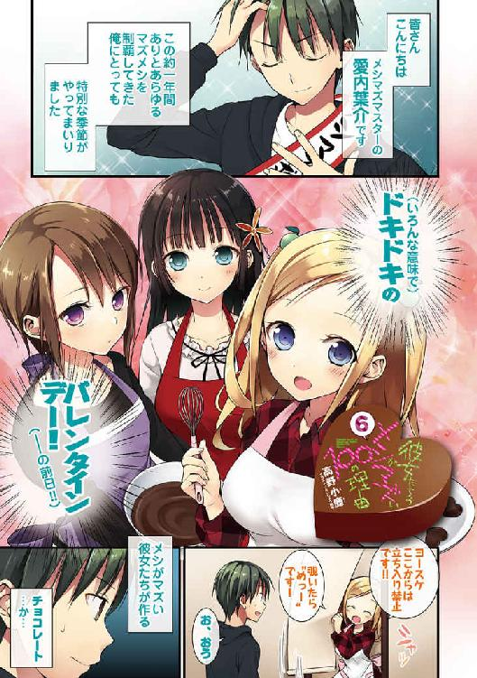
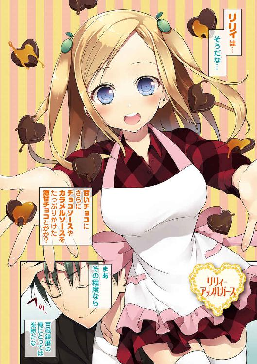
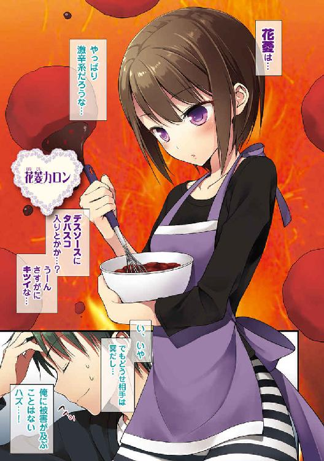

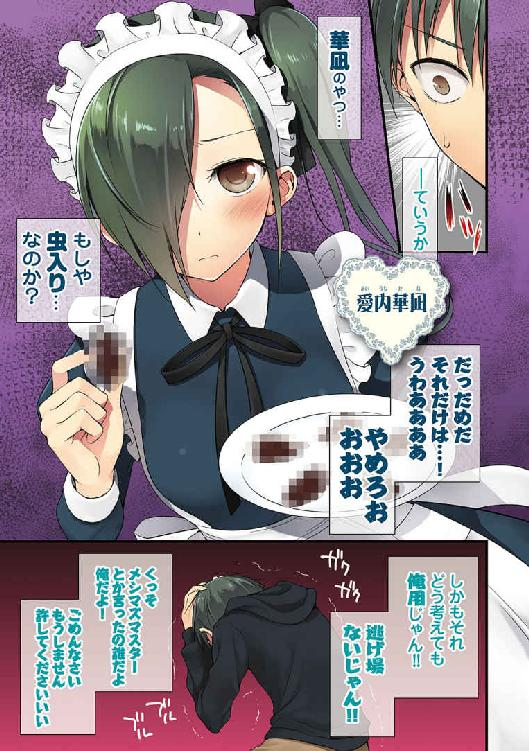
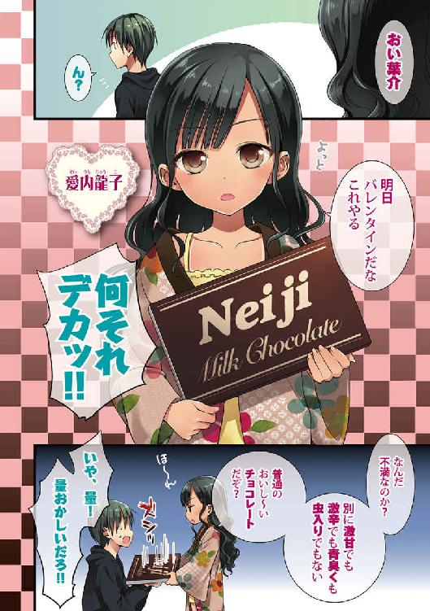
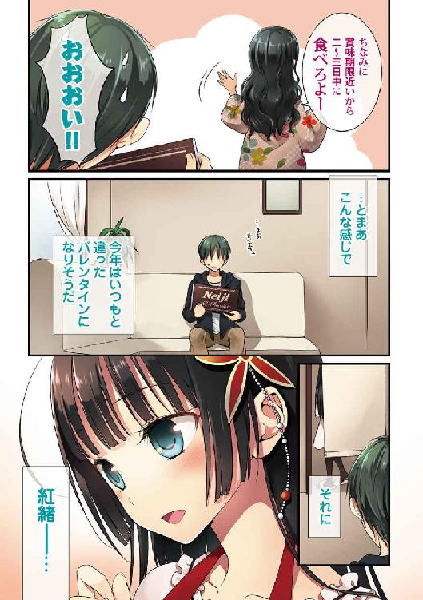
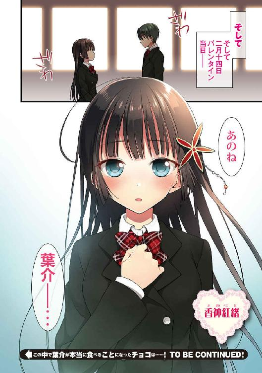
彼女たちのメシがマズい100の理由6
高野小鹿

角川スニーカー文庫
本作品の全部または一部を無断で複製、転載、配信、送信したり、ホームページ上に転載したりすることを禁止します。また、本作品の内容を無断で改変、改ざん等を行うことも禁止します。
本作品購入時にご承諾いただいた規約により、有償・無償にかかわらず本作品を第三者に譲渡することはできません。
本作品を示すサムネイルなどのイメージ画像は、再ダウンロード時に予告なく変更される場合があります。
本作品の内容は、底本発行時の取材・執筆内容に基づきます。
本作品は縦書きでレイアウトされています。
また、ご覧になるリーディングシステムにより、表示の差が認められることがあります。
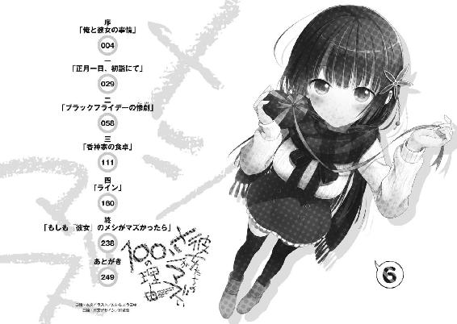
年越し蕎麦を食べて家に帰って来た辺りで、除夜の鐘が鳴り終わった。
──今年が、終わる。
暖房を付けっぱなしで出掛けたのでリビングの中は十分に暖まっていた。なにしろ今年も変わらずの厳冬で、雪が降らずとも外の気温は平気で氷点下を記録する始末。バナナで釘が打てる北極南極アイスランドではないが、夜干しした洗濯物がパリパリに凍りつく程度には東京の冬は厳しい。多少の電気の無駄遣いぐらいは見逃して貰いたかった。
「げっ、マジでギリギリじゃん！」
誰よりも先に家に飛び込んだ俺、愛内葉介は両脚をこたつの中に突っ込みながら、テレビのリモコンに手を伸ばした。
テレビ画面に映ったのは、毎年恒例のアイドルの年越しライブ中継だった。しかし、さすがに画面左上に映る「11：59」という文字に俺は肝を冷やした。まさか、こんな滑り込みになってしまうなんて。
「エッ、もう年がかわってしまうのですか！」
「ああもう......絶対に姉さんが一人でバカみたいな量のお蕎麦を食べて、ずっとお酒飲んでたのが悪いです......！」
「何を言う、華凪。せっかくの年の瀬なのだぞ。やっとクリスマスから立て込んでいた仕事が片付いたのだ。少しぐらいゆっくりさせて貰っても罰は当たらんはずだが？」
続いてドヤドヤと女性陣が部屋に入って来て、同じようにこたつへ雪崩れ込んでくる。
リリィ、華凪、龍子姉さん。
もはやいることが当たり前のように感じられてならない面々だが......何となく、年の瀬を意識すると感慨深くもあるわけで。
なにしろ今年の四月──両親が渡英してしまったばかりの頃、この家で暮らしている人間は俺一人だったのだ。それが一人増え、二人増え、三人増え......気付けば中々の大所帯である。一軒家に四人暮らしならばまぁ普通だろうが、一人暮らしはさすがにスペースの無駄遣いにも程がある。というか寂し過ぎだ、アレは。
だから、なんだ。少なくとも住人が多いことは、間違いなく喜ばしいことだとは思うのだ。うん。
『それではカウントダウンと行きましょう！ 皆さん、今年も応援ありがとうございました！ 十、九、八、七、六、五──』
とはいえ、それでも無情に時間は進んで行く。
男性アイドル達が声を揃えて一年を締め括るカウントダウンを始めた。
ちなみに愛内家は典型的な女所帯ではあるが、幸いにも（？）アイドルに強い関心を示している者がいないため、男性アイドル需要はあまり多くない。
故に時間に余裕があれば、年越しカウントダウンの番組をもう少し吟味することになっただろうが......さすがに、このタイミングでは難しかったわけで。
『四、三、二、一──』
結果、俺達は顔の割りには声質があまり良くないともっぱら評判の男性アイドルのイケメンフェイスを見つめながら、
『ゼロ!!』
年越しの瞬間を迎えることになったのだった。
「あけましておめでとうございますー！」
口火を切ったのはリリィだった。ピョコンピョコンと嬉しそうに跳ねながら、今にも輝き出さんばかりの笑顔の花を咲かせる。
ふむ。それにしてもリリィが「ハッピーニューイヤー」ではなくて、あえて「あけましておめでとう」と口にするとは。ちょっとだけ、意外な選択ではないだろうか？
「あけましておめでとう、リリィ。ここは日本式なんだね」
「ハイ。なにしろワタシも日本でくらしはじめてから長いですからネ。『郷に入っては郷に従え』──そのような分別はバッチリなのです」
妙に満足げな表情でリリィが言った。現地に住んでいる人間よりも、むしろ他の国から来た人間の方が、その手の情緒やワビサビに拘るというのは納得出来る話だった。
と、ここで、
「葉介、あけましておめでとう。オマエと新年の瞬間を一緒に迎えるのは久しぶりだな」
姉さんが言った。
......そうか、ここ数年の姉さんは海外で年を越すのがほとんどで、元旦に愛内家にいたのはおそらくまだ姉さんが高校に通っていた頃まで遡る。
つまり、六年ぶりというわけだ。感慨深くなるのも無理はないだろう......俺はそのことを全く意識していなかったわけだが。
「へ......ああ、そういえばそうだっけ」
「まったく、何を寝惚けたことを言っている──まぁいい。リリィも、華凪もだ。おめでとう。今年もよろしく頼むぞ」
「分かりました......」
「ハイッ、よろしくおねがいします！」
姉さんがぐるりと周りを見回して、リリィ達にも新年の挨拶を済ませた。
さて、となると問題はコレからどうするか、だった。
去年まで愛内家は典型的な三人家族であり、新年になった瞬間に特に何をするということもなかった。グダグダとテレビを見て、適当に寝て、元日は正午ぐらいに起きて、おせちを食べて親戚回りに行く──そんな典型的な正月スタイルだ。
しかし、今年はちょっとだけ例年と趣が違った。
──実は、皆と初詣に行く予定になっているのである。
場所は、うちの街から電車を乗り継いで小一時間ほどの場所にある有名な大社だ。そこに元日の朝から集まって参拝を済ませる手筈になっていた。
ちなみに皆とは、いわゆるいつもの馴染みのメンバーを指す。
今愛内家にいる四人と、クラスメイトである花菱カロン＆藤見川冥の双子、そして華凪の友達でリリィのバイト先の店主でもある斎藤オメガ（多分、執事の神市さんも一緒に来ると思われる）、そして──
「エエト、それで結局今日は何時にここをでればいいのでしょう？」
「オメガ達との待ち合わせが八時なので、七時前くらい、ですかね......」
「それでは遅過ぎるのではないかな。おそらく現地に行くまでに相当混むと思うぞ」
「オー？ やっぱりハツモウデはたくさん人が来るのですか？」
「ああ。おそらく、リリィが日本で経験した中では、一番多いはずだ。かといって、日程をズラしてもどうせ混むのは分かり切っているからな......」
ヒットソングメドレーが始まったカウントダウンライブ番組に一切目もくれず、姉さん達は今日の相談を始めた。アイドルなんて全く眼に入っていない様子だった。
だから、俺だけがぼんやりとテレビ画面を眺めている構図になる。
去年だけで数十万枚のヒットを飛ばしたらしいがさっぱり聞き覚えのない曲をＢＧＭにして、俺は初詣に同行する最後の一人の名前を心の中でゆっくりと想起した。
「......」
香神紅緒。
俺の幼馴染み。そして、俺の──
◇ ◇ ◇ ◇ ◇ ◇
瞬間、今日何度目か分からない呻き声が自然と口から漏れた。
「ずわぁあああみぃいいいい......！」
──何故、よりにもよって都内で最も寒い神社に行かねばならないのか。
──そして寒空の下、集合時間から十五分経っても面子が揃わず、こうして震えていなければならないのか。
一月の早朝とくれば東京でも余裕で氷点下に至ることも多いが、困ったことに実質山梨県に位置している上、日が昇っても恐ろしいほど寒い寺......「高尾山薬王院」を初詣先にチョイスした（選んだのは姉さんだけど）のが運の尽きだった。
「さみぃよ......寒過ぎるよ......ワケ分かんねぇよ......」
着られるだけ厚着をしてきたのは当然、中には全身ヒートテックを装備し、コートも持っている中で一番分厚いモノを選択、マフラーはグルグル巻きで、手袋も欠かさず──
それでも寒い！ メチャクチャ寒い！
山の気温は低い──そんなのは小学生だって知っている世界の常識じゃねぇのか。
つーか、初詣なんてぶっちゃけどこに行ってもあんまり変わらんやん！
明治神宮と浅草寺と伏見稲荷と鷺宮と神田明神を選べるとして、そこに序列があるのかって考えたら、そんなの正直、よく分かんねーじゃん。受験があるから菅原道真な天満宮に行くっつーなら、まだ分からなくもないけど。
なのに、なんでわざわざ東京近郊で一番寒そうな初詣スポットである高尾山をチョイスしたのか！ つーか双子とオメガが全然来ねええええええ！ 畜生、これじゃあ時間通りに集合した俺達がアホみてぇじゃねぇか!?
「フン、軟弱者め。情けない声を出すんじゃない。みっともない奴だ」
隣に立つ龍子姉さんが一人で震え上がっている俺を鼻で笑った。
とはいえ、生憎と、そんなことを姉さんに言われる筋合いはない。というか、ソレは聞き捨てならない言葉だった。俺は真っ向からその言葉に反論する。
「おいおい──そういう姉さんこそ、メッチャブルブル震えてんじゃねーか！ コートの裏にもカイロをくっ付けまくってんの知ってんだぜ!?」
「っ......そ、それは......!?」
──我が家で一番の寒がりは、龍子姉さんなのだから。
もっぱら暑い国に行っては日焼けしまくって帰って来るのが恒例なうちの姉は、実は寒いのが苦手という弱点を持っている。姉さんのパスポートの入国記録も基本的には暖かい国が多く、極めて温度の低い北欧の国々などは一年を通して最も暖かい時季に行くことがほとんど、という特徴があるのだ。
「大体、うちにあった買い置きのカイロを姉さんが全部持ってったせいで、弟の俺がこんなに寒がってるってわけ！ いくつか分けろよ！」
「おいコラバカ！ コートの中に手を突っ込むな！ 寒い！ 止めろ！」
真夏の日差しにジリジリと焼かれたとしても頑なに真っ黒いゴスで身を包んでいた姉さんだが、この日は完全にその「ゴシックソウル」を投げ捨てていた。
ニット帽、耳当て、手袋、モコモコのロングコート、ロングブーツ──普段のヒラヒラした薄い生地やら、フリルやレース、ベルトやバックルといった意匠をほとんど排したガチ仕様の防寒装備である。こんなスキー場にすら余裕で乗り込めそうな格好をしている姉さんに笑われる筋合いなどあるものか！
──などと俺達があまりの寒さにヒステリックになり、ギャーギャーと言い争いをしていると、そんなこちらの様子を見て、不思議な感想を漏らす人間がいた。
紅緒だ。
「やっぱり、葉介と龍子さんを見ていると、兄弟っていいな──って気になりますね」
「えぇ、そうかぁ......？」
「そうだよぉ」
感慨深げな表情で頷く紅緒を見つめながら、俺は思わず下唇を突き出した。
そんなにいいもんかね、コレ。
紅緒の家は一人っ子なので今までにも何度かこういうやり取りをした覚えはある。
そして、その度に俺は今のような、いまいちピンと来ないリアクションを返して来たわけだが──って......紅緒の家、といえば。
──俺は近々、恐ろしく厄介な問題に対処しなければならないのだった。
「なんだ、香神は兄弟が欲しかったのか」
そんな弟の悩みなど知る由もなく、龍子姉さんが紅緒に尋ねた。
紅緒も、僅かにはにかみながら頷いて、
「あはは......はい、それなりに、ですけど」
「なるほどな。確かに私も一人っ子よりは断然望ましいようには思うな。ちなみに、どれが欲しかったのだ？ 姉か、兄か、弟か、それとも妹か」
「え。どれか一つ選ぶとしたら、ってことですか？」
「ああ」
とはいえ、「厄介な姉や妹」的話題は一応、以前に解決済みであることを考えると、少しだけ気が楽な方向に話題がシフトしてくれて、少しだけ安心した俺がいたわけで。
最終的に残されたのは親に関する問題。
イギリス旅行から帰国した直後、紅緒の母親である香神耀子さんが俺に持ちかけて来たとある提案──その解決策について。
「そうですね......、」
僅かな逡巡の後、紅緒が答えた。「どれでも良いと言えば良いんですけど、一番欲しかったのは妹ですね。それも出来れば、凄くしっかりした妹がいいかもしれません」
「ほう......理由は？」
「えーと結構どうでもいい理由なんですけど......たまには誰かに甘えたいなーとか思ったんです。それに私、年上の人とか男の人は緊張しちゃうこともあるんで、そうなると妹かなぁ、みたいな。歳とかは近くても離れててもいいんですけど」
「む......」
俺は少しだけ目を見開いた。話しているのは姉さんと紅緒なので、特に会話に入る気もなかったのだが......なぁこれって、ちょっと意外な言葉が出たんじゃねぇの？
「なるほど、しっかりした妹、か......残念だな。それは我が家で供給してやることは出来んのだ。そうだな、華凪？」
「......」
返事がない。
見ると、華凪は俯いて唇をキュッと結び、携帯電話と睨めっこをしていた。別に待ち時間にゲームアプリをプレイしているとか、そういうわけではない。
開いているのは、いわゆるトークアプリだ。
待ち合わせ時間を過ぎても未だにオメガがやって来ない上、どうも連絡すら付かないらしく、一番の友達である華凪はずっとヤキモキしていたのである。先程からずっと『なんで既読付かないんですか......』などと死にそうな声でブツブツと呟いていたわけだし。
とはいえ、姉さんに名前を呼ばれても全く気が付かないというのは、気を抜き過ぎにも程があるだろう。姉さんは語気を強めて、再度華凪に声を掛けた。
「おい、華凪。ぼーっとしてるんじゃない」
「はぇ......えっ、な、なんですか......!?」
「はぁ............まったく、オマエという奴は」
鬼気迫る表情でもって、ようやく携帯の画面から顔を上げた華凪を見て、姉さんが深々とため息をつく。完全に気を削がれた、という感じだった。
ただ、俺としてはむしろソレで好都合だったわけで。
「ふぅ......」
思わず、安堵の息を吐き出す。
そして、さりげなく──俺は傍らの紅緒の様子を確認する。
「......ぁぅ」
言葉はなく、けれど十二分にその表情は語り。
紅緒は普段の脳天気な様子とは若干趣を変えて、僅かに頰は赤く、伏し目がちで、身体の前で両の指先を所在なさげに何度も組み替えていた。
............危なかった。
姉さんの今の発言は完全に華凪をダシにして、俺と紅緒を堂々と煽りに行くスタイルだった。なんて恐ろしいことをしやがるのだ、この姉は。
実際、俺達くらいの歳にもなれば、新しく弟や妹が出来ることは相当に珍しい。よほどご両親の仲が良いご家庭でもなければ現実的ではないに違いない。ただし、だ。極めて合法な......いや、むしろ法律的な手段でもって弟妹のみならず、なんと姉や兄まで増やせてしまう方法が──この国にはしっかりと用意されているわけで。
あくまで、義理だけど。戸籍上の話だけど。それがナニかなんて、俺はあえて言ったりしないけど。
「ふーむ、やっぱりリューコはワタシの同志ですね。ヨースケとベニオをとてもアグレッシブにくっつけようとしています」
「!?」
ぼそり、と。
隣で、何とも不穏な言葉が響いた。
「年も明けたことですし、ワタシもがんばらなければなりません」
「リ、リリィ......そのやる気は必要なの、かな......？」
「もちろんです！」
俺の唇から漏れた磨り潰したような声とは対照的に、俺の従姉妹──リリィ＝アップルガースの返答は真夏の太陽を想起するほど晴れやかだった。
それに加えて、この日のリリィは誰よりも正月仕様だった。なにしろ、正月に最も相応しい服──晴れ着を身に付けていたのだから。
結局、七時ちょい過ぎにだらだらと家を出た俺と華凪と違い、リリィは姉さんに連れられてその数時間前には出発し、元日の早朝営業をしている美容院で着付けをして貰って来たのである。俺達日本人が普通に洋服を着ているのに、外国人であるリリィだけが純和風の装いをしていることに、何となく情けない気持ちを感じたのも事実。
リリィが着用していたのは、赤を基調とした着物だ。
......生憎と俺は着物の機微について語る上等な目を持っていないため、帯に入っている金色のラメみたいなのが綺麗だとか、モチーフとして刺繡されている鳳凰がカッコいいだとか、レンタルだろうが見るからに高そうとか、着物って防寒性はどうなのかな、とかそういう低レベルな感想しか出て来なかった。
けれど、その晴れ着がリリィの金色の髪と合わさって、ため息が出るほど美しく見えたのは紛れもない事実。リリィは基本的には「可愛い系」なのだけど、母親のレニーさんを彷彿とさせる「綺麗系」にもスタイルチェンジ出来るのだ。
その格好がもたらすイメージはまさに豪華絢爛の一言。
もちろん、俺達の前を通り過ぎて行く初詣客の目も釘付けになってしまっていた。
俺達の集合場所でもあるケーブルカー降り場から寺院へと向かっていく途中、まるでレンズをフォーカスするかのようにククッと、人々の視線がリリィに引きつけられる光景は、傍から見ていると結構面白いモノだった。
「もう、ワタシが日本にいられるのも三ヶ月だけですから。その間に、ヨースケとベニオには幸せになってもらわなければなりません！」
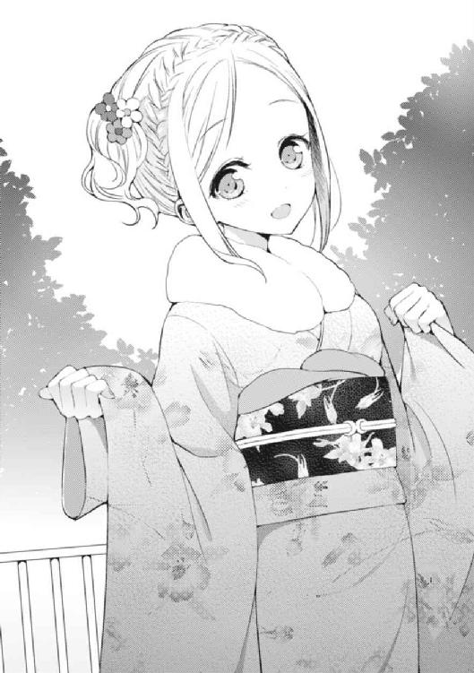
「............その心意気は嬉しいんだけどね」
力強い口調で決意表明をするリリィ。一方、俺はたじたじになってしまっていた。
こんなことになってしまったのは──何もかも、イギリス旅行で巻き起こった様々な事件が原因だ。あれ以降（と言っても、旅行が終わってからまだ一週間も経っていないんだけど）、リリィの中に、とても困った目標が生まれてしまったのだから。
──と、その時だった。
「アハハーすいません、皆さん！ ちょっと遅刻してしまいました！ あ、そうそう。忘れる前に済ませておきましょう！ あけおめことよろでーす！」
「寒過ぎる......マジでありえないんだけど......」
ケーブルカー降り場のすぐ近く、雑踏に混じって大層テンションの高い声と、そして低い声が俺の耳に届いた。
振り向いた俺は、そこに四つの見知った顔を発見する。
「いやぁ、はは。すいません。お嬢の着替えが手間取りまして......」
「申し訳ない。カロンが全然起きなくて、大分約束の時間をオーバーしてしまった」
まるで悪びれる様子のない女子二人と非常に恐縮した様子の男二人──斎藤オメガ、執事の神市さん、そして花菱カロンと双子兄の藤見川冥という面子。
──ようやく遅刻組が到着したのだった。
「ワゥ！ オメガもお着物です！ あけましておめでとうございます！」
真っ先に反応したのはリリィだった。というのも、堂々の遅刻でもって登場したオメガもリリィと同じく晴れ着に身を包んでいたからだ。
オメガの着物は青を基調としたシンプルなデザインだったが、コイツの家の金持ち具合を十分過ぎるほど理解している俺からすれば、それはもはや札束を身に纏って歩いているようにすら思えてしまうほどだった。
もしも、うっかりソフトクリームなんかを着物に溢してしまったら、目玉が飛び出て失明するほどのクリーニング代を請求されるのは必至ではなかろうか......怖いから、あまり今日はオメガに近付かないようにしよう。うん、それがいい。
「やや、リリィ先輩もおそろいとは！ そーなんですよー。うちは正月はコレがデフォなんです。どうです、先輩的に『初着物』の感想なんかは？」
「うーん、そうですネ......、」
リリィが苦笑しつつ答える。「とっても可愛いのはいいのですが、すごく大変だなぁとおもいました。毎年きているなんて、オメガはすごいです」
しかし、そういう気苦労とは無縁のリリィはトコトコと草履を鳴らしてオメガに近寄って和やかなムードで着物トークを始めた。オメガもこれにすぐさま同意して、
「あー、やっぱりそう思いますよね。準備が超面倒なんですよねぇ、着物」
「ハイ。着替えるまでにすごく時間が掛かるのもそうですし、寒さの問題とか、それとその、少し胸元が息苦しい辺りが......」
「アハハ、ですよねー！ メッチャ分かります。あれ、でも、もしかしてリリィ先輩、タオルとかで潰してます？ だとしたら余計大変かもしれないです。個人的にオススメなんですが、和装ブラという日本固有の文明の利器があってですね、特にアタシなんてオーダーメイドじゃないとマジで話にならないので専門の業者を利用していまして──」
「オメガ！ そんなどうでもいい話してる場合じゃないです！」
和装における巨乳の対処法──という非常に男として興味深い話題で二人が盛り上がっていた時だった。
華凪がオメガの両肩をガバッと摑み、食って掛かったのである。一方、怒鳴られた本人であるオメガはいつも通り飄々としたままで、
「なんですか、カナギ。不躾な。あ、そうだ。あけおめー」
「いや......『あけおめー』じゃないです......」
「ん、あけおめは不満なんですか。なるほど、気軽過ぎますか。となれば、」そしてオメガが言った。「やはり『ことよろ』ですか」
「『ことよろ』でもないです！」
わなわなと身体を震わせながら、清涼な山の空気にもまるで負けていない透き通った声で、華凪が言い放つ。
「オメガ......なんで電話もメールも全く反応してくれなかったんですか......！」
「ふへ？ なんですか、カナギ。あけおめの一言もなしとは、マナー違反ですよ？ それとも、そんなにアタシに会いたかったってことですか？」
「そ、それはそうだけど、厳密にはそういうことじゃない......！」
新年が始まってまだ半日も経っていないというのに、早くも「初泣き」を済ませてしまいそうな半べそ顔である。どうやら自分の友人が連絡も付かず、兄やら姉に囲まれてひたすら待ち続けるというシチュエーションは、このとても打たれ弱い妹にとっては、相当なプレッシャーとなっていたようだ。
一方、華凪が早くもマジ泣きしそうなことに気付き、冗談で流すわけにもいかないと悟ったらしきオメガはとても気まずそうな表情を浮かべると、
「あは......非常に言い辛いのですが、バッテリーが切れてしまいましてですね......」
液晶に蜘蛛の巣状のヒビが入った、見るからにボロいスマートフォンを掲げ、露骨に視線を逸らした。華凪は更に語気を強め、続ける。
「なっ......だ、だから、ずっと言っていたんです......！ オメガはお金だけは使い切れないくらい持っているんですから、いつまでもそんな古い機種使ってないで新しい機種が出る度に買い換えるくらいすべきなんです......！ 液晶が割れたままのスマホを何ヶ月も使い続けてる社長令嬢とか有り得ないです......！」
「いや、そうは言いますけどね。まだコレは普通に使えますし、長年使ってて愛着もあるわけで......」
二人の会話は完全に脱線してしまっていた。
別にオメガが延々と古臭い携帯を使っていることなんて、今はどうでもいいのだ。
最大の問題はこの圧倒的な寒さにある。
正月の高尾山は、立っているだけでも凍りついてしまいそうになる氷点下の世界。そして俺達が新年早々集まったのは、無駄話をするためではない。ンなこたぁ帰ってから商店街のファミレスででもやればいい。あくまで、俺達は初詣に来ているのだから。
と、ここで。
「──それくらいにしておけ。新年早々、人目もある中で何をやっているのだ、オマエ達は。しっかりしないか」
ピシャリ、と。
姉さんに一喝され、酷く挙動不審だった華凪も、一度身体をぶるりと震わせた後、ゆっくりとオメガから身を引いた。対するオメガも小さく「すいませんでした......」とさすがに今度こそは申し訳なさそうな様子で頭を下げた。
初めからそうしていれば良いのに、生きにくい奴である。
「さて、ようやく面子も揃ったことだし、出発するとしよう。いいな？」
龍子姉さんがようやく揃った面々をぐるりと見回しながら言った。
俺達はそれぞれ頷きながら、
「あいよ。じゃあ、さっさと済ませちまおうぜ。もう寒くてイヤになりそうだよ、俺」
「ヨースケはさっきからずっと同じことばかりいっています！」
「い、いやね、リリィ。だってしょうがないだろ？ こんだけ寒いんだしよ！ 皆だってそう思うだろ？」
「いえ......ボクはあまり......長野の冬よりは全然マシですし......」
「そーですね、アタシもカナギに一票です。ま、冬の山ならこんなもんですよ」
「あたしは途轍もなく寒くて、正直来なければ良かったというのが本音なのだけど」
「......おい、冥。花菱はマジでいきなり逃走する可能性があるから、ちゃんと見張っとけよ」
「言われるまでもないな。その可能性は重々承知の上でここまで連れて来てる」
などとガヤガヤゾロゾロやりながら歩き始めた。
結構な大所帯である。
「では行くぞ。しっかり付いて来るように。と、その前に一つ。はぐれた時の話をしておく。ただ、今回はこの人混みの中でも丁度目印になりそうな背の高い奴がいるので、落ち着いて一度辺りを見回すように──」
瞬間、姉さんの言葉を遮って華凪が涙目で絶叫した。
「ッ......!? ね、姉さん酷すぎます......！ じ、自分の妹を背の高い目印呼ばわりするだなんて......!? ボ、ボクには迷子になる権利すらないって言うんですか......!?」
「............私は華凪ではなく、神市のつもりで言ったのだが」
「えっ──」
「あはは......まぁ、おれは一応、百八十五あるからねぇ」
正月でも普段と変わらない自身の執事服を指差しながら苦笑する神市さんと対照的に絶句する華凪。呆れた様子の姉さん。
そして、そんな光景を見てニヤニヤする一同。
──ほんの少し前には、決して見ることのなかった光景がそこにあった。
去年の正月はそもそも初詣に行ってないし、リリィや花菱、オメガや神市さんとは出会う前で、姉さんは海外にいて、華凪は長野にいた。冥とは去年から同じクラスだったけれど、基本的にはインドアな俺達なので、他の女性陣がいなければこうして初詣に同行することなんてあまりなかっただろう。
だから、
「皆、楽しそうだねぇ」
「だなぁ」
「私、初詣って友達と行くの初めてなんだ」
「そうなのか」
「うん。行かないことも多かったし、行くとしても親戚回りの後とかに行くことの方が多かったから」
変わらないのは、気が付くと──いつの間にか俺の隣を歩いている少女だけ。
香神紅緒、だけ。
......いや、何も変わっていないわけでは、ないのだ。
確かに一年前の俺達が同じシチュエーションに置かれたとすれば、きっとほぼ同じ内容の会話をしたとは思うのだ。
とすれば、それ以外の要素はどうだろう。歩く速度、息遣い、お互いの間合い、纏う雰囲気──様々なモノが、少しずつ、あの頃と違って来てはいないか？
そうだとしたら、変わったのはどちらだろう。
俺だろうか。紅緒だろうか。もしくは、どちらも、だろうか。
──そして、俺達の関係が小さくではなく、より大きく、ガラリと変わることはありえるのだろうか。
「今年も良い一年になるといいね」
「ああ」
俺は嚙み締めるように呟いた。
「ホントにな」
寺院へと向かう山道を歩いているうちに、自然と隣り合う人間が変わっていった。
最初のうちこそいつの間にか紅緒が隣にいたのだが、やはり女子は女子同士で固まって姦しくなるのが自然の摂理という奴らしい。先頭を行く龍子姉さんに率いられる形で華凪とオメガ、そこから少し離れて紅緒・リリィ・花菱の仲良し三人。
そして一番後ろをダラダラ寒そうに歩くけったいな集団が、
「なんか珍しい形になったよねぇ......」
「ホントそうっすねー」
「オレ達三人が一緒に行動するとか初めてですしね」
──俺、冥、神市さんという余りの男達だった。
要は、俺と冥に混じって神市さんが行動していることが珍しいのである。俺達はお馴染みのグループの面子としては数少ない男性陣ではあるが、こうして三人揃う機会というのは今まであまりなかったのである。
「でも、こんな後ろにいていいんですか？ ほら、オメガも花菱も結構前を歩いてますし」
神市さんと冥を交互に見ながら言う。
二人はそれぞれオメガと花菱という困った身内を監視する目的で、ここにやって来ている部分があるはずだ。この場所からも先行グループで歩いている二人を視認することは十分に可能だが、なんと言っても初詣の山道である。少し目を離したせいで万が一、という可能性は十分過ぎるほどに考えられる。神市さんは曖昧に頷きながら気怠げな様子で、
「ああ......まぁ、いいんじゃないかな、多分」
「ほ、本当にいいんですか？」
「というかねぇ。おれがいると邪魔だからって追い払われたんだよねぇ。『せっかく女の子だけでガールズトークしたいのに神市が近くにいたらマジウザいんですケド！ しばらくアタシの目の前から消えてなさい！』って言われたよ。ひどいよね」
「そのオメガの喋り方の真似、スゲェ似てますね」
「だろう？ ちょっと自信あるんだ。お嬢を知っている人には大体ウケるネタだよ」
神市さんのオメガの口真似（声をちょっと高くしてかなり早口気味、抑揚を無駄に強く付けて突き放すように話す感じ）に感嘆しつつ、でもオメガ達と一緒にいるうちの姉は間違いなく「女の子」って歳じゃないんだけどなぁ、などという感想を抱く俺。
でも神市さんってオメガの護衛役みたいなもんでもあるんだし、何だかんだで主人に無下にされても側にいないといけない役柄じゃないのかねぇ......。
「ま、今日はここに来てるのはおれ一人じゃないしね」
「あれっ。そうだったんですか？」
「うん。私服警官みたいな？ まぁ実際、普段もおれ以外にも誰かしらいることは多いんだけどね。でも、お嬢の付き人やるの皆嫌がるからねぇ。同じ給料なのに他のご兄弟の皆さんとは、従者に対する『気遣い』ってものが違い過ぎるのさ」
「なんとも......神市さんも苦労なさってるのですね......」
「だろう？ 冥君もそう思うよねぇ」
冥の言葉に深々と頷き、神市さんは額を押さえながら言い放つ。「正月の一日から出勤してる方のことも少しは考えて欲しいって話だよ。もうここ何年も年末年始に自分の時間を持てた記憶がさっぱりないしさ。紅白だって最後に見たのはもう一世紀前だよ？」
「ハハハ......」
神市さんはかなり不満が溜まっている様子だった。
ただ、嫌だ嫌だとは言いつつも辞表を提出することもなく、何だかんだで何年も執事をやっているのだから、そこはご愛敬という奴なのではないかと思うけれども。
本当にこの仕事が嫌ならば神市さんの性格を考えると、三日も経たずに仕事をバックレるのは確実だろう。実際、『大変だ』とか『酷い』とは言いまくっているものの、『辞めたい』という決定的な言葉は神市さんの口からは出て来ていないわけだし。
「──でも、アレだよね。今一番大変なのはおれよりも、断然、葉介君じゃないかな」
「......へ？」
神市さんが嚙み締めるように呟いた。
俺は不意打ち的な話題転換に付いて行けず、間抜けな声を垂れ流しにする。一方、神市さんは相も変わらず飄々としたまま、冥の方を眺めると、
「冥君は知ってるかな。葉介君に関する一番ホットなあの話題」
「ええ、ああ。はい、」
すかさず冥が頷いた。「あの話題ですよね？ もちろん把握済みです。オレもさっきからどのタイミングで話を切り出したモノかと考えていました」
「お、知ってる？ じゃあ話が早いや。実はさぁ──」
神市さんは水を得た魚とでもいうような具合に、少し早い口調で捲し立てた。
「今日のおれは葉介君を励まそうと思って、わざわざこんな寒い山までやって来た部分がそれなりにあったんだよねぇ。ほら、凄く大変そうだろう？ いつだって葉介君と会えるわけじゃないからね。この機会は見逃せなかったんだよ」
「なるほど、それは奇遇です。オレはあまり葉介を励ます意志はありませんでしたが、とにかく詳しい事情を聞きたいと思って来たという部分はありましたから」
二人は完全に俺を置いてけぼりにして謎の意気投合を見せていた。
あの話題、だと？
それって言う迄もなく──
「で、どうなってるんだ、葉介。委員長の家にお呼ばれして、ついにご両親に挨拶しなければならなくなったそうじゃないか。いつ行くんだ？ 今日か？ 三が日中か？ それとも正月明けか？」
「いやぁ、災難だよねぇ葉介君。まさか、その若さで女の子の家に『お呼ばれ』することになるだなんて。昔から知ってる相手の家に畏まって行かなきゃいけないなんて、面倒臭いにもほどがあるよなぁ。おれなら絶対イヤだな」
香神家の夕食に、招待されてしまったことについてだった。
思い浮かぶのは、俺がイギリス旅行から帰って来た当日の出来事だ。
帰国したばかりの俺は英国土産を渡すために紅緒の家を訪れたわけだが、するとそこで久々に顔を合わせた紅緒のママさん──香神耀子さんから思いも寄らぬ提案をされたのである。
『葉介君。年が明けて落ち着いてからでいいから一度、うちにご飯を食べに来なさい』
プラスで、こんなことも言われてしまった。
『うちの料理のこととか、色々なことを知った上で、葉介君にはちゃんとした決断をして貰った方がいいと思うのよ。あなた達のことを考えると、ね』
ちゃんとした決断。
決断って何だ、具体的に。
......いや、分かってはいるんだけどさ。
でも──まさか、それを向こうの親から要求されるなんて。
それに、俺がこんなにも苦悩しているのは、単に向こうの家に行った時、とても居心地の悪い展開になることが容易に想像出来るためだけではない。
俺は、単に家に来るように言われたわけではなく、夕食に誘われたのである。
夕食。
もちろん、それを作る人物は耀子さんだ。究極のメシマズモンスターである香神紅緒の生みの親、香神家の食卓を切り盛りし、紅緒に料理を教えた本人──『カエルの子はカエル』だとすれば『カエルの親はもちろんカエル』を地で行くお方なのである。
紅緒のこと、メシのこと。
二つの苦悩がダブルパンチの形で俺に襲い掛かってくる。
もっとも紅緒とメシの話は切っても切り離せない部分だとも思うので、ある意味で極めて強大な一つの問題が立ち塞がっている、という見方も出来るかもしれない。
「ねぇ、葉介葉介。葉介は、お賽銭っていくら入れる？」
──などと考えている時に隣から聞こえた、あまりにものほほんとした甘い響きが生み出す落差は強烈だった。
歩きに歩いた後、薬王院の本堂へと俺達はやって来ていた。元日早朝の本堂前ともなれば、人の流れが最も停滞していて、ぎゅうぎゅう詰めになっている場所だ。同行者全員が仲良く並んでお参りを済ませるのは難しい。
結果、俺達は各々で賽銭箱の前へと挑み、各自参拝する──という方法を取ることになった。結局、大体同じタイミングで賽銭箱の前に到着した紅緒と並んでお参りすることになってしまったわけだが。
「賽銭？ そりゃあ五円に決まって──って、やべ。五円玉ねぇや」
「あれ。忘れちゃったの？」
「忘れたっつーか、そこまで気を遣って初詣に来ねーだろ」
「えー。そんなことないと思うけどなぁ」
「まあいいや。十円で......」
「あ、じゃあ両替してあげる！」
紅緒が自分の財布から五円玉を二枚取り出した。そしてチャリンチャリンとこちらの小銭入れの中に黄土色の硬貨を二枚落とすと、スッと笑顔で掌を俺の方へと向けた。
「......サンキュ」
「どういたしまして！」
俺は紅緒の笑顔の前に何も抵抗出来ず、握っていた十円玉を開いた掌の上へと置く。
紅緒は満足げに首肯し、賽銭箱の方へと向き直ると、
「やっ！」
五円玉を投げ入れ、両目を瞑り、手を合わせた。
なむなむ、という擬音が付きそうな具合で。
俺としてはそのまま、あまり直接見る機会のない目を瞑った紅緒の姿を見ていたい欲求もあったのだが、同じくらい後ろめたさもあったわけで。
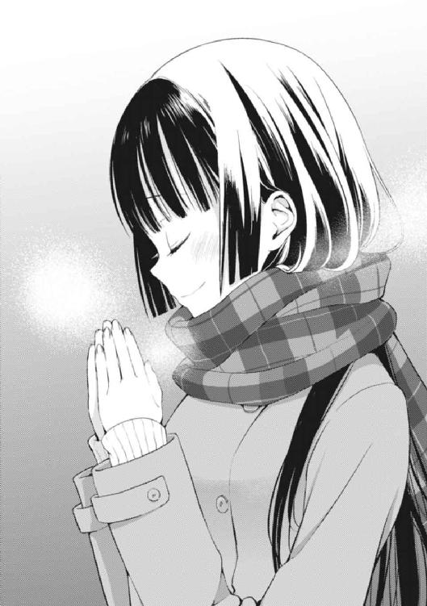
結果、俺も同じように賽銭を投入し、『なむなむ』することにした。
「っと......？」
問題発生。
というのも、俺がいざとなって困ってしまったのは肝心要の『願いごと』についてだった。ここに来るまでの間、散々時間があったにも拘わらず、何を神様に直訴して願いを叶えて貰おうか、全く決めていなかったのである。
どうするか。せっかく年に一度の機会なわけだし、明らかにしょぼかったり、適当な願いでは勿体ないのではないだろうか。
かといって──あまりに現実的な願いもどうなのだ？ 目下最大の悩みである「香神家へのお呼ばれ」の対策を神に頼るのは何となく違うような。それを何とかするのはあくまで俺の決断と根性であるべきで、神に何とかして貰う事柄ではないような。
そうだな。もう少し、俺にはどうしようもないこと──神頼みっぽいことにしよう。
「うむ......」
「ねーねー葉介、葉介」
「なんだよ」
「なにお願いしたの？」
紅緒がこちらの肩を軽く叩きながら訊いた。俺は答える。
「俺か？ もちろん『お前の料理が上手くなりますように』ってお願いしたぞ」
「えええええ」
ショッキングな声。そのまま、紅緒は酷く驚いた様子で異議を申し立てる。
「ちょっと待って、葉介。そのお願いはおかしいよ」
「どこがだよ」
「神様にお願いなんかしなくても、私の料理は上手くなる可能性を秘めているよ？」
「それが可能性を秘めるばかりで、全然なってないから神に頼んだよ」
「ひどい！」
「事実じゃん」
「それは！ ......まぁ確かにそうなんだよね......お恥ずかしながら......」
もう紅緒の料理を食べ始めてから十ヶ月は経つが、未だに彼女の料理は根本的な部分で進歩の「し」の字も見えないわけだから困ったものだと思う。
料理技術の問題などは、とっくに解決されているのだ。
肝心なのは紅緒の料理に対する価値観と味覚──生まれてからこの歳に至るまで築き上げられてきた食育の成果、そして親から受け継いだ絶望的な味覚。
この不変不動の二本柱がある限り、大幅な料理の改善は非常に難しいと言わざるを得ないと思うのだ。それこそ奇跡でも起こらない限りは。
紅緒が額を押さえ、切実な表情を浮かべた。
「ううむ......むむ......」
「だろう。つーか、そういう紅緒は何をお願いしたんだよ」
「え。私？」
「おう」
「うふふ」
「なんで笑う!?」
──俺は訊かれて当たり前のことを訊いたはずなのに！
「秘密だから！」
紅緒がハッキリとした口調で言った。
「は......」
「たまには、私達の間に秘密があってもいいよね」
そして、ニコッと快活に笑う。そんな真っ直ぐな口振りで「秘密」と言われると、逆に追及出来なくなってしまう。「そうかぁ？」とも「よくねーよ！」とも言いにくい。
そんなこんなで俺達の初詣は、ささやかな謎を残したまま、終わったのだった。
◇ ◇ ◇ ◇ ◇ ◇
初詣が済み、その後は皆で高尾名物の蕎麦でも食べていこうかという話に一瞬だけなったのだが、そもそも半日ほど前に年越し蕎麦を食べたばかりでまた蕎麦もどうなのよという至極真っ当な結論が下った。
そのため、ぶるぶると身体を震えさせながら下山した俺達は、その日は目的を果たしたということで素直に解散することにした。
なにしろ、今日は一月一日だ。
友人とばかり遊んでいるわけにもいくまい。家族や親戚との付き合いを基本的には優先させるべきだろう。今日、誰も欠席者がおらず、声を掛けた人間が全員集まっただけでもラッキーなことだったと思うべきなのだから。
まず、住んでいる街が違う関係上、オメガと神市さんが離脱した。おそらく年始は誰よりも忙しかったはずなのに、わざわざ時間を作って来てくれたのには脱帽する。
オメガ曰く『全部、カナギへの愛故です』とのこと。
......まぁなんだ。
よくやるものだと思う。
続いて木々津市に到着した後は、前もってご両親が駅に車で迎えに来ていた花菱達が離脱した。どうも、そのまま親戚への挨拶回りに向かうらしかった。
ちなみに例年ならば、我が家も花菱家のように挨拶回り（うちはお袋の実家が関西なのだ）に向かうため新幹線に乗り込んでいてもおかしくない。
とはいえ、今年はその辺りの帰省は一切無しだった。
肝心要の両親が不在だというのに、親戚が来るのも親戚の家に行くのも座りが悪いだろうという理由である。
だから正直なところ、俺達にとって元旦に初詣の予定が入ったことは非常に都合が良かった。もしも、この予定がなければ、基本的に纏まりを欠いた愛内家の四人は、まるで外出することもなく、三が日をひたすら駅伝を見て過ごすという極めて生産性のない正月を過ごしたであろうことは想像に難くないからだった。
「じゃあ、私も今日はこの辺りで帰るねー。次にこっちに戻って来るのは、多分、学校が始まる直前かな？」
正月故か、何とも浮かれた雰囲気を纏った木々津市の町並みをだらだらと歩いて来た俺達だったが、丁度自宅が見えて来た辺りで紅緒がぽえんと言った。
やはり、紅緒の家も親戚回りがあるようだ。
香神家は母方の実家──つまり母親である耀子さんの出身が青森だったはず。これはバッチリと記憶に残っていた。なにしろ、つい先日、耀子さんが紅緒のパパさんと喧嘩して実家に帰ってしまった際、その行き先が青森だった。忘れるわけがない。
紅緒の言葉に相槌を打ちながら尋ねる。
「ほー。やっぱ青森帰るわけ？」
「うん、そうだよ」
「どうやって？」
「ん、飛行機」
「......青森にも空港ってあんの？」
「む。さては葉介、青森を舐めてるね。勿論あるよ。結構歴史も古くて、お母さんが東京に来る前からあったらしいからね。うちは大体毎年帰るけど、いつも飛行機かな。新幹線を使うよりも楽だし、時間も早いからね」
「へぇ......」
毎年、という言葉に少しだけ俺は驚いた。
改めて考えてみると、紅緒が正月に何をしているかなんて、今まで全く気にしたことがなかったのだ。生まれてからずっと隣の家に暮らしているとはいえ、俺と紅緒の生活の範囲がこんなにも接近したのは、ここ数ヶ月の話なのだから。
それまでは、あくまでよくある「幼馴染み」の領域を出ることはなかったわけだ。
お互いに知らないことは、沢山あるはずだった。例えば紅緒だって俺が今までは毎年、正月に関西のお袋の実家に帰っていたことなんて知っているはずが──
「そういえば、葉介は今年、三重に帰らないの？」
「へ」
──ない、と思ったのだけど。
「なんでお前、お袋の実家が三重だって知ってんの......？」
「えっ......なんでって言われても、」
とても不思議そうな顔で紅緒が答える。「随分前から知ってるよ？ 葉介の家は、お父さんはこっちの人だけど、京佳さんの実家は三重の三日市なんだよね。喋り方に関西訛りとか全くないから意外な感じするけど。えーと......あってます、よね？」
隣を歩いていた龍子姉さんへと紅緒が問い掛ける。
姉さんは小さく頷いて、
「ああ、その通りだよ。よく覚えていたな、香神」
「あはは。昔、小学生ぐらいの頃に聞いたのが未だに頭から消えてないんです」
「なるほどな。その記憶力を是非とも、うちのバカにも見習わせたいところだ。と、そうだ。葉介の代わりに答えておくと、うちは今年は帰らないな。私も華凪も数年帰省していないので今年こそはと思っていたが、やはり親がどちらも不在なのは色々とやりにくくてな。来年こそは何とかしたいところだよ」
姉さんと紅緒が話しているのを傍から見ながら、俺は少しフクザツな気分になった。
もしくは「不安になった」とでも言うべきだろうか？
実際、俺はアイツのことなら誰よりも知っている──などと、思い上がったことを言うつもりは毛頭ない。気になったのは、その逆──想像以上に俺は紅緒のことを知らなくて、紅緒は想像以上に俺のことを知っているのではないか。
そんな、疑惑。
「じゃあ、私はこの辺で失礼しますね。今日はありがとうございました！」
そんなことを考えていたら、あっという間に俺達は家に帰り着いてしまっていた。
香神家の門の前で立ち止まった紅緒は俺達の方へと向き直り、小さく頭を下げる。
姉さんやリリィが少しだけ別れの言葉を交わしてふいっと会釈をしたのが眼に入ったので、ぼんやりしていた俺もハッとして、急いで倣って頭を下げた。
けれど、そうして顔を上げた俺を出迎えたのは、真っ直ぐ俺の方を見ていた紅緒の柔らかな視線だった。
紅緒がくすくすと笑いながら、言った。
「葉介もあんまりお正月からぼんやりしてちゃ駄目だよ」
「......うっせーな。分かってるって」
「あはは。じゃあね、次は新学期の学校で」
「......ああ。またな。風邪とか気をつけろよ。青森って寒そうだし」
「寒いよー。雪もすごい積もってるしね」
そして紅緒が軽く会釈をして家の中へと入っていこうとした、その時だった。外から扉を開ける前に、香神家の玄関口がギィッと鈍い音を立てて開いたのは。
「あ......」
「紅緒、帰ったの？」
現れた女性の顔を見て、ぽつりと紅緒が呟いた。「お母さん」
「おかえり、紅緒。意外と遅かったわね」
「ただいま。うん、かなり混んでて......ケーブルカーに中々乗れなかったの」
「そう。大変だったわね。でも、元旦なのにわざわざ高尾山まで行く人がそんなに多いなんて思わなかったわ──皆もありがとうね、紅緒によくしてくれて。そうそう、あけましておめでとう。今年もよろしくね」
紅緒を見ていた視線が、その肩越しに俺達の方へと向けられた。
──言う迄もなく香神家の玄関口から現れたのは、紅緒の母親である香神耀子さんだった。
紅緒と同じ艶やかな黒髪を頭の後ろで編み込んだ髪型、周囲に一瞬で緊張感を張り巡らす厳しい眼差し、低くて落ち着いた声。
耀子さんは先週に出会った時とほとんど同じ格好をしていた。
クリーム色のトレンチコートに黒のブーツ。手に鞄などは持っていないが、これから他所に出掛ける格好なのは間違いなかった。おそらくは紅緒が帰ってくるのを待って、帰省する腹づもりだったのだろう。
「あけましておめでとうございます、耀子さん。ですが、むしろ紅緒さんのおかげで私達の方が色々と助かっているようなものですから。感謝しています」
耀子さんの言葉に真っ先に反応したのは龍子姉さんだった。
......紅緒さん、ねぇ。
耀子さんも紅緒と同じで「香神」なわけだから、苗字呼びはし難いわけだ。何とも久々に姉さんの余所行きモードを見た気がするね。喋り方も凄く畏まった感じになってるし。
実は姉さんは昔から耀子さんと、とても仲が良い。
うちの母親が酷くちゃらんぽらんな一方、耀子さんは厳しくて真面目な人で、姉さんの波長がよりピタリと来るのがどちらかといえば──まぁ考えるまでもない。
「あら。別にお世辞は要らないのよ、龍子ちゃん？」
くすり、と耀子さんが笑った。
「最近は本当にこの子ったら、何かと理由付けてそっちに行きたがるんだもの。来過ぎて少し目障りな時もあるでしょうし」
「確かに......凄くその通りです......紅緒ちゃんはもう少し自重すべきです......」
どう考えても『目障りだなんてそんな──』などと言葉が出そうな会話の流れに真っ向から反逆して華凪が深々と頷き、同意した。
「おい、華凪」
「ひゃっ!?」
瞬間、コート越しに姉さんが華凪の尻をぱしんと叩いた。ご不満な様子で華凪を睨みつける。「華凪。人前でそういうことを言うんじゃない」
「で、ですが......！」
華凪がカッと目を見開く。年が変わってもやはり華凪は紅緒に強い対抗意識を燃やしているようだが、逆に姉さんが紅緒の肩を持ちたがることも変わらずだった。
「ですがもクソもあるか。本人がいるどころか、母上の前で......まったく、申し訳ありません。こんな妹で」
「いいのよ、龍子ちゃん。華凪ちゃんがそう思うのも無理はないもの。ねぇ、紅緒？」
娘に送られる意味深な流し目。
一方、肝心の紅緒の方は、困惑と苛立ちを煮詰めたような表情で、答えた。
「お母さん......そこで『ねぇ』って言われても、困るんだけど」
「あら。そうかしら」
「そうだよ」
「ふぅん......」
小さく頷いて耀子さんが紅緒から視線を逸らした。
次の瞬間、
「そうだ、忘れるところだった。皆、ちょっと待っててくれる？」
ふいに耀子さんが思い出したように言った。
そして俺達が返事をするのも待たず、家の中に戻ってしまった。
とはいえ、その不在はあっという間に消えて無くなる。
俺達が揃って顔を見合わせて首を捻るほどの間も置かず、再度玄関が開き、耀子さんが慌ただしく戻って来た。
先程と変わったところは一つだけ。
耀子さんの手に祝儀袋があったことだ。
「──お年玉、用意してたのよ。大したことない金額なんだけどね。今年はうるさい京佳がいないから特別に、ね」
「「「「!?」」」」
お年玉、だった。
その場にいた面々は、一様に驚愕した。俺が驚いた理由は至ってシンプルだ。というのも──今まで俺は耀子さんからお年玉を貰ったことは一度もなかったのである。
とはいえ、これには明確な理由がある。
まぁ、理由というより「協定」とでも言った方が事実には近いのだけども。
実は愛内家と香神家には以前より母同士による示し合わせの結果、『お互いの子供にお年玉をあげてはならない』というルールが存在していたわけだ。
この根底には数の論理が強く影響している。
愛内家の子供は三人、一方で香神家は一人──両家が相手方の子供にお年玉を渡し合った場合、香神家の負担が一方的に増大してしまう。
だからこそ、リリィを除く四人は大いに驚いたのである。十年以上続いていた「お年玉協定」が、唐突に破棄されたのだから。
結果、耀子さんの言葉に最初に反応したのは──リリィだった。リリィがとても嬉しそうに耀子さんへと尋ねた。
「オー、オトシダマ！ ヨーコもくれるのですか？」
「ん、もしかして、リリィちゃんはもうお年玉を誰かから貰ったのかしら」
「ハイ！ リューコがさきほど！」
「あら......」
耀子さんが眼を見張り、龍子姉さんの方を見た。
ちなみにリリィが言ったのは事実。姉さんは高尾山への初詣が済んで、集まった面々が解散するちょっと前くらいに全員にお年玉をくれた（もちろん、神市さんは除く。もう一人の大人である神市さんは姉さんが祝儀袋を取り出した時、一人素知らぬ顔で明後日の方向を見ていた）。
姉さんが成人してから一緒に正月を過ごすのは初めてだったので、まさか姉さんがお年玉をくれるなんて夢にも思ってなかった俺は大いに衝撃を受けたものだった。
金額はまぁ普通......だったけれど、何よりも臆することなく堂々とオメガにもお年玉を渡していたのには、我が姉ながら感動したと言わざるを得なかった。
俺が大人だったとしたら、アイツに渡すのだけは多分、何かしらの理由を付けて拒否するに違いねぇしな。そもそもオメガ本人が『えっ......!? マジでアタシも貰っていいんですか!? イヤじゃないんですか!?』って驚いてたし。金持ちって色々面倒だ。
「そう......龍子ちゃんも、もう貰う側じゃなくて渡す側なのね」
嚙み締めるように耀子さんが言った。が、すぐさま。
「でも用意しちゃったから貰ってくれるかしら。はい、これ龍子ちゃんの分ね」
「いや、ですが私は......」
「いいからいいから」
やはり姉さんもいい歳なわけで、お年玉を受け取るのは流石にもう「ナイ」と思ったようだった。が、結局耀子さんが無理矢理に祝儀袋を姉さんに押しつけてしまった。
とはいえ、本人はまだ納得いかない様子である。
俺なら余裕で二十歳超えてもくれるっつーなら絶対貰うと思うけどなぁ。こういう時に限って言えば、特に意地を張る理由はないんじゃないかな、と。
「ええと、これがリリィちゃんで、これが華凪ちゃんの分ね──っと、紅緒。あなたの分は後でちゃんとあげるから、そんな物欲しそうな顔しないの」
「べ、別にそんな顔してないよ!? 皆の前で変なこと言うのやめてよ、お母さん！」
「あら、気のせいだったかしら......まぁいいけど。それでコレが、」
顔を真っ赤にして反論する紅緒を軽くあしらい、耀子さんがお年玉を配っていく。そして最後に一つ残った祝儀袋をスッと顔の前に翳し、おもむろに宛名を確認。
そして、真っ直ぐに俺の方を見据えながら呟いた。
「葉介君の分ね」
数秒にも満たない僅かな間。
耀子さんが無言で俺の顔をじぃっと見つめて来たのだ。そこに言葉はなく、もちろん俺も彼女の真意を窺い知ることは出来なかった。
「ちゃんと考えて使うように」
「あ......は、はいっ！」
気が付くと、いつの間にか差し出された祝儀袋を受け取っていた。
手の中に残る薄っぺらい紙の感触だけが鮮明で、俺は無駄に背筋を伸ばして馬鹿みたいに首を縦に振った。
そんな俺を見て、耀子さんは小さく頷くと、変わらず淡々とした様子で続けた。
「そうそう。これも忘れないうちに──ごめんなさいね。一つだけ、葉介君に謝りたいことがあったの」
「へ......？」
「この前、『年が明けて落ち着いたら、一度ご飯を食べに来なさい』って言ったじゃない？ 実は少しだけ事情が変わってしまって。アレ、すぐには難しいかもしれなくなってしまったの。だから出来れば、少しだけ先延ばしにして貰えるかしら？」
意外な言葉が。
もちろんソレは俺が延々と苦悩し続けて来た「香神家へのお呼ばれ」に関する話題だった。とはいえ、事情が変わった？ 先延ばしに？
「それは何か問題が発生した的な......？」
恐る恐るという具合に耀子さんと、合わせて紅緒の方を見つめながら訊いてみた。
瞬間、紅緒と視線が交差する──しかし、顔付きを見ただけで、紅緒もこの新情報に関しては完全に初耳だったのが見て取れた。
それでも俺は僅かに眉を持ち上げ、顎を動かし、無言で紅緒を見た。
すぐさま紅緒は掌を顔の前でヒラヒラと振って「知らない」とアピール。
これはいったい......？
「実は、こっちの方から誘っておいてなんなんだけど、日程の摺り合わせをしたいのよ」
「摺り合わせ、ですか？」
「そうなのよ。実はね、」
耀子さんが小さくため息をついた。そして黒髪を搔き上げながら、非常にうんざりした様子で言い放ったのだ。「──うちの主人が、葉介君がご飯を食べに来るならその時は何が何でも同席したいって言って聞かなくて」
俺はあくまで耀子さんに食事の席に招待されたわけで、そこには確実に紅緒もいるものだとは考えていた。しかし、残ったもう一人──香神家の大黒柱が、そこに同席するかどうかについて、あまり深く考えていなかったわけで。
瞬間、紅緒が有り得ないほど狼狽しながら悲鳴を上げた。
「お、お父さんもいる時にやるの!? え、お母さん、だ、駄目だよ、そんなの！ 絶対反対！」
「あのね、紅緒。あなたまでお父さんみたいに駄々を捏ねて、わたしを困らせないの。何が何でも参加するってあの人が聞かないんだから仕方ないでしょ。わたしもね、一ヶ月の間に三回も実家に帰省するのはさすがにイヤなのよ。我慢して」
「だ、だって......お父さん、今が仕事一番忙しい時って......！」
「死ぬ気で仕事片付けて、今月中には有給取れるようにするそうよ」
「そんなのメチャクチャだよ......帰省も出来ないくらい大変だって言ってたのに......」
──二人とも、本当に面倒臭そうな顔をしていた。
紅緒は全身からまるで身内に不幸があった時のような悲愴感を漂わせているし、耀子さんはさっき俺達にお年玉をくれた時の朗らかな雰囲気は完全に霧散していて、見るからに不機嫌でピリピリしたムードを放っているし。
だが、これは......少なくとも、俺にとっての追い風となるニュース──とは正直、言いがたいように思えた。
なにしろ紅緒の父親──つまり香神氏ほど、俺のことを嫌っている人間は、この世にいないだろうし、むしろコレから先も存在しないのではないかというぐらい、一方的に敵意を剝き出しにされている現状があるわけで。
「......そんなわけで葉介君。食事の件、こっちの予定が決まったら......ってことで大丈夫かしら。わたしの方から誘っておいて、本当に申し訳ないんだけど......」
耀子さんが眉間にぐいっと皺を寄せた顰めっ面のまま、俺に言った。
──更なる波乱の展開、である。
とはいえ、こうなって来ると「イエス」以外の選択肢が存在しないこともまた事実なわけで、俺は首を縦に振るしかなくなるのだった。
一気に暗い雰囲気になってしまった香神母子の様子を窺いながら。
そしてソレは更なる波乱と言いつつも、紛れもなく節目の波乱となる。
季節は冬。けれど、少しずつ春へと向かいつつある頃合い。全てが一巡りして、新たな世界がもうすぐそこまで見えている。終わりと始まり。出会いと別れ。
メシマズ。
香神紅緒。
俺、愛内葉介は、ついにこの二つと真っ正面から向かい合うことになるのだった。チョコレートの甘く、ほろ苦い、香りと共に。
香神家へのお呼ばれの日程調整は三学期が始まっても全く進まなかった。
とにかく香神氏の仕事が一段落付いて、はっきりと予定が空きさえすれば、その日が決行日になることはほぼ間違いなかった。
しかし、そう易々と仕事が片付かないからこそ、予定が埋まらないわけで。
香神氏が何の仕事をしているのかを俺はよく知らないのだが（まぁ多分、会社員であることは間違いないと思う）、どちらにしろ今は一月。年度末も近付いて来ていて、基本的に日本中の会社員は大体忙しい季節に決まっているわけだ。
それに加えて、直前に年末年始の休みが存在することもポイントだろう。ほんの少し前に長期休暇があったのだから、しっかり働けやボケェというわけだ。有給なんて以ての外という風潮が蔓延している会社も決して珍しくないのは想像に難くない。
......なんて、恐ろしい話なのだろうか。
近年、盛んに飛び込んでくるブラック企業やら社畜といった単語の数々には本当に心が痛む。こんな環境で暮らしていては、たとえどんなにキラキラと輝く無垢な瞳を持った人間も、死んだ魚の目をして新小岩駅に行きたくなるのは時間の問題ではなかろうか。あまりにも希望がない。切ないにも程がある社会だった。
とはいえ、一月も半分が過ぎ、二月の頭がちょいちょいと見え始める頃にもなれば、世間はそれとはまた異なった黒いモノの話で持ちきりになる。
とろけるように甘い──チョコレートの話で、だ。
「あっ、華凪のお兄さん！」
「ぉ......？」
時は早くも一月下旬の金曜日。
昼飯用に購買のパンを買い込んだ俺が二年五組の教室へ帰ろうとした時、いきなりあまり聞き慣れない声に呼びかけられたのである。
顔を上げ、すぐに声のした方へと視線を向ける。
女生徒だ。しかも、複数（なんと三人も）。それに加えて、後輩（制服のリボンが青い）。
唐突な遭遇に面食らう俺とは対照的に、少女達は上履きの軽やかな音と共に俺に近付いてくると、一様に好意的な笑顔を向けたのだ。
え......これは、なんすか......？ つーか、誰だ......？
この一年は女子にひたすら泣かされた一年だったが、まさか、一月にもなって女子の知り合いが三人も増えてしまうなんてことは──
あ。
ちげーよ。思い出した。そうだ、この子達って......。
「──華凪のクラスメイトの子達だっけか」
「そうでーす」「そうです」「当たりです」
ビンゴだった。
けど、自分でも覚えていたことが不思議なくらいなんだけどな。んー、三人とも結構可愛いからか？
まぁ、アレだな。出会った時のシチュエーションが印象的だったからだろう。
「あ、やっぱり。えーと、二学期の初めに俺が転校して来たばかりの華凪のクラスに行ったとき、華凪の机の周りにいた子達......でいいのかな？」
思い浮かぶのは二学期になって華凪が転校した直後の話だ。我が妹ながら華凪はコミュニケーション能力に激しい欠陥がある関係上、東京の学校に馴染めるかどうかが不安で堪らなかった俺は、こっそりと華凪のクラスに偵察に赴いた。
この時に彼女たちは、転校して来たばかりだった華凪を囲んで質問責めにしていた記憶がある。まぁ俺としてはその時の記憶と接続して、後々の食堂での「イナゴ弁当事件」が脳裏に強く刻み込まれているわけだが......。
「はい。合ってます。あの時は、もっといたんですが、何だかんだで減りまして」
「......まぁ、そりゃ減るよなぁ」
「仕方ないですねー。転校生の宿命ではないかと」
──転校生、時間が経てば、ただの人。
何故か五七五調でそんな言葉が頭を過ぎる。
転校した最初はわきゃわきゃと多数の人間に関心を持たれるだろうが、日にちが経過してクラスに馴染んでしまえば、その特異性が失われるのは道理だ。
けれど、あのコミュ障で虫オタであるうちの困った妹が、ちゃんと学校で女の子グループに所属出来ていることは本当に喜ばしい事実だった。
俺も何度か飯時とかにまるで口うるさい母親のように、学校で友達が出来たのか──みたいなことは尋ねたんだけどな。
一応、『孤立はしていない』と聞かされていたが、具体的にどういう子達と付き合っているのかは俺も今まで知らなかった。ソレが一度会っただけの兄貴の顔をちゃんと覚えていて、こうして話し掛けてくれるようなしっかりした子達と仲良くなるとは......華凪、お兄ちゃんは嬉しいですよ？
「ん。そういえば、華凪は──」
と、ここまで話していて、肝心の華凪が不在だという事実が不思議に思えてきた。
実は今、俺達がいる場所は学食から非常に近いところになる。
俺はそのまま階段を昇って二年の教室に戻ろうとしていたわけだが、彼女達はやって来た方向からしてかなりの確率で学食に向かうはずだ。
となれば、華凪はどうしていないのだろう。昼飯を食べるのは違うグループの子達とだったりするのだろうか......？
「いつもは一緒に食べるんですけど、今日は何か気分じゃないらしくて。私達だけで食べて来てって送り出されたんです」
「気分じゃない......？ 体調が悪いとかかな」
「んー、」少女の一人が首を横に振った。「違うと思います。なんか華凪、ここ最近ちょっと様子がおかしくて。鬼気迫る感じがあるというか」
「ほぉ......そうなんだ。なにが理由なんだろう？」
「わかりません。でもお昼を取る気分じゃないってことは、ダイエットとかじゃないですか？ ほら、あの子って自分の成長具合を超気にするタイプですし」
確かに華凪は物凄く、自分の身長・体重には拘る女である。
華凪が風呂から上がって洗面所から出て来る際、非常に暗い顔付きで、お腹やら太股やらお尻やら頭を手で押さえて出て来ることがしばしばある。
だから、華凪がダイエットのために鬼気とした表情で飯を抜く──という可能性は、十分過ぎるほど存在する。愛内家は基本お残し禁止なのでダイエットを考えるならば、必然的に昼飯を抜くだろうし......。
うーん。でもな、ホントにそうなのか？
気になるな。
「──って、華凪のことも気になるんですけど、私達がしたいのはそういう話じゃなくてですねー......聞きましたよ、お兄さん！」
「へ？」
「やりますね！」
「............やりますねって、何が？」
いったい、何を聞いたというのか。
すると三人の中で一番ハッキリした顔立ちの気の強そうな女の子（多分、リーダー格なのだろう。華凪はやはりオメガみたいなグイグイ他人を引っ張っていくタイプの子と連みやすい傾向があるようだ）が、ずいっと一歩前に出て、そして。
「バレンタイン当日に幼馴染みの方に逆告白をかますそうじゃないですか！」
「............はい？」
──あまりにも予想外の台詞を投下して来たのである。
バレンタイン。
俺が、幼馴染みに。逆告白（♂→♀）を。
......おいおい。
「ちなみに............情報元は、どこ？」
華凪の友達が言っているのだから、一番考え易いソースは華凪本人だ。しかし、どう考えてみてもあの華凪が、こんな俺すら初耳のデマを流すとは思えなかった。むしろ、こんな話を聞いた瞬間、その場で泣き崩れそうなのがうちの困った妹なのだから。
「ええと、手芸部の子ですね。確か、お兄さんの幼馴染みの方って、手芸部の部長さんなんですよね？ あの髪が凄い長くて綺麗な人です」
「......よく知ってるねぇ」
実に説得力のある情報元が明らかにされてしまった。
紅緒が所属する手芸部（文化祭が終わって三年が引退したので紅緒は完全な既定路線として前部長の苺谷先輩から新部長に任命されていた）は文化部の中では吹奏楽部と演劇部に次ぐ規模を誇る、女子率百％の大所帯だ。
当然、それなりの数の女子が集まる集団ならば、常時、恋の話の一つや二つや三つが飛び交っているのは想像に難くない。しかも我が校の手芸部は中々女子のレベルが高く、浮いた噂が絶えない生徒もそれなりに所属している。
そんな環境で部長をやっていれば、噂に一度火が付いてしまえば──いとも容易く飛び火するのは目に見えている。たとえ、誰が流したか分からないデマだったとしても。
しかし、いったい誰がこんなことを言い出し──
「言い出しっぺは部長さんと同じクラスのお友達の方だって聞きました。お兄さん、誰だかご存知ですか？」
「......うん、一瞬で理解したわ」
って、花菱じゃん!! 誰がその噂を流したのか隠す気すらねぇし!!
何考えてんのアイツ......ちょっともうマジ......えええ......。
「そんなわけで頑張ってくださいね、お兄さん！」
「ファイトです！」
「応援してますから！」
「え、いや、その......アレ......」
眼を輝かせて俺を激励してくれる後輩を見ていると、とてもじゃないが『実はその噂、今ここで初めて聞きました』などとは到底口に出せそうになかった。
どうしよう......メッチャ応援されちゃってるんですけど......。
華凪はああ見えて、何気に友達作りが上手いタイプなのかもしれない......こんな良い子達と知り合いになるなんて......。
だからこそ、彼女達の優しさがあまりにも辛い。
バレンタイン？ 逆告白？ それって、つまり俺と紅緒が──
「わたし、態度をハッキリさせない男の人って最低だと思うんですよねー。しかも、そういう人って口癖みたいに『まだ時期じゃない』とか『もう少しこのままで』とか言うじゃないですか！ 最悪です！ 女はいつも待ってるんです！」
「......」
「あ、もちろんお兄さんに言ってるわけじゃないですよ！ だって、お兄さんはそういうことにならないように、自分から勝負に打って出るんでしょうから。分かってます」
「............ははは」
もう、乾いた笑いしか出て来なかった。
女子力に満ち溢れた彼女の言葉が何発も俺の心臓を貫いた。すいません。『まだ時期じゃない』も『もう少しこのままで』も、見事なまでに俺の口癖です。
でもさ。ごめん──バレンタインってイベントは、俺と紅緒にとってあまりにも因縁の出来事過ぎるんだよな、実際。
【愛内君。その噂を流したのは厳密に言えばあたしじゃない】
【はぁー？ じゃあ、誰なんだよ】
【リリィ】
【え......マジで】
【マジ。リリィが二人のことを応援したいと言っていたから、あたしがそれに乗っかって色々とあることないことばら撒いただけのこと】
【やっぱりお前が犯人じゃねぇか！】
【そうとも言う】
これはあの後、バレンタインデマの主犯と思しき花菱を実際に昼休み中に捕まえることが出来なかったため、五限の現代文の時間中に花菱とこっそり一対一でメッセージを送り合って会話したログである。
この後、こちらから【とりあえず、俺は今のところそんな予定ねぇから】というメッセージを送ったのだが、いつまで経っても「既読」が付かなかった。不自然に思い、花菱の席の方を見ると、スマホを握り締めたまま爆睡していやがったわけだから、花菱カロンという女は適当にも程がある。
（この数分後、そのままの体勢で居眠りをしていることを教師に気付かれ、花菱は立たされて説教されるわ、スマホを没収されるわと散々な目に遭うことになる。現代文はよりにもよって担任である塚本の授業なので、まるで容赦がなかった）。
......それにしても、バレンタインねぇ。
今日が一月下旬なので、もう後は二週間強ってところかね。
考えてみると世間でも結構チョコレートの濃度が上昇して来た気がする。
コンビニ、スーパー、デパート、チョコレート専門店......菓子会社の陰謀が見事に実を結んだ風習が、ついに全男子に襲い掛かる魔の季節が刻一刻と迫って来たわけだ。
バレンタインのチョコ文化が孕む「特別感」は相当なモノだ。
暦の中でも相当な存在感を誇る行事と言えるだろう。その目立ちっぷりを、余り物を自腹で購入させられるアルバイト達が可哀想だな──という感想しか抱かない恵方巻にも分けてあげて欲しいくらいだ。
まぁ、とはいえ、バレンタインに敵意を持っているようなことを言っておきながら、何だかんだで俺は毎年チョコは貰っていたのだ。勿論、お袋から貰うチョコのことを無駄に強調してるわけじゃねーぞ？ いや、料理研究家であるお袋がこの時季に雑誌やテレビの企画で作るチョコレートは完全にショコラティエレベルで、毎年とびきりのおこぼれに与かっていたのは事実なのだが......。
とにかく、だ。
母チョコのことは抜きにして、毎年チョコをくれる相手が俺にはいた。
紅緒のことだ。
最初に紅緒が俺にチョコをくれたのは、確か幼稚園の年中か年長か、もしくは小学校一年ぐらいの時期だったと思う。
......要するに、その辺りの記憶は曖昧なのだ。
ただ、最初にチョコを貰った時から、一度も欠かすことなく紅緒が毎年俺にチョコを渡しているのは紛れもない事実だった。
ただいわゆる「本命チョコ」を貰った覚えは一度もないのだ。その言葉を、紅緒の口から聞いた記憶は皆無だ。これは間違いない。では「義理チョコ」なのかといえば、その言葉を聞いた覚えもなく、かといって最近登場した「友チョコ」とかいうよく分からない区分のチョコでもない。最初に貰った時、紅緒（幼女）はこう言っていた。
『これはね、練習チョコなの！』
練習。
そんな言葉が付いているにも拘わらず、どう見ても近所のスーパーで買ったと思しき紅色の包装紙に包まれたチョコを頂戴しながら、葉介少年はぼんやりと思ったのだ。
『自分はチョコを渡す実験台ってことなのかな。紅緒ちゃんの言ってることがよく分からないけど、とにかくチョコをくれると言っているのだし貰っておこう』
と。
ガキの頃から何とも即物的で低俗な思考をしていた葉介少年だったが、何だかんだで紅緒は毎年チョコをくれるので、もはや彼の中では『紅緒は毎年バレンタインに俺にチョコをくれる』というのが当たり前になっていた。
けれど、このバレンタインが俺と紅緒の関係において、非常に重要な意味合いを持っていたのは明白で。今となっては紅緒がとんでもないメシマズガールであり、特に「何を食べてもおいしい」系の異次元舌の持ち主であることは、うちのクラスに限ってもそこそこの人間が事情を知っているような既知の情報である。
しかし、去年の春先まで、その事実を知る者は、誰もいなかった。
俺でさえ知らなかったどころか、そもそも本人すら気付いていなかった。
何故、俺が紅緒の料理がマズいことに長年気付かなかったのか──理由は二つ。
一つはそもそも紅緒の料理を食べる機会がなかったこと。
一つは紅緒に「とある食べ物」を毎年貰っていたこと。
そう。
バレンタインチョコレートのことだ。
あんなにもおいしいチョコレートを毎年くれる幼馴染みが、まさか飛びきりブッ飛んだ味覚をしているだなんて夢にも思うはずがなかった。
だから俺と紅緒の関係の清算が、このバレンタインという行事が刻一刻と迫っている時季にぶち当たったということは、何らかの因果を感じずには──
「ん......」
バイブレーション。
不意にポケットの中に突っ込んであったスマートフォンがぶるりと振動した。メッセージの着信である。生憎とまだ授業中だったので、俺は教師に見つからないように机と下半身の間にデバイスを隠しながら、メッセージを確認した。
送り主は、華凪だった。
【今日の放課後、六時くらいに倫敦紅茶館に来られますか？】
倫敦紅茶館......？
変なの。倫敦紅茶館は基本的には土日営業オンリーだ。なにしろ、平日は店主のオメガが東京にいないんだし。今日は金曜なんだけど......ふむ。
【構わないけど、オメガはいんの？】
【オメガもいます】
【そうなのか。いいよ、今日は特に用事ないし】
【ありがとうございます。それではまた】
間髪容れず返事が来る。
華凪はメール類の返信が鬼のように速い子である。そして、口頭ではなくなると華凪の中の理系女子──つまり「リケジョ」の本質が遺憾なく発揮されて、普段の覚束ない様子は消え失せて、非常にシンプルで簡潔な話し方になるのだ。
ただ──今日に限っては、ちょいと話したいことがある！
【ちょっと待った。それはいいんだけどさ。お前、なんか今日調子が悪かったとか、そういうことはないか？】
尋ねる。
クラスの子達に聞いた情報によると、ここ数日、学校で鬼気迫るオーラを放っていたというけれど──逆に同じ屋根の下で生活していて一緒に登校もしている俺としては、そんな雰囲気は微塵も感じてなかったんだよな。俺はそんな鋭い方じゃないし、それに、なんだ。女の子同士じゃないと分かりにくいこととかもあるだろうしさ......。
「............アレ？」
ところが、だ。
五分が経ち、十分が経ち──ステータスバーの右上の時計が五限の授業終了間近を示し始めた辺りで、思わず俺は眉間に皺を寄せざるを得なくなる。
どれだけ待っても──華凪から返事が来ないのである。
華凪がメッセージを読んでないわけではない。しっかりと「既読」のマークは付いているのだ。では、何故？
「変な感じだな......」
授業が終わっても、やっぱり華凪から返事はなかった。授業終了の号令をしながら俺は首を傾げ、小さく思った。
願わくば──
「最悪！ 愛内君と話してたせいで塚本にあたしのiPhone没収された!! どうしてくれるの!? 職員室まで謝りに行かないといけないのに!!」
授業が終わるや否や、マジギレして俺の机の方に駆け寄って来るアホのように華凪も携帯を没収されてしまったせいで返信が出来なかったという展開が訪れんことを。
◇ ◇ ◇ ◇ ◇ ◇
放課後。
指定時間が六時だったので、適当に友人達と時間を潰した後、俺は繁華街にある倫敦紅茶館へと足を運んだ。
倫敦紅茶館に来るのは年が明けてからは初めてだった。
見ると、窓や扉に塡め込まれたガラスから光が漏れていた。照明。間違いなく中に人がいるということだ。扉に掛かった木製のプレートだけが「休業中」になっていた。
......少し入りづらいが、覚悟を決めて行くとしよう。
「おーい、来たぜー」
言いながら扉を開ける。
すると。
「うおっ......!?」
寒空の下、延々と歩いて来た俺の顔に強烈な熱気が吹き付けられたのである。気分は半ばタワーインフェルノだった。要するに、アレだ。
バックドラフト。
扉を開けるとブワーッと炎に吞み込まれるアレ。もしコレがパニック映画なら俺は死んでいただろう。間違いなく、黒こげだ。
そんな具合に、店内は凄まじい熱気に満ちていた。
しかも、それは単なる熱だけではなかった。もう一つ、欠かせない要素がある──香りだ。芳醇で濃厚な──カカオの香りが、まるで乱舞のように俺を出迎えたのだった。
瞬間、察知する。
「こ、この匂いは......！」
チョコレート。
そして、思考は連鎖する。まるでパズルゲームのように。俺は一瞬で、何故、唐突に自分がこの場所に呼び出されたのかを把握してしまったのだ。
もうすぐ二月。バレンタイン間近。オメガがいる。華凪もいる。カカオの香り。よく分からない呼び出し。チョコレート。練習。
実験台。
オメガ、薬。
華凪、虫。
食べる。食べる。食べる。
ヤバい。ヤバい。ヤバい。
──マズい。
「俺は逃げる......ッ！」
これから待ち受けている運命を悟った瞬間、俺の身体は全力で逃走を始めていた。
確かに俺は『出されたモノは残さず食べる』をモットーにしているが、今回に関して言えば、まだ出されていないので逃げてもいいのではないかと思った。
否。
本能が──この場から一刻も早く立ち去ることを推奨していたのだ。
けれど。
「葉介君......申し訳ない。それが、駄目なんですよ」
「なっ──!?」
ポン、と俺は肩を叩かれ、堪らず身体を強張らせた。身体を翻し、店の奥の方に背中を向けた一瞬の出来事だった。まるで、この店にやって来た人物がそうすることを予め知っていたかのように。
単に肩を叩かれただけではない。
触れた掌はそのまま俺の肩口をガッチリとホールドし、全く痛みなどは感じないにも拘わらず、俺はピクリともその場から動けなくなってしまった。
動きを、完全に掌握されたのだ。
「か、神市さん......!?」
「やぁ。やっぱり来てしまったんだね、葉介君......この地獄に......」
そんな人外染みた真似が出来る相手といえば、やはりこの人しかいなかった。
ボサボサの天然パーマ、百八十を優に超える高身長、常に眠たそうな瞳。
オメガの専属執事である神市さんだ。
神市さんは立派に成人している大人でありながら主人であるオメガの尻にしかれっ放しだし、年下の未成年達と一緒に初詣に行った際、他の大人がお年玉をあげてる光景に直面すると露骨に眼を逸らして見なかったフリをするような駄目な人である。
けれど、仕事は出来るのだ。とにかく、やる気がないだけで。
「お嬢に命令されててさ......『葉介先輩が現れたら絶対逃げだそうとするから、捕まえておきなさい』って」
神市さんがとても悲しそうな表情で言った。この後に何が起こるのか、そして現在、完全に魔窟と化しているであろう倫敦紅茶館の厨房において、どんな地獄絵図が広がっているのか──その両方を知っている人間特有の顔付きだった。
「そ、そんな......！」
「非常に悪いとは思うんだけどさ。でも、おれは上司には逆らえな──」
『神市ー！ もしかして葉介先輩来たんですか？ ちゃんと捕まえてあります？ もし逃げられたら賞与カットするんで気合い入れるように！』
「ひっ......！ わ、分かってますって、お嬢！」
間髪容れずに厨房から飛んで来たオメガの言葉に神市さんが肩をぶるりと揺らした。
まさに雇用主が労働者を自分の理屈で好き勝手に酷使する、現代社会の縮図がそこには広がっていたのである。
神市さんが死んだような目付きで言う。
「............そんなわけで、もう分かってると思うけど、ちょっとお嬢達がチョコレート持って来るまで待っててくれるかな。頼むよ。おれのボーナスが懸かってるんだ」
「......はい」
悲哀に満ちた眼差しで懇願され、俺は頷くことしか出来なかった。
──それからしばらく経って、ついに地獄が開幕した。
「さぁ、パーティの始まりですよ！」
先に姿を見せたのはオメガだった。
格好は普段通りの正装、つまりは爆乳メイドルックだ。
もはや存在だけで周囲の視線を誘蛾灯のように引きつけてやまない魔性の爆乳を強調したメイド服にエプロン、白いカチューシャ。手には蓋の付いた銀盆を持っている。
お馴染みの格好でありながら、何度見ても趣き深い格好だ。
「こんばんは、葉介先輩！ 今日はアタシと華凪のパーティにお越し頂いてありがとうございます！ 全力で歓迎させて頂きますよ！」
「パーティだぁ？ そんなの聞いてないぞ。つーか、何のパーティだよ」
「惚けちゃってー、」オメガがニヤニヤ笑いながら言った。「もちろん、バレンタインに決まってるじゃないですか。こんなにチョコレートの香りがするというのに！」
「いや、まだあと二週間以上あるじゃん」
「その前夜祭です」
「全然、前夜じゃねーだろ」
「いいんですよ。その辺は適当で」
「............」
「さて、では今夜の主役の登場ですかね──カナギ！ 準備が出来ましたよ！」
「............はい、出陣......します」
「お──!?」
オメガに呼ばれ、続いて奥の方から華凪が姿を見せる。しかし、現れた華凪の格好を見て、俺は正直ちょっとビックリしてしまった。何故か知らないが──華凪までオメガとお揃いのメイド服に身を包んでいたのだから。
「この日のためにアタシが勝手に特注させた勝負服って奴です！」
「......別に勝負服とかじゃないですし......ただオメガが店を使わせてくれる条件が、ボクにこれを着せることだっただけじゃないですか......」
「いいじゃないですか！ だってお揃いですよ、お揃い！ ペアルックです！」
「メイド服はいいんですけど......このブーツだけはどうにかならなかったのかと......底がメッチャ厚いんですけど......」
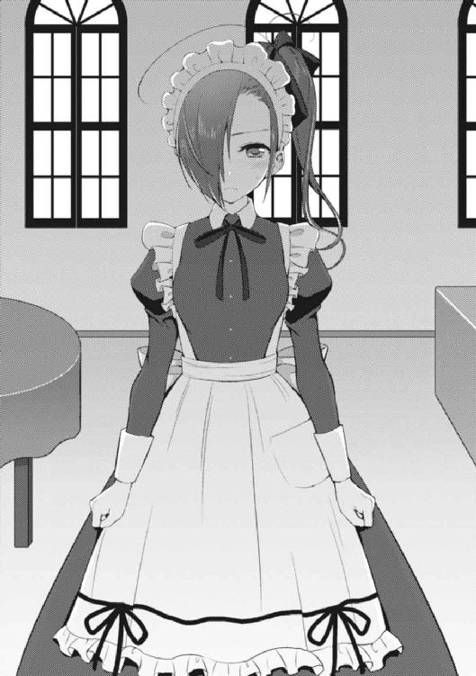
オメガが超嬉しそうに自分と同じ格好をしている友人にしな垂れ掛かる。
一方、ベタベタされる側である華凪の表情は硬い。
既に兄の俺の身長をブチ抜いてしまった長身（しかも今日は編み上げブーツで加算されているので、傍目には「大台」を超えてしまっている感がある）はいつも通りだが、前髪で隠れていない左眼は普段のぼんやりとした雰囲気とは異なって、明らかに何かしらの決意を秘めた輝きを放っていた。
「あの......、」
華凪がキュッと掌を握り締め、話を切り出した。
「......今日、兄さんをここに呼び出したのには、理由があります」
一気に本題だ。
やはり普段の華凪とは少し違う──そんなことを俺は思った。
華凪は泣き虫で甘えん坊な妹なので、色々なことを俺に褒めて貰うのが凄く好きだ。だからいつもなら、今自分が袖を通しているメイド服を見た感想を俺に求めるはず。
けれど、華凪は服装の話題を一切口にしようとしなかった。
だから俺は、胸のうちに抱いた率直な台詞に蓋をすることにした。スゲェ可愛いと思うぜ──少なくとも、今の華凪は、俺にその言葉を望んではいないと思ったから。
「ボクと、勝負をして貰いたいのです」
「............勝負？」
「はい」
こくりと華凪が頷いた。
勝負って。逆に俺は予想外の提案に面食らってしまった。思わず、パチパチとまばたきをして、視線の先で唇を嚙む妹の顔を見つめ直した。
もちろん、そこには変わらず華凪の姿がある。
「......チョコの試食とかじゃないのか？」
「違います」
「よく考えて下さい先輩！ そういう話なら神市にやらせた方がいいじゃないですか。だって、カナギにとって先輩にチョコを作ることこそがメインディッシュなわけですし。なのに、わざわざ先輩に試食させるのはおかしいですよ」
オメガが諭すように言った。俺もその正論に深く頷きながら、
「た、確かに......」
「......お嬢も葉介君もおれが犠牲になるのを前提に話すのはやめてくれないかなぁ」
神市さんがぼやいた。
俺は正直、神市さんに申し訳なく思いつつも、華凪の提案について更に深いところへと突っ込む決意を固めた。勝負。少なくともハッキリとした目的がなければ、まず出て来ようのない単語なのだ、ソレは。
華凪が続けた。
「......勝負方法は『ロシアンチョコレート』を提案します」
「ロシアンチョコレートォ......？」
極めて斬新な単語を耳にして、自然と声の調子が上がってしまう。
なんやねんソレ。
ロシアンルーレットのパチモノかね？
......ちょっと考えてみるか。
ロシアンルーレットといえば回転式拳銃の中に一発だけ弾丸を込めて、それを自分の頭に向けて交互に撃ち合うデンジャラスな賭け事である。
重要なポイントは、あくまでトリガーを引くのは自分自身であるということ。要は一種のチキンゲームであって、他人が引き金を引くのでは意味がないわけだ。臆した者が負ける──ロシアンルーレットとは、命を賭けた度胸試しなのだから。
で、どうしてそこにチョコレートが絡んで来るんですかね......。
「えーと、アタシが説明代わりますね。このアタシの持っているお盆の上に、我々が製作した『ちょっと特殊なチョコレート』がいっぱい載ってます。で、交互に先輩とカナギが一個ずつチョコを食べて行って、一つだけある『当たり』を食べてしまった方が負けになるわけです。この『当たり』というのは、先輩にとってもカナギにとっても食べたら強烈なダメージを与えること間違いなしの一品です。もちろん、もう食べられない──となって、ギブアップしても負けですね。シンプルでしょう？」
持っていた銀盆をテーブルの上に置き、オメガがすらすらと言う。
俺は思わず顔を引きつらせながら、
「二人とも、なんつーこと考えるんだよ......鬼か悪魔なの......？」
「あはは。照れますね」
「照れますねじゃねーよ!? お前らが協力して作ったってことは、どうせ中に入ってんのは薬チョコと虫チョコだけなんだろ!?」
華凪とオメガが顔を見合わせ、同時に頷いた。
「はい......」
「理解が早くて助かります」
──こんな時に限って全く予想を裏切らない二人だった。
俺は絶叫する。
「マジでかよ!? どっち食べるのも俺はイヤだっつーの！ 死ぬわボケ！ つーか、何の目的でそんな恐ろしい闇のゲームに俺を参戦させようとしてんだよ!?」
そう。目的だ。
結局のところ、そこが一番の焦点になるはずだ。単なるレクリエーションやエンターテインメントで、華凪と俺が勝負だなんて──
華凪が言った。
「兄さん......バレンタインの日、紅緒ちゃんに告白するって本当ですか......？」
ああ、と俺は思う。
──あの根も葉もない噂は、華凪にまで届いていたのか、と。
俺は嚙み締めるように答える。
「............華凪。それは花菱が流したデマだよ。俺も今日、初めて聞いたんだ」
「兄さん、噓をついても無駄です......」
「は......いやいや！ 何言ってんだよ！ 噓じゃねーって！」
「だから、そういう意味ではないのです......」
華凪がスッと俺を見据え、言い放った。「──ボクが言いたいのは『噓から出た真』ということなのですから......」
「なっ──」
愛内葉介という自身の兄を──知り尽くした妹の言葉として。
「......ボクがこの噂を耳にしたのは新学期が始まってすぐでした。というか、カロンちゃんとリリィちゃんからボクはソレを聞いたんです......。リリィちゃんは、もうあと二ヶ月も経たずにイギリスに帰ってしまいます......。でも、その前に、何としてでも兄さんと紅緒ちゃんをくっつけたいと考えていて、そのために外堀を埋めてしまおう、と......。放っておくと、二人はずっと曖昧なまま、ふらふらしているに違いないから、と......。
それを初めて聞いた時、ボクは絶望しました......なんという策士なのでしょう......噂をばら撒いたのはカロンちゃんでも、作戦を考えたのは絶対にリリィちゃんです......この作戦は兄さんのことを知り尽くした人間にしか考え付けないのです......。
だって兄さんがその話を小耳に挟んでしまったら、絶対に──何だかんだ言いながら、それを実行に移してしまいますから......そうなると後の展開は見え見えです......愛が芽生えてしまいます......愛が......愛が......」
「............俺が、あえて噂通りの行動を取るって言いたいわけか」
「はい」
華凪が確信めいた表情で言った。
一切、声を震えさせることもなく。完全に断定するような口調で。
「──兄さんは絶対に、告白します。ボクには分かります。だって、兄さんはそういう人ですから。兄さんは、絶対に紅緒ちゃんを傷つけません。兄さんが一番頑張るのは、紅緒ちゃんのために何かをする時なのです。兄さんはきっと『もし自分だけでなく紅緒ちゃんも、この噂を耳にしていたら......』と考えます。なのに兄さんが何もしなかったら紅緒ちゃんはきっと複雑な気持ちになるでしょう。実際に紅緒ちゃんが知っているかどうかは関係ないんです。兄さんが、知っていることが重要なのです。そしてソレは、」
華凪が真っ直ぐ、俺の方を見つめた。
甘いカカオの香りに、華凪の透き通ったハイレゾの声が強く響き渡る。
「──兄さんにとって、絶対に許せないことなのです」
そう言ってから、華凪は前髪を搔き上げて、右、左と順に自身の瞼を指先で拭った。
涙。
少しだけ、華凪の目尻に透明な液体が滲んでいた。華凪自身、こうして喋りながら強く感じるモノがあるようだった。
「......ボクは、その事実に気付いてしまいました。兄さんの考えていることを想像すればするほど、それ以外の可能性は消えてなくなりました。でも、気付いてしまったということは......認めてしまったということです......。どれだけボクが否定しても、イヤがっても、兄さんの隣にいる相手は紅緒ちゃんだと、紅緒ちゃん以外は有り得ないと、心の奥底でボク自身が認めてしまっていたんです......ソレはボクにとって、あまりにも惨めなことなのに......」
だから、と小さく華凪が言葉を切った。
「......兄さんに、ボクのこの執念を壊して貰いたいんです。ボクに紅緒ちゃんのことを認めさせて欲しいんです。ボクは兄さんのことが好きです。大好きです。兄さんの一番になることは出来なくても、この気持ちだけは一番でいたいんです。だから......兄さんが幸せを摑んだ時に、誰より心の底から祝福してあげるのは、絶対にボクでなければなりません......そうありたいと......強く、思うんです」
「華凪......」
胸が熱くなる。
思い出すのは半年前、華凪と数年ぶりに再会した長野での出来事だ。
あの時、華凪は駄々っ子のように泣きじゃくり、声を震わせながら長年抱え込んで来た紅緒への劣等感をぶちまけた。滝のような涙が流れた。
けれど、今はどうだ？
今の華凪は──
「本当は、方法なんて何でもいいんだと思います。ボクが、納得さえ出来れば。でも少なくともソレは、全力でなければなりません。心の底から納得しなくては......だから、あえてロシアンチョコレートなんてモノを考えました。コレはボクの集大成......覚悟の全てを込めました。兄さん、ボクと戦ってください。そしてボクを負かして欲しいんです──お願いします」
たとえ瞳が涙で濡れようとも、その視線は全くぶれることはない。目を見開き、自分自身と戦って、考えて──一直線に俺へとぶつかって来たのだ。
本当に華凪は成長したのだ。
身体だけが大きくて、子供のように泣いていた頃とは全く違う。その立派な体格に見合った立派な心が華凪の中には築かれつつあった。
............クソッ。
じゃあ、俺はどうなんだ？
お前はこんなスゲェ妹に胸を張れるような兄貴なのか？
正直、ちょっと自信ねぇよな。
でもさ、だったら──応えなくちゃいけねぇだろ。出来る限りのことをやるんだよ。出来る限りの方法で、向かい合うんだよ。
それしか、ねぇだろ。
「......分かった。そりゃあさ、俺はそんな大した兄じゃねぇし、お前のスゲェ思いに十分に応えられる自信はねぇけど、全力でお前の気持ちに付き合ってやりたいと思う。やろうぜ、華凪。ロシアンチョコレートって奴をさ」
「に、兄さん......！」
「おい、オメガ！ ええと、なんだ。お前が仕切ってくれるんだろ？ さっさと始めて貰っていいぜ。虫でも薬でも何でも持って来いっつー話だよ！」
「へ......あ、は、はい！ 分かりました！」
ぼうっとした様子で俺達を見つめていたオメガに声を掛ける。最初は呆けたままだったオメガだが、すぐに肩を震わせて大きく何度も首を縦に振った。
俺と華凪は同じテーブルに向かい合って着席する。
オメガがその中央に銀盆を置き、俺達の顔を交互に確認しながら、
「じゃあ、始めますね。ただ──葉介先輩、覚悟して下さいね。このチョコレートはアタシの素晴らしい親友が魂を込めて作ったんです。マジでとんでもないですよ。古今東西のチョコを食べて来たアタシですが、こんなチョコレートは今日初めて見ましたから」
「随分と脅かすんだな......。でも、心配ねーよ。俺がお前らの作るワケ分からん料理をどれだけ食って来たと思ってんのさ」
「......分かりました。では、始めましょうか」
小さく頷く。
オメガはスゥッと目を細め、銀盆に被せてあった蓋を取り払う。そして、ついに──俺の視界に華凪とオメガが合作した驚異のチョコレートが出現した。
しゅつげ............。
「....................................」
............はい？
え。
ん？
おう？
「ちょ............」
愕然と、する。
これが華凪の全力......なのか......マジかよ......なんて、ことだ、なんてことだ......。
だ、だって、コレ──
「ぎゃああああああああああああああ！」
悲鳴が響き渡る。
俺ではなく神市さんの、だが。
「こら神市！ なんで逃げようとしてんのよアンタ!? 主人の親友の一世一代の勝負を見届けなさい！」
「......いやいやいやいやもうマジ勘弁してくださいって。いくら何でもこれはやり過ぎですよ......モザイクがあっても直視したくないですし......リアル過ぎますって......」
「仕方ないでしょ！ カナギがマジで全力出しちゃったんだから！」
ぶるぶると震えながら、言い合いをする主従。
そんな光景を横目に見ながら、俺は今にも神市さんのように逃走したくなる衝動を抑えるのに必死になっていた。もし先程の華凪との魂の籠もったやり取りがなければ、俺は倫敦紅茶館から百パーセント逃亡していたに違いない。
──ちなみに今更強調する必要もない基本情報だが、俺は虫が超苦手である。
苦手な虫は多々あるが、やはり一番アレなのはアレだろう。
どれくらい苦手かというと、そのアレが我が家に出現した場合、後で本気で冷ややかな目をした幼馴染みにため息をつかれるのも覚悟の上で『潰してくださいお願いします』と土下座してしまうくらいには苦手である。
もっぱらその虫の名は──目にするのさえ憚られるカタカナ四文字で記される。
「......ゴキ......ブリ......」
銀盆の上に置かれた皿、そこには無数のアレが蠢いていた。
いや、違う──蠢いてはいない。
生モノでは、ない。
フェイク。
あまりに精巧過ぎて、目を凝らさなければ絶対に本物だと思ってしまうだろうが......この黒光りするボディはブラックチョコレートで出来ているようだった。
造り物、である。
それは、人間よりも長い歴史を持つ最強の昆虫の一角にして、日本の家庭に日夜恐怖を運ぶ絶対敵存在、それをチョコレート細工を用い、完全に表現した一品。
──ゴキブリ型チョコレート。
「............始めましょう、兄さん」
華凪がぽつりと呟いた。
「見ての通り、あくまで大半はフェイクです......形だけゴキブリを模しているに過ぎません。ですが、この中に一匹だけ──本物が入っているものがあります。もちろん全力で作り過ぎて、ボクにもソレがどれだか分かりません......」
戦いの幕が切って落とされた。
「本物を、食べた方が負けです」
──それは、死闘以外の何物でもなかった。
「はぁっ、はぁっ、はぁっ......」
「............っ、くっ......ぅ......」
以前、龍子姉さんと繰り広げた大食いバトルが意外と優しいモノだったのではないかと錯覚してしまいそうになるほど壮絶なまでの泥仕合だ。
「マ、マズっ......し、舌が......」
「み、味覚がなくなって......きました......」
華凪の執念が生み出してしまった「ゴキブリ型チョコレート」はまさに怪物という言葉が相応しい昆虫料理界の最終兵器だった。
ただ、重要なのはこの対人用チョコレート型殺戮兵器は華凪一人が作り上げたモノではないということだ。薬草メイド──斎藤オメガがこの製作に関与している事実が、より一層このチョコレートの破壊力を押し上げていた。
無数のゴキブリ──ちなみにモチーフにしたゴキブリの種類は多種多様で、華凪が言うにはチャバネゴキブリ、クロゴキブリ、ヤマトゴキブリ、オオゴキブリなど基本的には日本の在来種を選択している。
それらのバラエティ豊富なゴキブリ型チョコレートの中に一匹だけ、本物のゴキブリが混じったモノがある──もちろん、ソレは外見や感触からは作った本人ですら実際に食べてみるまでは判断することが出来ない。
しかしこのロシアンチョコレートというデスゲームの凶悪な点は「外れ」のチョコレートを引いた場合でも、ロシアンルーレットで言うところの「空砲」のような安息は訪れないということだ。
なんと「外れ」には漏れなくオメガの調合した──死ぬほどマッッッッッッッズい薬液がウイスキーボンボンの洋酒の要領で混入されているのである！
もちろん、その味は『料理においしさとかどうでもよくないですか（ヘラヘラ）』をモットーとするオメガが栄養と健康だけを重視し、結果として破滅的な味覚クラッシュを引き起こしてしまうようなサイケでハードでメディカルな代物だ。
甘かったり。
辛かったり。
苦かったり。
酸っぱかったり。
むしろ、味を悪くすることを考えて薬の調合をしているんじゃないか、と文句を付けたくなるような味わいであり、しかもご丁寧なことに一つ一つ異なった薬液を注入しているらしく、それらのマズさに慣れることが全く出来ないのである！
食べる度に、毎回違うマズさが襲い掛かって来て、為す術なく、そのマズさに翻弄されるしかない──いくら華凪が自分を極限まで追い込むべく考案させた料理とはいえ、あまりにも残酷な料理だった。そこには一ミリの慈悲もなかった。
「うーん。なんか、カナギがこんなにはぁはぁ喘いでるのを聞いてると、ちょっと興奮して来ますねー」
「「............」」
「あはは、冗談ですよ。ほら、二人とも続けてください！」
加えて、レフェリー的ポジションであるオメガの言葉が俺達を全方位で煽りまくるから困ったものだ。
もちろん、「当たり」を引いた場合のことは............考えたくない。
ちなみに決してその辺で捕まえて来た野生のゴキブリを使っているわけではなく、今回は無菌で養殖された「食用ゴキブリ」をオメガに頼んで入手して貰い使用しているらしい。衛生上の問題はないわけだ。
うん、まぁ。
全く気休めにもならねぇけどな！
「はぁっ、はぁっ......つ、次......兄さんの......番です......」
「くっ..................！」
マラソン大会で走り終わった後でさえ、こんな激しい動悸と目眩に襲われることはないだろう──俺は強く思う。
このロシアンチョコレートは華凪とオメガのタッグによって見た目のヤバさと味のヤバさを両立させている。本来、華凪の作る昆虫料理は味だけは絶品なのがお決まりであることを考えると、その破壊力は過去に食べさせられたどの昆虫料理よりも図抜けていた。
だってお前......ゴキブリだぜ!?
ゴキブリ、なんだぜ!?
いかに形だけしかゴキブリを真似てはいないとしても、恐ろしいほどリアルに作られたゴキブリ型チョコレートは、その全身に魔王の如き絶望色を纏っていると言っても過言ではなかった。
茶色かったり黒かったりする上に脂ぎっていて、艶テカしているところまで見事に再現しているボディとか、ぴょーんと突き出たちょっと細めな触角とか、わさわさした体毛の生えた六本の脚とか、裏返した時のグロテスクな腹部とか、もう何もかもが俺の心を搔き乱すのだ。
しかも、そんなものを口に運び入れなければならないという精神的ダメージの大きさと来たら！ 手は震えるし、心臓はバクバク鳴って、汗はダラダラと流れ落ちる。
というのも、今まで華凪が作った昆虫料理はほぼ全て俺の恐怖心を刺激する存在ではあったのだが、その時に俺が怯えていたのは純粋な『虫に対する恐れ』のためだった。
しかし、ゴキブリとなると話は変わって来る。
性質の異なった底冷えするような恐怖がそこには封じ込まれていて、自分が自分でなくなってしまうような感覚に襲われそうになるのである。
そう──今、この瞬間も、まさに。
「う、うわああああああ............！」
恐怖そのものが具現化したような名状しがたき物体を、俺は自身の悲鳴と共に口に放り込んだ。そして、全てを忘却しようとするかのような勢いで奥歯を嚙み締める。
ジュッ。
──液体、だった。
嚙み応えはほぼなく、それはつまり「外れ」であるということの証左。ほのかな安心感が湧き上がるものの、すぐさま第二波──破滅的な薬味が強烈な衝撃を与える。
だが、まだだ。
まだ勝負は終わらない......。
「次！ 華凪だ......！」
「っ......！」
そしてこのゲームは華凪にとっても、捨て身極まりない戦いだった。
確かに、華凪といえば筋金入りの昆虫好きだ。
そんな華凪にとってみれば、ゴキブリは特に恐怖の対象にはならないとは思うのだ。ただし──華凪はそれとは違った「恐怖」を胸に抱いて、この戦いに挑んでいた。
正直言って、数ある昆虫食の中でも「ゴキブリ食」は超えてはいけないラインを余裕で突破している、ということだ。
禁忌。
おそらく最も適切な言葉はそれだろう。
ゴキブリというのは実は味に関して言えば、それほど悪いわけではないらしい。
だが例えばハチやセミと比べてゴキブリの味が素晴らしかったとしても、どちらかを食べろと言われれば、俺は絶対にゴキブリを選ぶことはないと思う。
味では、ないのだ。
重要なのはあくまでイメージ。
だから、華凪にとって肝心な部分は『華凪がゴキブリ食をどう思うか』ではなく『こんなにもゴキブリに恐怖心と絶望を抱いている兄の前で、ゴキブリを食べてしまったらどう思われるだろう』という点にある。
それは俺とは異なる意味合いではあるものの、華凪にとっても紛れもない恐怖に違いないのである。
──そして、デスゲームは最終盤へと至る。
運命の女神が限界ギリギリまで俺達のことを弄んでいるかのように、俺も華凪も中々「当たり」を引くことはなかった。そのため、それなりの数が用意されていたゴキブリ型チョコレートも、一つ減り、二つ減り、三つ減り──
気が付くと、黒光りするチョコレートは残り二つになっていた。
「これで最後か......」
「そう、ですね......」
順番は俺が選択するターンだった。つまり、ここで残った二つのチョコのうち、どちらかに「当たり」が含まれていることになる。
となれば、今回に限れば別に片方ずつ交互に食べる意味はない。一つずつを選び、同時に口に運ぶのが一番正しい終わり方であるように思えた。
「......」
「......」
もはや言葉は必要なかった。
──思えば、こんな風に華凪と俺がお互いの心を剝き出しにして向かい合ったのは初めてのことではないだろうか？
確かに長野での料理対決でも、極めて似たような領域まで到達したとは思う。
しかし、あの時、俺は今のように死に物狂い──という感じではなかった。
俺の中には今にも壊れてしまいそうな華凪をどうにかして受け止めようという気持ちが非常に強くあったわけで、その意味で俺達兄妹の心がどちらも同じような境地にあったかと言われれば少し違っていたと思う。
だから、今回はどんな結果に終わったとしても、俺と華凪にとって記念すべき日になると思う。俺も、華凪も、本当に真っ正面から全力なのだ。
もう一分の余裕もないほどに。
今にも心臓が張り裂けそうなほど鼓動を打ち鳴らしているのに。オメガのマズ過ぎるチョコを食べ過ぎて、口の中がとんでもないことになっているのに。
それなのに──何故か、不思議な昂揚感のようなモノが俺の身体を包んでいた。心地よくすら感じるのだ。
そして、それはきっと華凪も同じ気持ちのはずで。
「「............」」
僅かな逡巡の後、俺が自分に近い方のチョコレートを指差すと、華凪はゆっくりと首を縦に振って、応じるように華凪の方に近いチョコレートを指し示した。
合意する。頷き合う。
──運命の時が、訪れる。
「行くぞ」
「はい......！」
俺と華凪は同じタイミングでゴキブリ型チョコレートに手を伸ばし、そして。
同じタイミングで、それを口へと放り込んだ。
結果は、
「............」「............」
────結果、は？
「あ、あれ......」
「えっ......」
俺達は顔を見合わせた。
必ず起こり得るであろう反応が、どちらにも見られなかったからだ。
「華凪、お前の食べたチョコって......マズい......？」
訊いてみる。
完全に挙動不審になりながら、華凪が答えた。
「は、はい......メチャクチャ、マズいです......オメガとの友人関係を考え直したくなるくらいに酷い味です......」
「奇遇だな......俺の方のチョコもオメガにやり場のない怒りを感じる味をしてるぜ......」
どういうことなのだ。
だって、間違いなく華凪は「当たり」の入ったチョコを用意したはずで......。
──次の瞬間だった。
「はーい、完食ありがとうございまーーーーす！ わーぱちぱちぱちぱち！」
オメガがニヤニヤ笑いながら、盛大な拍手を始めたのは。
「え......」
「ちょ、オ、オメガ......!?」
「いやー、この兄妹は何をやっているんですかねぇ。一体全体、どうしてこんなワケの分からない死闘を繰り広げているのでしょうか。どう思います、神市？」
啞然とする俺達兄妹を尻目に、オメガのテンションは爆上げだった。
言うなれば、この最後の瞬間が訪れるのを今か今かと待ち受けていたかのような──徹底的に練り上げた反応だ。
「あのお嬢......おれとしてはこの後のお二人との関係を考えて、ここはノーコメントを貫きたいんですけど......」
「まっ！ さすが神市、なんという事なかれ主義！ まぁ、いいでしょう。ここは代わりに主人であるアタシが締め括りましょうか......」
オメガが満面の笑みと共に、俺達に向けて言い放ったのだ。
「──この大バカ兄妹！ でもそういう二人がアタシは大好きです！」
そして。
「本物はこのオメガちゃんがとっくにすり替えておいたのさー！ はっはっはー！」
要するに──彼女が黒幕というわけで。
「どうです？ 楽しいゲームだったでしょう？ 色々と......吹っ切れたんじゃないですか？ これでカナギも葉介先輩とかがみん先輩のことを心の底から祝福出来るようになったんじゃないかと思います。どうですかね？」
「最初にカナギからこの計画を聞かされた時、この子はあんなに頭が良いのに、なんでこんなにアホなのだろうと思いました」
全てが終わった後、オメガが俺だけを店に残して、最初に出た言葉がコレだった。
アホ。
......まぁ、間違っていないとは思う。
「カナギが何よりも葉介先輩の幸せを望むように、アタシのスタンスは徹底してカナギの幸せです。先輩もカナギの話を聞いて感動したと思うんですけど、アタシも同じくらい感動したんです。その方法のあまりの不器用さに呆れもしたんですけど。っていうか、ゴキブリの形をしたチョコを食べるぐらいなら別にいいですけど、さすがにアタシの可愛いカナギに生ゴキブリは食べて貰いたくなかった、という理由も大きいです」
「じゃあ、俺が食べるのはどうなんだ？」
「先輩がですか？ んー、別に先輩がゴキだのハエだのゾウリムシだの食べてもアタシは全然どうでもいいですけど、カナギが悲しみそうなので、やっぱり嫌ですね」
「ハエは虫だろうけど、さすがに微生物は食いたくても食えねーよ」
「ははっ、そうかもしれませんねー」
華凪は神市さんが付き添いになって、先に帰宅した。オメガは店の片付けと明日の仕込みがあるらしく、何故かそこに俺が残されたわけだ。
蛇口から水の流れる音が木霊する。
つい先程まで店中に充満していたカカオの濃厚な香りはすっかり消え失せていて、いつもの倫敦紅茶館の薬っぽい匂いが戻って来ていた。
洗い物をしながらオメガは後方で壁に寄り掛かっていた俺に向けて背中で言った。
「要するに、あの子は先輩がいなくなるのが寂しいんです。前も『ずっと紅緒ちゃんが兄さんの側にいたら、ボクなんて見向きもされない』って言ってましたし。そんなわけないって先輩が否定しても、やっぱり不安なんですよ。自分に自信がないから」
オメガが、小さくため息をついた。
そして誰とも無しに「誰よりもちゃんとアタシのことは見てくれるのに、肝心な自分のことは全然なんだから変わってますよねぇ......」と呻くように言った。
が、すぐさま不敵な笑みを口元に浮かべ、顔を上げると、
「だから、ちょちょいと計画に手を加えさせて貰いました──一番、カナギが葉介先輩に甘えられる展開になるように、ですね」
「そうか。でも、華凪のことだけじゃなくて、俺も結構ありがたかったけどな」
「お。何か収穫はありましたか？」
「まーな」
噓ではない。
俺はここしばらくの間、香神家にお呼ばれされたことについて延々と苦悩していた。
いや......もう一歩、具体的な表現にしよう。
──俺は、逃げていたのだ。
例えば一枚のカードがあったとしよう。それをゲームで場に出す時は、表か裏、どちらかの形で置くしかない。それ以外の選択肢は普通は存在しないのだ。
ただし、一つだけ例外がある──もしもカードを手に持ったまま、いつまでもソレを場に出さなかったとしたらどうなるだろう？
カードの表も裏も、場には出ていないことになるはずだ。
俺は逃げていた。
何からだ？ 更に具体的な言葉を提示しよう。
──カードをどちらかの面で、固定して場に出すことから、だ。
今日、この瞬間、華凪とのやり取りを経て......俺のカードはついに固定されたのである。
「............ん？ これは......」
「おや、どうかしましたか」
「紅緒からメールが──ああ、マジかよ。ついにか」
と、そこで携帯に紅緒からメッセージが届いたのだ。俺は文面を読み上げ、思わず天を仰いでいた。その内容とは──
「向こうの親父さんの予定が空いたって。二月十三日の日曜はどうか、ってさ」
「おおー。ようやく出陣ですねー」
「そうなるな」
向こうの予定を報せるメールだった。
俺はすぐさま返事をした。その日は大丈夫。問題はない、と。
「ふむふむ............じゃあ、この質問しちゃいましょうか。実はアタシ、前から気になってたことがあるんですよねー」
「なんだよ、思わせぶりに」
キュッ、という蛇口の締まる音。こちらを振り向きながら、オメガが訊いた。
「葉介先輩って、かがみん先輩のこと好きなんですか？」
俺は答えた。
「好きだよ。当たり前じゃねーか」
──本当にシンプルな想いと共に。
そして運命の日、二月十三日が訪れた。
俺が招待されたのはあくまで夕食であり、辺りが暗くなり始めるまでは他のことをやっていてもいいはずだった。
が、そんなに上手く心の切り替えが出来れば苦労はしない。
普段ならば休日の二度寝と午後起床は欠かさない俺が誰に起こされることもなく、午前の大分早い時間には目を醒まし、まるで興味をそそられない政治系ニュース番組やら情報番組やらをぼんやり眺めることしか出来なかった。
要するに、何も手に付かなかったのである。
部屋には読みかけの漫画やプレイ中のゲームが随分と残っている。
ただ、今日に限っては、その手の「能動的に何かを行う」系の娯楽に興じる気に全くなれなかったわけだ。
まだ数時間は余裕があるのに、まるで人前でスピーチをしなければならなくなった時のように口の中はすぐカラカラになってしまうし、膝の上で握り締めた拳は自然と震え始める。お前はアル中患者か、緊張し過ぎだろう常識的に考えて──などと、頭の中で自分自身を茶化してみるも、まるで効果はない。
──ついに、今日だ。
華凪との倫敦紅茶館でのやり取りから約二週間が経過し、俺の中でも色々と考えが纏まって来たような気がしていた。何度となく自分の心と向かい合い、何度となく自分の想いを確かめた。
香神家に行って、実際に話の流れがどうなるのか......それは正直、不明だ。
耀子さんが俺達のことをどう考えているのかは未だによく分からないし、そもそも香神氏がわざわざ日程を調整してまで参戦してきたということは、今回の夕食の場が荒れに荒れることは想像に難くなかった。
だけど、俺は俺のすべきことをする──それだけは決めていた。
伝えるべきことはハッキリと伝えて、応えるべき感情にはハッキリと応えよう。
それだけは間違いではないと確信していた。
が、しかし。
この堅い意志を維持するにあたって、大きな障害が存在した。
皮肉なことに今日は二月十三日であり、つまりソレはバレンタインの一日前ということを意味する。しかも曜日は日曜、おまけに愛内家は母が料理研究家である関係上、普通の家庭よりも数段、機能性の高いキッチンが備わっていた。
だから、明日に備えてチョコを作るとしたら──彼女たちは我が家を使うのが当たり前のことだったわけで。
『ワゥッ!? カロン、お鍋がこげてしまいます！』
『え、あ......ごめん。うっかりして──べ、紅緒......なにそれ......チョコにそんなもの入れるつもりなの......!?』
『ん。そうだよ。とっても、おいしそうでしょ？』
『全然、まったく。もしも、そんなチョコをお兄ちゃんに渡したら、あたしは絶縁されるのを覚悟してもいい』
『えええ......そんな覚悟いらないんだけど......』
『でも、カロンのとても赤いチョコをわたしても絶縁されそうですネ』
『大丈夫。お兄ちゃんは甘いのだけじゃなくて辛いのも案外イケるタイプだから』
『そんな話初めて聞いた気がするんだけどなぁ......』
きゃいきゃい。
わきゃわきゃ。
「............恐ろしい奴らだよ、全く」
必死に時間を潰すべくリビングでテレビを見ている俺とは対照的に、台所では小一時間ほど前からこんなやり取りがずっと繰り返されていた。
紅緒。リリィ。花菱。
この三人がチョコ的な物を作るとしたら、そりゃあうちに集まるに決まっていた（ちなみに華凪は今日も倫敦紅茶館でオメガと一緒に本番のチョコを製作中だ。さすがにゴキブリ型だけは勘弁してくれるよう懇願したが、どんなモノが出来上がるやら）。
これまでも何度か見かけた光景だが、今回はバレンタインという話を抜きにしても非常に大切な瞬間だったから。
──リリィがイギリスに一時帰国するのは、明日の昼前の便ということになった。
それはあくまで向こうの学校の関係で帰るだけだ。
明日で、リリィとお別れしなければならないわけではない。
けれど、否応なく彼女が俺達の前からいなくなるまでのカウントダウンが始まっていることだけはハッキリと理解しなければならなかった。だからあの三人が揃って何か料理を作る時間は、これが最後かもしれないのだ。
変化の息吹きは、もうすぐそこまで迫って来ている。
「......」
チラリと横目で台所の方に視線を寄せる。
お目当ては彼女たちが独自の味覚と価値観の赴くまま作成しているチョコレート──ではなくて、紅緒ただ一人だった。
──紅緒は今日という日を、どういう心境で迎えたのか？
非常に女々しい感覚だとは思うが、やはり気にせずにはいられなかった。
しかし、今日はまだ紅緒と大した接触はナシ。
紅緒は三人でチョコの材料を買い込んで来てすぐ台所に直行してしまったので、今日はまだ軽く挨拶をする程度の会話しか出来ていない。
が、こういう日に限ってリビングと台所の境目に設置されているブラインドカーテンが下ろされてしまっていて、中の様子は完全にシャットアウトされてしまっていた。普段は台所の様子なぞ隠す気ゼロで、むしろ見物して貰っても構わないぐらいには思っていそうな彼女らなのだが、どうもチョコレート作りとなると話は別らしい。
重そうなスーパー袋を両手に抱え、ペンギンを彷彿とさせるトテトテ歩きで台所へと最後に入ってきたリリィが、おもむろに『ここから先は乙女の企業秘密です！』などと言ってカーテンを下ろしてしまったわけだ。
結局、俺が女性陣のチョコ作りについて窺い知ることが出来るのは姦しい話し声と、カーテンの隙間から漏れるチョコの匂い（以外の奇妙過ぎる匂いも色々流れ出して来るけど）程度だった。
女姉妹が二人もいる家庭に育った身ではあるが、姉さんも華凪も手作りチョコと無縁なタイプだったので（学生時代の姉さんはむしろ貰う側だったし、華凪はうちにいた頃は買ったモノをくれるだけだった）、こういう光景は非常に新鮮に感じられた。
──三人は、誰にチョコを渡すのだろうか？
とりあえず、リリィは俺にもくれる──というか、日本でお世話になった人全員に渡したいと言っていた。少なくともうちのクラスの人間には全員渡すとか何とか。
複数の相手にチョコを渡す場合、それは自ずと「義理チョコ」に分類される風潮があるが、今回のリリィに関しては全てが「本命チョコ」と言ってもいいと思うのだ。
リリィは、大好きな友達のために本気でチョコを作って渡すつもりだ。
それを本命チョコと言わずして、何と言うだろうか？
............多分、リリィの作るチョコだから、アホみたいに甘くて食べた人間が悶絶するのは目に見えているだろうけれど。でも、そんな出来事も、素敵な思い出の一つになると思うのだ。うむ。
次に花菱だが......まぁ、これは考えるまでもないだろう。冥に渡すに決まっている。後は、親父さんとかにも渡すはずだ。花菱はブラコンでファザコンだからな。
花菱が俺にチョコをくれるかは正直、不明だが、少なくともこちらには余裕で受け取り拒否をする準備が出来ている。
絶対に食わん！ というか、やだ！ 食いたくない！
どうせアフターデスソースやらハバネロやらタバスコやらマスタードやら、辛味系調味料を満載した激辛甘チョコを繰り出して来るに決まっているのだから。
そして最後に紅緒だが......。
うーん。
多分、紅緒は今年もくれるんじゃないか？
だって今までも何だかんだで毎年チョコを恵んでくれていたわけだし、となれば関係が一気に深まって接する機会もこれまでの何倍にも増えた今年だけ、急にくれなくなるとか考え難いじゃんか。うん。
というか────考えたくないだけ、なんだけどさ。
「......紅緒のことなぁ」
紅緒が、どんな気持ちで今を過ごしているのか。
いざ考えてみると、俺はあまり紅緒の心境というモノを考えた──この場合は「推理する」とでも言った方が適切だろうか──経験がない。
紅緒はぶっちゃけ裏表がなくて考えていることが非常に顔に出やすいタイプだ。
言いたいことは大体ズバズバ言ってしまうし、わざわざ俺が推理するまでもなく、向こうが考えていることは分かってしまうので、改めてこうした機会にぶち当たるのはレアケースだった。
顔が見られない。けれど近くにはいて、声だけ聞いていると、普段と様子は変わらないように思える。
でも、いくら何でも心の中まで普段通り......とは考え難い。
俺がここまで非常に心細いというか、不安というか、差し迫った感覚に襲われているのだから、それなりに紅緒も頭を悩ませているとは思うのだが──
いや。
............実際、どうなんだ？
紅緒の気持ち。
俺は、俺の中ですら、ねじ曲がり、押し隠され、曖昧にされていた気持ちとようやく向かい合ったばかりだった。それで精一杯だった、とも言う。
では、逆に──幼馴染みの男を自分の家の夕食に招待する女の子は、いったいどういうことを考えているのだろう。
とりあえず、俺とは少し違った意味で悩んでいる、というよりは困っている部分が大いにあるのは間違いない。普段は柔和で笑顔を絶やさない紅緒だが、親の話題となると態度がガラリと変わって、ちょっとキツイ物言いをすることもしばしばあるのだ。
別に親子仲が悪いわけではないはず。
ただ、俺達の前で耀子さんと話している時などは、非常に頑固で厳格な自分の親に困り果てているような印象を覚えることが多い。それは昔から結構そうだったように思える。
......でも、ちょっと妙なんだよな。
以前の紅緒は何度か俺を自分ちの食事に招待しようとしたこともあったのだ。
思い出せるのは四月、お袋達が渡英して少し経った辺りの話だ。
その時、紅緒はあの手この手で俺を誘惑し、乱れた食生活を送っていた俺に出来るだけまともなモノを食べさせようとしたのである（これは結局『紅緒にとってまとも』という意味だったわけだが）。その際、何度も夕食にお呼ばれ自体はされたわけだ。
しかし、どうにも今回の一件に関しては、紅緒自身もあまり乗り気でないような印象を受ける。それはどうして──
と、そこまで考えたところで、リビングに龍子姉さんがやって来た。
「......ふぁあ......なんだ、随分と騒がしいな......誰か来ているのか？」
「ああ、紅緒と花菱がチョコ作りに来てるよ」
「そうか......ああ、バレンタインだったな。そういえば、明日は」
しかし、開口一番あくびをしている辺りでバレバレだが、完全な起き抜けである。もう随分と日も昇り、昼よりも夕方がそろそろ近付いて来た時間だというのに！
「昨日寝たの何時だよ、姉さん」
「寝た時間か？ ならそもそも昨日じゃないぞ、今日だ」
「おいおい......」
「確か、九時ぐらいだったかな......〆切りがあったのさ。今日の午前中が期限でな」
我が姉ながら、とんでもなくルーズな格好をしていた。上着は薄っぺらいキャミソールの上から羽織った分厚い半纏のみ、そして下はハーフパンツ一丁。
特に上半身はココア色に焼けた肌の部分と透き通るように白い地肌の部分がチラチラ目に入って来て、極めて自堕落なスタイルにも拘わらず、独特な色気を醸し出している。
ただ、醸し出すのはそんなモノよりもこの場合、女子力であるべきだ！
台所との境目にブラインドカーテンが下りていたことに俺はホッと胸を撫で下ろした。さすがにこんな姉さんを紅緒達にはあまり見せるべきではない。
「姉さんはバレンタインの準備はしねーのかよ」
「私か......？ ああ、そういえば......葉介、ちょっと待っていろ。すぐ戻る」
言い残して姉さんはヨロヨロの足取りでまたリビングから出て行ってしまう。
それから一分ほど経っただろうか。
姉さんが──とんでもない物体を脇に抱えて、再度リビングに戻って来た。そのフォルムを見た瞬間、俺はそれが何かを理解した。
チョコレートだ。
ただし、途轍もなく──デカい「ミルクチョコレート」だったわけだけれど。
「ほれ。オマエの分だ」
「へ......ちょ、お、重っ!? デカッ!?」
手渡されたチョコの異様な重量と大きさに、俺は思わず眼を見張った。
これが......チョコ......!?
いや、確かにチョコだが......しかし......。
座っていたから良かったものの、立っている時にこれを手渡されたら予想外過ぎる重量に不意を突かれて、そのまま取り落としていた危険性すらある。
ミルクチョコレート。
まさに日本におけるチョコレートの王であり、代表選手。
にも拘わらず、チョコの祭典とも言えるバレンタインになると逆に特別感が無さ過ぎるため、極めて影が薄くなってしまう不遇な存在である。
そのミルクチョコレートは、デザインに関しては完全に普段通りのものだった。ダークブラウンの背景、金文字で刻印された菓子名と企業ロゴ──ただし、その大きさは通常のモノの数倍、いや、数十倍はあるのではないだろうか？ 横の長さとか、五十センチくらいはある気がするんだが......。
「『今年の流行はデカチョコで決まり！』という雑誌の企画で作ったミルクチョコレート風の巨大板チョコだ。が、結局、試作までしたというのに企画が流れたせいで余ったチョコだけが私の手元に大量に残ってしまって困っていてな......」
「いや......そんなの姉さんが食えばいいじゃねーか！ 姉さんなら余裕だろ!?」
なんてこった！ 完全な余りモノの処分品を弟に渡すなんて！
義理チョコにしても、それはいくら何でも愛がなさ過ぎるってもんだろ！
これならチロルチョコを八千個ぐらい食べた方が味のバリエーションがあってまだマシってもんだよ！
「これ、普通のチョコの何倍あんのよ......」
「二十七倍だな。重さは千五百グラムぐらいだったはずだ。ちなみに賞味期限がそろそろ切れそうなので、二、三日中に食べるのをオススメする」
「もう板チョコ一年分とかそういうレベルじゃねぇか......まぁ、いいわ。貰っとくよ。サンキューな」
膝の上に載せた枕よりデカい板チョコを見下ろしながら俺は大きくため息をついた。
相変わらず、である。
いや、服装だけはいつもと違ってだらけきっているのだが。
一度部屋に戻ったのなら、その時に着替えてくれば良かったのに......。
「っていうか、姉さん。紅緒と花菱だけど、客がいるのにその格好はマズいって」
「む......」
「さすがに着替えて来た方がいいんじゃねーの」
俺に巨大チョコを渡し終えた後、そのままソファに腰を下ろし掛けた姉さんは目線を下げて、改めて自身のだらしなさ極まりない格好を見つめ直し、瞼を擦った。
余程、根を詰めて仕事をしていたということか。
いつもピシリとした格好をしている姉さんとはいえ、こんな日ぐらいはダラダラして欲しい──という気持ちもあるのだが、それでも、うん。
が、どうも姉さん自身も次第に自分の堕落っぷりをマズいと感じたようで、
「いや......もう一度、寝直すことにする。どうにも調子が上がらん」
「......あー、それもいいかもな」
堂々たる二度寝宣言である。
ただ、これはある意味でとても賢明な選択だ。今日は他に仕事の入っていない日のようなので、しっかりと身体を休めるのは理に適っている。
「香神と花菱に、よろしく伝えておいてくれ。明日は一日中、朝からいないので──それと......」
姉さんが何故だか真っ直ぐ、俺の方をじぃっと見つめた。
目と目が、合う。
眠たげな瞼の奥、それでも隠し切れない爛々とした黒い瞳。
小さい頃から俺をしばき倒し、見守って来た、姉としての眼差し──だが俺からすれば、何故このタイミングでそんな目で見られるのか、サッパリ意味が分からず。
「な、なんだよ」
「──今日、だろう？」
努めて緩慢な口調、アクセント。
その「今日」が何を指し示しているかは至って明白だった。
「......ああ」
「そうか」
とすん、と軽い音を立てて、姉さんの手が俺の胸に宛がわれる。
拳。
姉さんが囁くような声で言った。
「頑張って来い。オマエなら、きっと何とかなるさ」
「............おう」
「私は、オマエ達二人はとてもお似合いだと思うよ」
そして、微かな笑みを浮かべる。
俺はどういう顔をすればいいか分からなくて、何となく口元を歪めて苦笑することしか出来なかった。
「では、私は寝るよ。おやすみ、葉介」
「......おやすみ、龍子姉さん」
もう言葉はなかった。姉さんが俺に背中を向けたまま、ヒラヒラと掌を振ってリビングから出て行ってしまったからだ。
トントントン、という階段を昇る音が微かに響き、残るのはテレビのニュースキャスターの慇懃な喋り方と、キッチンから聞こえる紅緒達の姦しくもメシマズなガールズチョコレートトークのみ。
──もしかして、姉さんはこのために起きて来てくれたのではないだろうか。
俺を、激励するために。
勝負の場に送り出すために。
だとしたら、俺は姉さんの気持ちにも応えなければならない。俺がこうしていられるのは、沢山の人達に支えられているおかげということになるのだから。膝の上に置いた板チョコの規格外過ぎる重さが、まるで重みそのもののように感じられてならなかった。
香神家のチャイムを鳴らすと、扉を開けたのは紅緒本人だった。
「──いらっしゃい、葉介」
「おう」
「どうぞ」
早速紅緒のトレードマークである緋色のエプロンが目に入る。最近もほとんど欠かすことなく見ているはずなのに、こうして紅緒の家でそれを見ると、何だか非常に珍しいモノと遭遇したような気分になるから不思議だった。
紅緒が強張った表情で言った。
「今日はごめんね」
謝罪。
紅緒らしいといえばらしいが、やはりいきなり謝られるのは少し意外な展開だ。女子一同のチョコ作りが終わった後、少し時間が掛かり過ぎてしまって、紅緒はばたばたと帰宅した。とはいえ、その『ごめんね』には他にも色々な意味があろうことは明白だった。
「謝る必要ねぇよ。まるで悪いことみてぇじゃねぇか」
「いやぁ、さ。あはは......」
乾いた笑い。
大歓迎、心待ちにしていた──というようには、どう解釈しても見えなかった。かといって、メッチャ嫌そうでウンザリしている、という感じでもない。
何となく──さっきまでの俺と似ている気がする。
「お前、緊張してる？」
紅緒がハッとした様子で目を見開いた。
「......やっぱ分かる？」
「そりゃあ、俺もそうだもん」
「あ、葉介も......」
「今日の朝からずっとだよ。うちでお前がリリィ達とチョコ作ってる時も、気が気がじゃなかったし。お前の家に行くのも結構久しぶりだったしさ」
廊下を歩きながら、懐かしむように周囲へと視線を寄せる。
俺が紅緒の家に最後に来たのは、去年の五月である。姉さんと大食い対決をした際、舞台を変えて紅緒の料理を食べる──その目的で足を運んだのが、直近の記憶だろう。同時に何よりも思い出したくない記憶でもあるわけだが......。
「私は葉介の家に行きまくってるのに不思議だよね」
「まぁ、確かにそうだな」
「もっと来たい？」
「......いやぁ、どうかな」
「あはは。私も呼ぶより、自分から行く方が慣れちゃってて楽かなぁ」
話しながら、廊下を進んで行く。
そして──リビングへと通じる開き戸の前で、紅緒がピタリと立ち止まる。
紅緒が言った。
「──お父さん、いるから」
「......！」
「えと、その、お父さんが凄く困った人なのは、葉介も知っていると思うんだけどさ......へ、変なことは言わないように、ちゃんと言ってあるから！」
「......おう」
──絶対、変なこと言われると思うけど。
紅緒がとても必死なので、さすがにそれを口にすることなんて出来るはずもなかった。
久々に通された香神家のリビング──中央に置かれたカウチソファ、その一角に見慣れた人物が腰掛けていた。紅緒の親父──俺の中では「香神氏」という名称で呼ばれることが多い──香神晃司さんである。
「お父さん。葉介、来たよ」
「っ......お、お邪魔します！」
俺達がリビングに足を踏み入れた時、晃司さんは新聞を読んでいた。
否。
──俺達がやって来た後も、読み続けていた。
「そうかい」
香神氏の外見は、これまで俺が見聞きしていた娘愛に纏わる困ったエピソードからは相当懸け離れている。
香神氏は平たく言えば、かなりのイケメンだ。
それもあの耀子さんと並んだ時、全く見劣りしないだけのルックス──といえば、頷いて貰えるだろう。香神家は美男美女の家系なのだ。
髪の毛は短く、スポーツマンタイプ。学生時代にはフットサルサークルに所属し、ウィンタースポーツもこなす。爽やかで人当たりが良く、裏表なんてないような──そういう感じの人なのだ。実際、紅緒は外見こそ耀子さん似かもしれないが、中身に関してはかなり晃司さん似と言ってもいい。
ただ一点──とある大いなる問題点を除けば。
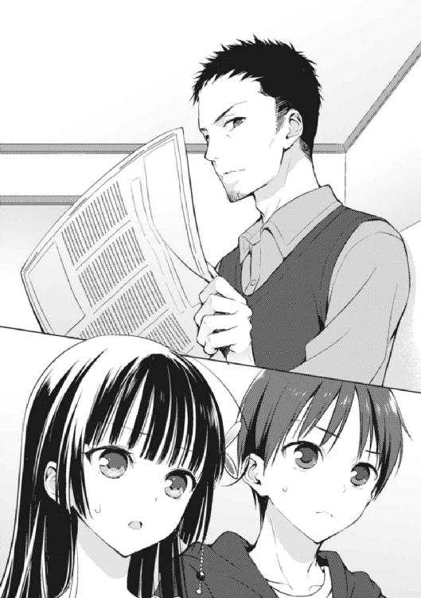
「紅緒、」
香神氏が新聞を広げた体勢のまま、言った。「早く耀子さんのところに行ってあげなさい。夕食の支度があるだろう？ ここにいては時間が勿体ないからね」
「え、でも、もう大体出来てるし......」
チラリと紅緒が途轍もなく不安そうに、俺の顔と香神氏の顔を交互に見た。
どうもこの様子を見るに、紅緒本人は俺がやってきた後は、自分もリビングに陣取って事のやり取りを監視する予定だったらしい。
が、しかし。
「いやいや。それは良くないよ。今日は紅緒も作ったんだろう？ 最後まで料理に責任は持たないと。葉介君もそう思うよねぇ？」
「え、あ。はい、まぁ......」
唐突に話が俺の方へと振られる。こうして同意を求められてしまったら、さすがに否定するわけにはいかない。実際、香神氏は何も間違ったことは言っていないのだ。
「う......」
結局、俺にまで話を通されてしまったら、紅緒にもどうすることも出来なかった。
紅緒はとても名残惜しそうに俺と香神氏を見つめ、力強く主張する。
「わ、分かったよ......で、でも、お父さん！ あまり変なことを葉介に言っちゃダメだからね!? 私、凄く恥ずかしいんだから！」
「はは。紅緒は心配性だなぁ。変なことだなんて、そんなねぇ」
俺は聞き逃さなかった。
瞬間、ガサリ、と何かと何かが擦れ合わさったような音が漏れたのを。
どこから聞こえた音だろう......僅かに考え、そしてその答えに行き当たった時、俺は心の底から戦慄したのだった。
「言うわけないじゃないか」
新聞だ。
なにしろ──香神氏が新聞を持っていた辺りが強い力で握り締められて、クシャクシャになっているところを、俺は目撃してしまったのだから。
二人きりになって、開口一番に香神氏が言い放った。
「まず安心して欲しいのは、僕は君が思っているほど、君のことを憎んでいるわけではないということだよ」
「......」
──さぁ、始まった。
そもそも隣家に住む女の子の父親が、その女の子の幼馴染みの男子に対して、いきなり『君が思うほど君のことを憎んでいるわけじゃない』とか言い始める辺りで、様々なことが間違っているに違いなかった。
だが、俺と香神氏の陰のやり取りは、もはや何年も続いて来た日常茶飯事だ。
俺、愛内葉介の人生において、自分に対して純然たる敵意を向けられた最初の相手が香神氏であることは拭い去れない事実なのだから。
「そしてもう一点。僕に対して、あまり畏まらないで貰いたいんだ」
「......畏まらない、というのは？」
「そのままの意味だよ。遠慮しないで良い、ということさ」
香神氏がクシャクシャになって二箇所に穴の空いた新聞を畳んで、空いていたソファの上に置いた（しかもよく見ると、その新聞の日付はどう見ても昨日のモノだった）。
香神氏が、真っ直ぐに俺を見つめ、言った。
「だって、葉介君は今日、僕から──紅緒を奪い取りに来たわけだしね。もはや戦争だよね。分かっているよ」
「............」
絶句、する。
どうやら香神氏の中では、俺が紅緒にプロポーズか何かでもしに来たモノだと思われているらしかった。どんだけ大袈裟なんだ!? そりゃあ俺も大分気合いを入れて来たのは間違いないけど、さすがにそこまでの決意はしてねぇぞ!?
「おっと、しらばっくれようとしても無駄だよ。今日は僕も父親として可愛い紅緒のために君とは徹底抗戦するつもりでいる。覚悟したまえ」
「......いや、正直、そこまでは考えていな──」
瞬間、香神氏が目をカッと見開いた。
「まさかとは思うが、君は紅緒が奪い取るに値するだけの女の子じゃないとでも言いたいわけか!? 殺されたいのかい!?」
「ちょ──!?」
というか、一瞬でブチ切れた。
香神氏のクールなターンはあっという間に終了してしまった。
これが非常に爽やかで人柄も良い香神氏の最大の問題点──異様なまでの娘煩悩である。香神氏は娘である紅緒のことが好き過ぎるあまり、娘に近付く男に対して恐ろしいまでの敵意を燃やす傾向があるのだ。
というか、その傾向が発揮されるのはほぼ俺に対してだった。香神氏は裏表のない率直な人なので、俺に対して文句を言う時も清々しいほどストレートなのである（だからこそ、紅緒にとって悩みの種であり、耀子さんとしょっちゅう喧嘩をしているのだろうが）。
しかし、半ば宣戦布告済みの香神氏とは違い、俺は別に無理矢理に紅緒のことを奪い取りに来たとかそういうことは一切なかった。
俺の目的は、あくまで自分の想いに対して、真っ正面から向き合うこと。今日、この夕食の場で、何もかも話を進めてしまおうという欲求は特になかった。
それ故に、俺は弁解するしかなくなる。
香神氏は俺のことをそれほど憎んでいないとは言っていたが、喩えるならソレは『さっき姉さんが俺にくれた超巨大な板チョコも飛び抜けた大食いである姉さんにとっては大した量ではない』と言っているのと変わらないだろうからだ。
「そ、そんなこと言ってないですって！」
「そんなことない!? 確かに君は言ったじゃないか！ 『紅緒を僕から奪い取ることは考えていない』と！ 紅緒の可愛さは、当たり前の感覚を持っている男ならば、メロメロになって当然のモノなんだよ!? 生まれた時から紅緒に纏わり付いてる羽虫のような葉介君がそんな基本的なことを理解していないとは言わせな──」
香神氏がそこまで言い掛けたところで、リビングと台所を繫ぐ引き戸の扉がガラッと音を立てて開いた。そこから現れたのは、
「──お父さんッ!!」
「!?」
おたまを握り締め、顔を真っ赤にした紅緒が涙目で立っていた。
紅緒が絶叫する。
「恥ずかしいからやめてって言ったのに！ 全然私の話聞いてくれないじゃん！」
「ま、待て、紅緒！ 僕は何も間違ったことは──」
「葉介の前で、なんでそんなこと言うの!? 私、死ぬほど恥ずかしいんだから！ お父さんなんて大嫌い！」
「!?!?!?」
そしてピシャッと大きな音を立てて、紅緒が再度引き戸を閉めた。
こちらの会話は向こうにほとんど筒抜けだったようだ。いや、単に香神氏の声が大き過ぎて、嫌でも耳に入ってくるだけだった気もするが......。
「............ははは」
乾いた笑い声が漏れる。
ガックリと肩を落とした香神氏が一瞬で十歳くらい老け込んだのではないかという憔悴っぷりを見せる。残念なイケメンという言葉がこれほど似合う人も中々いないだろう。
「......葉介君、君はこんな僕を憐れだと思っているだろうね」
唐突な言葉。
まさか、憐れとまでは思っていない。残念とは思ってしまったけれども。とはいえ、香神氏ほど裏表なく感じたことを話せるわけではない俺は言葉を濁しつつ、
「さすがにそこまでは思ってないですけど......」
「そうかい？ まぁいい。ただ、肝に銘じておくといいよ──この娘を溺愛する僕の姿は、近い将来......いや、その可能性は万に一、百万に一ぐらいだが......君が辿る末路になるかもしれないのだからね」
末路。
何となく、胸の奥に引っ掛かる言葉だと思った。
香神氏は酷く狼狽しているのもあるし、娘のことに関しては非常に倒錯的な発言を繰り返す人でもあるので、何もかもを無理に参考にする必要はないはずだが──それでも、この言葉を聞き捨てるわけにはいかないと本能的に俺は感じ取ったのだ。
「......それは、どういう意味ですか？」
「言葉通りの意味だよ」
言いながら、香神氏が立ち上がった。まさか台所に乗り込むのでは──と思いきや、そちらではなく廊下へと続く扉の方向へと歩いていく。
「覚悟したまえ。うちの妻もそうだったが、紅緒もそうだ。二人には共通する部分が数多く存在するということだよ......青森にいるうちの義母もそうだったと聞くからね」
共通する部分。
香神氏の義母──つまり、紅緒にとっての祖母だ。
共通......何が共通するというのだ？
「食事を楽しむといい。僕は少し会社に電話をしてくる。夕食が完成してしまったら、先に始めて欲しいと耀子さんに伝えておいてくれるとありがたい」
そう言い残して香神氏はリビングから出て行った。一人取り残された俺は、頭を悩ませることしか出来なくなる。
数分後、耀子さんが台所からやって来て、夕食の準備が終わったと伝えてくれた。
「がっ──────」
マズい。
Ｗでマズい。
「どうかな。今日はお母さんと二人で腕によりを掛けて作ったんだけど......」
隣に座る紅緒が尋ねてくる。
香神家にお呼ばれしたとしても、やはりこの距離感であることに俺は少しむず痒い気持ちを抱いたのだが、結局、食卓の上に広がる惨劇の生き証人となってしまっては、そんな甘ったるい感慨は霧散せざるを得なくなってしまったわけで。
「どうかしら、葉介君。感想は？」
「......」
斜向かいの耀子さんが、にこりと笑いながら俺に訊いた。
しかし、その「にこり」に単なる笑顔とは異なるニュアンスが含まれているように感じたのは俺の気のせいではないだろう。そう、耀子さんが元々、色んな意味で厳しくて怖い人であることを差っ引いても、この「にこり」には裏がある──
そう感じずにはいられなかった。
「か、感想ですか......？」
尋ねる。二人は揃って首肯し、
「そうよ。率直に言って貰って構わないわ」
「気になるよね。私は絶対おいしいと思うんだけど」
「わたしもそう思うわ。あら......紅緒、あなたまた、腕を上げたんじゃない？ 葉介君のところに通うようになってから、本当にメキメキと料理が上手くなって......」
「そ、そう......？ えへへ。お母さんにそう言って貰えると嬉しいなぁ」
それに加えて、パクパクと自分達の作った料理を食べながら和気藹々とする。
だが、対する俺は目の前で繰り広げられる親子のワケの分からない会話に呆然とすることしか出来なかったわけで。
また腕を上げた......？
うちに通うようになってメキメキと料理が上手く......？
──耀子さんは、いったい何を言っているのだろうか。
また、とか、メキメキ、なんて言葉が登場するほど紅緒の料理が進化した記憶は、俺の中にサッパリないのである。
紅緒にメシを作って貰い始めてから十ヶ月。
もう本当にサッパリなレベルで紅緒の料理能力は進歩しておらず、むしろここ数ヶ月に至っては技術的な部分の成長が完全に伸び終わり、むしろ「無駄なテクニックを用いた食材のセンスや味付け具合が壊滅的でとんでもなくマズい料理」が食卓に並ぶことも多くなって来たな、と思っていたぐらいなのに。
進化というなら、それは間違いなく別の方向だ。
香神紅緒の料理は、常に俺達の半歩先を行く──異次元の料理である。
ただし、もちろん真逆の方向に、であるが。
そしてそんな紅緒の母であり、食育を行った本人である耀子さんもまた異次元の世界の住人だったのである。以前と、変わる事なく。
というか、だ。
今、このテーブルの上に置かれている料理について、俺は「とある疑問」を抱かずにはいられなかったわけで。
「......あの、感想の前に、一つお訊きしたいことがありまして、」
俺は尋ねた。
「これは何という料理なんですか？」
──目の前にある料理が、そもそもいったい何なのか、俺にはサッパリ分からなかったのである。
俺は元々料理名や材料に関して、それなりの知識を持っている。そのため今までは、どんな奇想天外な料理を出されたとしても、それが何の料理であって、どんな材料を使っているのかを大体は把握することが出来ていた。
しかし今回、香神家の食卓に登場した料理は──俺にとって意味不明を極めたような料理だったのである。
見た目、匂い、色合い、そしてもちろん、味わい。あらゆるポイントにおいて──俺のデータバンクに、この料理を特定する情報がまるで存在しなかった。
かといって、正体不明の食材が使われているわけでもない。
謎の生物の肉とか、変な植物とか、気味の悪い魚とか、未開の地の香辛料とか。
ファンタジー世界に一狩り行かなければ手に入らないような食材が使われているわけではない。
例えばラム肉らしきモノとか、生牡蠣みたいなモノとか、セロリみたいなモノとか、ハッキリと名称が頭に思い浮かぶモノだけで構成されているのは確実だ。
しかし、ソレらを掛け合わせて出来上がる料理が──サッパリ思いつかないのである。
料理名どころか、どこの国の料理かすら分からなかった。
和食？ 洋食？ 中華？ フレンチ？ エスニック？
どれとも違うように思える一方で、そのどれにも当て嵌まるようにすら思える。
──これは、何なのだ？
そして、これが一番肝心だ──どうしてこんなにも、この食材の組み合わせで、どうにもならないくらいに、マズいものが生まれてしまうのか？
「やっぱり、葉介君もその質問をするのね」
言いながら耀子さんが微かに笑った。
「うちの人も、最初に私の料理を食べた時、同じようなことを訊いて来たわ」
「それって、おじさんのことですか？」
「そう。ええと、何年前だったかしら。紅緒が生まれる前で、結婚してすぐだから......二十年近く昔になるかしら......うちの人なら即答出来ると思うんだけどね。丁度、席を外しているのが残念だわ。戻って来たら訊いてみましょうか」
僅かに顎を上げ、昔のことを思い出しながら耀子さんが言った。そしてスッと居住まいを正し、鋭い眼光を湛えたまま俺の方を見据えて続ける。
「これはね、葉介君。わたしの実家に代々伝わる、秘伝の料理なの」
ひ、秘伝の料理......!?
おいおい、なんだソレ......！ そんなモンがあるのかよ......!?
「秘伝の料理といっても、そんな大層なモノじゃないもの。ええと......わたしはあまり詳しくないんだけど、ゲームなんかに出て来そうな......？ そういう大袈裟で、異常なモノでは決してないのね。でも、コレは少し変わっているかな。実は──この料理には名前がないのよ。だから葉介君が知らないのも当然だわ」
「......名前がないと不便じゃないですか？」
「そうね。でも、滅多なことじゃ作らない料理だし、正式な名前はなくても、あだ名みたいなモノはあるのよ。それがね、『おふくろの味の料理』っていうの。要するに、うちの家で母親が娘に直接レシピを教えて、代々引き継がせて来た料理ってところかしら」
おふくろの味。
つまりは生まれてから育っていく過程で、自然と舌に染み着いた自然の味のことだ。
それは各家庭で異なるモノであって、確固たるイメージがあるわけではない。
ただ、この言葉が何故か殊更使われる料理も存在する。
──肉じゃが、なんかがそうだ。
ちなみに俺は肉じゃがは、ぶっちゃけ嫌いである。
といっても、別に味が嫌いなわけではなく、よく雑誌などのインタビューに出て来る『得意料理は肉じゃがです。おふくろの味です』とかいうコメントが嫌いなのだ。
あえて肉じゃがをチョイスするなんて積極的に料理上手キャラ作ってるみたいで噓っぽいとか、なんで数ある料理の中で肉じゃがを選んでしまったのかとか、ビーフシチューの失敗作から生まれた意外と新しい料理なのになんで伝統日本料理みたいな位置づけされてんのとか、そもそも肉じゃがはメインディッシュにならねーよとか。
基本、好き嫌いがほとんどない俺だが（昆虫やゲテモノなどのイレギュラー過ぎるモノは除外して）、唯一と言っていいほどピンと来ない料理が、この肉じゃがなのである。
味ではなくイデオロギー的な意味で、嫌いっつー感じかね。
ただ、俺が肉じゃがをあまり好まないことをお袋は知っているため、もう数年近く愛内家の食卓に肉じゃがは並んでいなかったし、台所を任された紅緒にしても肉じゃがをモチーフにした料理は不思議なことに今まで一度も作ったことがなかった。
だから、最近は肉じゃがについて考える機会なんて、ほとんどなかったのだが──って話が逸れたな。そう、おふくろの味の話だった。
......ん、でも待て。
さっき、耀子さんはかなり重要なことを言ったんじゃねーか。
ええと──紅緒に直接レシピを教える？
......マジで？
それ、アカンやん。一番マズいパターンじゃん。
だって紅緒ってさ──レシピ通りに料理作れねーよな？ レシピに従って料理を作ろうとすればするほど、ワケ分からんコトになって、最終的には............。
うん。
そんな紅緒にレシピを教えるって。
しかも、耀子さんの口振りだと紅緒のメシマズっぷりの大元とも言うべき耀子さんですら、自分の母親から「おふくろの味の料理」の作り方を習ったみたいで──
その時、おずおずと紅緒が切り出した。
「......私もお母さんに聞くまで知らなかったんだけど、うちって代々、メシマズの家系みたいなんだよね。もう何代も前から、ずっと」
「えっ。だ、代々......!?」
......何かスケールがとんでもないことになって来たんですが。
確かに、紅緒の母親である耀子さんのメシもマズい──それは前々から俺も知っていたし、ぶっちゃけ自然なことだと思っていた。だって紅緒の作るメシは本当に神掛かり的なマズさなのだ。こんな奇跡が一代で唐突に開花したとは到底思えなかった。
いわゆる「蛙の子は蛙」という奴だ。
けれど、その更に先までは考えたことがなかったのだ......紅緒の母である耀子さんの母親は、二人と同じようにメシマズだったのだろうか、と。
そして、一つの言葉が俺の頭の中に浮かび上がる。
「うん。しかも、うちはほとんど女の子しか生まれない女系家族なの。で、こういうメシマズな部分がそっくりそのまま遺伝して来たみたいで」
「......わたしが若い頃は『メシマズ』なんて言葉はなかったけれどね。結構、最近出来た言葉よね、コレ。意外と流行ってるみたいだけど」
曰く──メシマズの一族。
ただでさえ俺の周囲にはマッズい料理を作る女子が山ほどいる。が、そのメシマズっぷりが脈々と遺伝してきた家系が存在するなんて......正直、信じがたい部分もある。
しかし、それは間違いなく事実なのだ。
俺の目の前に置かれた摩訶不思議な料理こそが、その何代にもわたる彼女たち一族の「メシマズ史」の証明とも言えるのだから──
「な、なるほど......道理で......」
俺は自分の前に置かれた「おふくろの味の料理」を見つめ、ゴクリと唾を吞み込んだ。
言う迄もないが、別に食欲を刺激されたわけではない。
単に、固唾を吞んだだけだ。
「色々と理解して貰えたかしら」
「まぁ、はい......それなりには」
「良かった。じゃあ、そろそろ本題に入りましょう」
耀子さんが「おふくろの味の料理」を食べながら、おもむろに言った。
俺が口にすれば顔を顰めずにはいられない驚愕の味わいのその料理を、耀子さんは眉一つ動かすことなく口に運び、咀嚼する。
同じモノを食べているようには到底思えないほどに。
「この『おふくろの味の料理』は、特別な時にしか作らないと決まっているの。うちの家ではある意味で、おせち料理よりも、クリスマスケーキよりも重要な料理。じゃあ、どんな時に作るかというと──まぁ、まさに今みたいな時に作るのよ」
耀子さんが言った。
「娘が、男の子を家に連れて来た時用の料理。その男の子に、うちの家系の料理をしっかりと知って貰って、色々なことを判断して貰うための料理。それがこの『おふくろの味の料理』なの。娘の何十年後かの姿......つまり、わたしぐらいの歳になった時、紅緒がどんな料理を作っているか──その具体例を示す必要があるから」
次の瞬間、紅緒が弾かれたような勢いで叫んだ。
「っ......お母さん！ その言い方はやめて！ だって、それじゃあもう初めから諦めてるみたいだよ!? 私はいつか、絶対においしい料理を作れるようになるんだもん！」
ピシャリと耀子さんが言った。
「紅緒、大きな声を出すのは止めなさい」
「っ──！」
「もちろん、わたしはあなたがずっと頑張っているのは知っているわ。わたしの目から見てもあなたの腕前はハッキリ上達しているとも思う。でもね──それは葉介君の目から見たら、どうなのかしら？」
「そ、それは......」
弱々しく、不安そうな目で紅緒が俺の方を見た。
俺は思う。
ここで紅緒に『俺から見ても、紅緒の料理は上手くなってると思います』と言えたらどれだけ素晴らしいことだっただろうか、と。
だけど、違う。
そんな風なことを、俺は今日の料理を食べた時にちっとも思わなかったのだ。いったいどこが進化しているのだろう──そんなことを思ってしまったのだ。
俺は、紅緒のその縋るような眼差しに応えてやることが出来ない。
「やめなさい、紅緒。葉介君が困っているわ」
俺が返答に窮しているのを見て、耀子さんが小さくため息をつく。
続けて耀子さんが言った。
「今日葉介君を呼んだのは──葉介君はもう全てを知っていてもいいと思ったから。あなた達の関係がとてもふわふわしていることはわたしも知っているわ。だけどわたしは、そのことに口を出そうとは思わない。それはあなた達が決めることだと思うから。誰に指図されるべきでもない。でもね、このことだけは早い内に伝えてしまった方がいいと思ったのよ。
だって──紅緒の料理はきっと変わらないわ。そして葉介君は十分知っていると思うけれど、毎日食べる料理が『マズい』というのは、とても辛いことなの......ごめんなさいね。何を食べてもおいしく感じるわたしが言っても、まるで説得力のない言葉なのに」
「......っ」
「............」
紅緒も俺も、何も言うことが出来なかった。
──俺のしてきた決意は、どうも大いに空回りだったらしい。
耀子さんは、俺に「そういう意味での決断」を迫っていたわけではないのだ。
紅緒と俺の間に存在する二つの争点──つまり「幼馴染み」ではなく「メシマズ」の部分。そのことに対する、俺の覚悟を問おうということなのだ。
耀子さんは言う。
紅緒の料理は、決して上手くならないと。
それが自分達の家系の宿命だと。
繫がるようにして頭に思い浮かぶのは、俺と紅緒の約束の言葉だ。
『俺が心の底からウマいと言える料理を紅緒が作る』
俺達の「メシマズ」が始まった頃から続く──一番大切な取り決めだ。
だが、今この瞬間、その誓いは絶対に果たされることはないと耀子さんから断言されてしまった。紅緒の料理はいつまで経ってもマズいまま。それが変わることはない、と。
そして、俺達に唯一残された可能性は──
「あのね、紅緒......わたしも、あなたと同じくらい努力はしたのよ。しかもね──うちの人って、わたしの料理がこんなだって知らないで結婚したのよ。大変なことよね。実家に連れて行った時に、ちょっと行き違いがあって『おふくろの味の料理』を食べて貰うことが出来なくて......わたし、言い出せなかったのよ。ずっと、勇気が出せなくて。あなた達みたいに、自分の料理を披露するタイミングが一度もなかったのもあるんだけど......でもね、うちの人は──」
「いやぁ、すまないね！ 耀子さん！ 紅緒！ ......葉介君。会社への電話がこんなに長引いてしまうとは思わなくて！」
その時だった。
耀子さんが話している途中で、非常に高いテンションで香神氏が台所へとやって来たのである。娘に『お父さんなんて大嫌い！』と拒絶され、リビングから出て行った時の死にそうな表情はいったいどこへ行ったのやら。本来の香神氏の表の顔──爽やかなスポーツマンタイプのイケメン、という部分が全開になっている。
「さて今日の料理は──うん？ なんだか見たことのない料理だね。正直、意外だな。まさか耀子さんの料理で、僕が食べたことのないモノがあるとは......」
「あっ──お、おじさん、それは......！」
勢いよく耀子さんの隣に座った香神氏に思わず俺は声を荒げていた。
香神氏は今、耀子さんが言っていたように「おふくろの味の料理」を食べたことがないのだ！
だから、この料理が持つ摩訶不思議な圧倒的メシマズ力を全く知らないことになる。だが、コレは紅緒達の家系に代々伝わる一子相伝のメシマズレシピ。そんなモノを気付かずに食べてしまっては、大変なことに──
「なんだね、葉介君。君に僕が耀子さんと紅緒の作った料理を食べることを阻止する権利は存在しないはずだが」
ギロリ、と──香神氏が相当キレ気味な様子で俺を恫喝する。
結果、俺はまともな言葉を返すことが出来ずに。
「い、いや、それは......」
「まったく......なんだというのかね。困ったものだよ、これだから葉介君は──っと」
「あっ......！」
ぶつくさ言いながら、香神氏が「おふくろの味の料理」を箸でつまみ、大口を開けて吞み込んだ。万事休すだ。なんということだろう。俺は思わず目を瞑り、訪れるであろう惨劇の言葉を待つことしか出来なかった。
──が、しかし。
「ほう、これは凄いな！ 久しぶりにこんなにウマい料理を食べたかもしれない！ さすが耀子さんだな！」
「へ......」
ウマい料理、だって？
い、いや、そんな料理は、なかったはずで──
「葉介、違うんだ。お父さんは、ちゃんと私達が作った料理もおいしく感じるの」
瞬間、隣に座った紅緒が囁くように言った。
「はっ、な、なんだソレ......!?」
「前にも言ったことあるよね？ お父さんはお母さんのことが大好きで、本当に本当に大好きで、結婚してからお母さんが料理を全然おいしく作れないって知っても、お母さんのことをちっとも嫌いにならなかったの。確かにね、お母さんの料理はあまり変わらなかったの。でも──最終的に、変わったのはお父さんの方。お父さんは毎日お母さんの料理だけを何年も食べ続けて、お母さんの料理をおいしく感じるようになったの」
「そ、そういえば──！」
覚えが、ある。
確か去年の秋頃だっただろうか。内容も今紅緒が言った通りで、香神氏は結婚してからひたすら耀子さんの料理を食べまくり、そのせいで体質が変わったとか何とかで、普通に作る料理をおいしく感じるようになったらしい。
その時は食べた人間の体質すら変化させかねない耀子さんの料理に、ただ戦慄しただけだったが──
「......あなた、やめて頂戴。葉介君がいるのよ。そんな大声を出して......恥ずかしい。大したモノじゃないわ。あなただって分かってるはずでしょう？」
「そう言われてもなぁ。僕にとって、耀子さんの料理がおいしく感じられるのは紛れもない事実なわけだし」
「......まったく、あなたったら」
耀子さんは香神氏に自身の料理を激賞されたにも拘わらず、にこりともしなかった。
その表情からは耀子さんがどんなことを感じているかは窺えない。
けれど、俺はこのやり取りを見て、確信する。
──この人達、滅茶ラブラブだ！
香神氏といえばひたすら娘煩悩な人で、耀子さんも娘にばかり感けている夫に色々と呆れ返っているのだとばかり思っていた。
実際、それが原因で喧嘩して実家に帰ってしまったりしているわけだし。夫婦仲も大変なのではないか──下世話な話だが、そんなことを俺は勝手に想像していたのである。
だが、違う。
こ、これは......！
「......もしかしなくても、お前んちの親って、スッゲェ仲良い？」
俺は訊いた。紅緒は即答する。
「見れば分かるじゃん。超ラブラブだよ、うち」
「喧嘩して家出たりするのに？」
「でも『喧嘩するほど仲が良い』って言うし」
「た、確かにそれは......」
「あのね。お父さんは私のことに関しては、駄々を捏ねる子供みたいになるけど、お母さんのことだと全然違うんだよ。超カッコイイの。マジでお母さん一筋なの。だから私、昔からずーーっと不満だったんだよねぇ......。なんで、私にはお母さんに接するみたいにしてくれないんだろう、って。不公平にも程があるよ......」
「............」
なんという結末だ。
そして俺は自然と悟ってしまう──つまり、耀子さんのように全く料理がプラスの方向で進化しなかったとしても、円満に関係を成立させる方法を。
それは、過去、何度か俺の脳裏に浮かんだことのあるやり方。
──紅緒ではなく、俺が変わる。
今までは、そんな手段は外道であると俺は切って捨てていた。
だが、本当に紅緒の料理がコレからも「進化」することがないのだとすると──
「......ねぇ、葉介」
「なんだよ」
「思ったコト、言って良い」
「......いいよ」
「うん。ありがとう」
そして、その想いは俺だけでなく、紅緒にとっても同じだったらしくて。
「お父さん達を見てると感覚が麻痺しそうになるけど、私と葉介は二人とは違うと思うんだよね。何となく、だけど。私は、葉介に『お父さんみたいに私の味に慣れて欲しい』なんて言いたくないんだよ。葉介、これってさ......」
紅緒が心の底から吐き出すように、ぼそりと呟いた。
「私の、わがままなのかなぁ」
夕食も一段落（？）して、香神家からお暇する時間になった。
結局、あの後、四人になった食卓で俺達は「おふくろの味の料理」を平らげた。
もっとも、他の三人と違って、この一子相伝の料理を受け付ける身体ではない俺だけは終始苦悶の表情を崩せなかった。
耀子さんは無理をして食べなくてもいいと言ってくれたのだが、そこは出された料理は残さず平らげるのがモットーである俺だ。
丁重にお断りして完食させて頂いた。
ただ、耀子さんが別れ際に『また来たくなったらいつでもいらっしゃい』と言ってくれたことに対して、苦笑いを返すことしか出来なかったのは若干の心残りである。
そして。
「......はぁ」
「ん。なに、そのため息？ ちょっと思わせぶりだね」
「そんな大した意味はねーよ。ただ、なんで紅緒まで俺と一緒に家を出て歩いてんのかと思っただけだよ。というか、なんだ。うち来る気か？」
「ううん。もう遅いし。ただの見送り」
紅緒は俺のことを見送りに来てくれていた。
というか──玄関でわざわざ靴を履き、近くに置いてあったマフラーを首に巻き、香神家の門を出た俺の後を追い掛けて来て、並んで歩き出したのである。
「見送りねぇ。正直、俺はどうかと思うけど」
「え。いいじゃん。別に、」紅緒が首を傾げ、尋ねる。「ダメなの？」
「別にダメじゃねぇけどさー。でも、五メートルぐらいしか離れてねぇじゃん、うちとお前んち。見送りだけなら出て来る必要なくね」
「そんなことないよ。十メートルくらいは離れてると思う」
「いやいや。ソレは適当過ぎだろ。家同士が隣り合ってて、塀もピッタリくっついてるのに十メートルも歩いたら行き過ぎちまうって」
「えー。じゃあ今度測ってみる？」
「スッゲェ無駄な行為だと思うけどな、それ......」
などと話していると、当たり前のように一分も掛からずうちの前に到着してしまう。
そりゃあ着くさ。だって、クソ近いんだもん。
これでも気付かれない程度に牛歩戦術を駆使して歩幅を調整していたのだが......いくら何でもこの距離じゃなぁ......。
「えーと、じゃあこの辺りで」
俺は先に愛内家の門をくぐり、歩みを止めていた紅緒の方を振り返った。
「うん」
「今日はありがとな。ご馳走になっちまって」
「ううん。気にしないでいいよ。というか、」紅緒が訊いた。「──葉介的に、ご馳走だと思った？」
凄く答えづらいところにブッ込んで来ますね紅緒さん。
紅緒の料理ならハッキリとした言葉を返したいところだけど、耀子さんがメインで作った今日のメニューについて、本人のいないところであーだこーだ言うのは......うむ。
逃げよう。
「その質問はパスさせて貰う。答えません」
「あ、逃げた！」
「......お前が知ってることをあえて言う必要もねーじゃん。どこかで盗み聞きしてたおじさんがキレて飛んで来たらどうすんだよ？」
「えー？ いや、そんなことあるわけ............ごめん。ない、って言えないや。お父さんならやりかねないとしか思えない......」
終始茶化した様子で話を進めていた紅緒だったが、最終的にはガックリと肩を落としてしまった。香神氏の話題になった時、紅緒が毎度心底ウンザリした表情を浮かべていた理由も、今日になってようやく答えに辿り着くことが出来た。
自分に対しても母と接する時みたいにカッコ良くしていて欲しい、ね。
紅緒の意見はもっともなのだが、あの香神氏の様子を見ている限りでは、正直その願いはまるで叶いそうに思えなかった。
「......と、とにかく、今日は色々とごめんね。じゃあ、ここで」
「別にどうってことねぇよ。気にすんな」
「うん......」
紅緒は小さく、ゆっくりと頷き、そして唇をキュッと結んだ。視線は波のようにたゆたい、一箇所に定まることはない。
唇から白い吐息が漏れる。
「「............」」
静寂の中顔を見合わせていた。
俺も紅緒も似た感じで『じゃあ今日はもう』とお互いに口にしている。既に別れの挨拶は済ませたわけだ。それに解散場所に辿り着いていないわけでもない。
だというのに──俺達は、真っ直ぐ突っ立ったままだった。
視線が交差することはなく、俺も、紅緒も、空白の時間を持て余してしまっている。
どこを見ていいのか。何を見ていいのか。何を見るべきなのか。
何を言うべきなのか。
──もう、特に何も言葉は必要ないはずなのに。
「......な、なんだか、変な感じだな」
「そ、そうだね！」
沈黙に耐え切れず、全く意味のないニュアンスだけの言葉が溢れ落ちた。紅緒もその言葉に対して大きく相槌を打った。別に、大したことを言ったわけでもないのに。
誰かに強制されてこうしているわけではない。
だというのに俺達は向かい合ったまま、意味のない時間を過ごすことしか出来なかった。
「ええと、そういえば明日は──」
話題。
黙っているわけにもいかず、俺は咄嗟に「明日の予定」という話のネタに手を伸ばしていた。非常に普遍性の高い話題である。普段ならば、少なくとも数分は間を持たせることの出来る鉄板のテーマだ。
が、しかし、俺は同時に失念していたのである。
今日が二月十三日であるということを──明日は、ただの明日ではないということを。
失敗した、と思った時にはもう遅かった。
俺の言葉が引き金となって、紅緒がぽつりとその言葉を口にした。
「バレンタイン、だね......」
「そ、そうだな。バレンタイン......」
俺はドギマギしながら言葉を繰り返した。
──失敗した。
バレンタインの話は、極力したくなかったのだ。
例えば、今日、うちでリリィと花菱と一緒にチョコ作りをしていたことについて、個人的には非常に気になっている。紅緒の口からその時の話を聞いてみたいとも思う。
が、しかし──バレンタインの前日に、わざわざ男の方からバレンタインの話題を振るなんて、どう考えてもチョコを無心しているようにしか見えないではないか。
だから、イヤだったのだ。
今の俺は全ての語尾に「（チラッ）」が付いているようなスーパー無様な状態に陥ってしまっている。どんなことを話しても言葉の内容が全て「ギブミーチョコレート」に変換される状態と言っても過言ではない。
「「............」」
結局、またしても、会話が止まってしまう。
しかも──先程よりも一層深刻に、だ。
どうしてバレンタインという言葉一つだけで、俺達の喉は鉛の塊を吞み込んだかのように閉ざされてしまうのだろう。逆にこれが一年前の俺だったならば、きっと相当気軽に『今年もチョコくれるのか？』と尋ねていたに違いないのだから。
俺の中には答えがある。
自分自身と向き合って、辿り着いた気持ち......紅緒に対する気持ち。
それは十分過ぎるほど、俺の言葉を錆付かせる要因と成り得る。では──紅緒はどうなのだろう？
紅緒まで俺と同じく、口を噤んでしまった理由は──？
「......実は、私、最近ずっとね、」紅緒が言った。「──練習している料理があるの」
「そう、なのか。でも、紅緒は大体いつも何かの料理を練習してないか？」
「そ、それはそうなんだけど......この料理は特別なの。最近って言ったけど、去年からずっと練習してて、まだ、葉介には食べて貰ったことないんだけど──、」
スッと顔を上げて、紅緒が真っ正面から俺を見つめた。
「近いうちに葉介に食べて貰えたらいいな、と思ってるの......今度こそ、絶対おいしいはずだから。そ、それだけ！ じゃあね、今日はありがとう！」
「あ......お、おい!?」
跳ねるような勢いで紅緒が駆けていった。
行き先は目と鼻の先にある香神家。数秒後、けたたましい音を立てて向こうの家の扉が閉まった。俺は一人取り残され、何とも言えない気分になる。
「紅緒が練習している料理......」
だって、このタイミングで特別な料理なんて言い残されたら、候補として思い浮かぶ料理はどうしても一つに限定されてしまうわけで。その「近いうち」とやらが、もしかしなくても明日のことなんじゃないかと思ってしまうわけで。
そうして、ついに運命の日が訪れた。
二月十四日、バレンタインだ。
「うーっす」
『......』
「はっ──!?」
──なに、この空気。
昇降口や学校の門をくぐる辺りどころか、高校へのメインとなる通学路を歩いていた時点で異様な雰囲気が漂っていたわけだが、教室に入るとそのオーラは一層、異常さを増していた。
一部の人間は、とてもふわふわしていて、甘ったるくさえある。が、逆に放電でもしているかのようにピリピリとしたムードを全身から発散させている者も少なくない。
それ以外でも、いつもならば見かけることのない奇行のオンパレードだ。
おもむろに机の中身を幾度となく確かめる者、机に掛かっている鞄の中身を何度も窺う者、明らかに挙動不審になり周囲をジロジロ眺め回している者、ほぼ刈り上げに近い髪型なのに何故かヘアスタイルを異様に気にしている者──様々である。
だが、パッとクラスを眺めた瞬間、最初に抱く感想はもっとシンプルなものだった。
──そもそも、なんかこの時間なのに、明らかに人が多い！
──そしてとにかく男が多い！
俺がいつも通りの時間に登校すると、うちのクラスの男は大体半分に少し欠けたくらいの人数が登校しているケースが最も多いのだ。
そりゃあ俺も起きるのが早い方ではないが、華凪と一緒に登校することを考えるとそこには責任が芽生える。俺のせいで華凪を遅刻させるわけにはいかないし、どうも華凪のクラスメイトは朝が早い子が多いようで、そんな事情から最近の俺の登校時間はそこそこ早い部類に入るようになっていた。
が、このバレンタイン当日の朝──男子の出席状況は、過去に類を見ない結果を示していた。
なんと、まだ登校していない男子が片手で数えられるぐらいしかいなかったのだ。
お前らこんなに早く学校来られたのか──と思わざるを得ないような遅刻の常習犯まで顰めっ面をして、自分の席に座っていたりするし。
これがバレンタインの力って奴なのかねぇ......。
と。
「──愛内君、ちょっと」
「......あん？」
「いいものあげる」
自分の席に行こうとしたところ、何とも不遜な声が一つ、背後から投げ掛けられた。
こ、この無愛想な声は......！
俺の身体がビクリと震える。
その声の主と、そして彼女が持つパーソナリティ──メシマズ力（ぢから）が一瞬で脳裏を駆け巡ったからだ。
いけない。
こんな出会いは、今日の俺の予定には刻まれていない。それが何故によりにもよってバレンタインの教室の一番手でお前に声を掛けられなければいけないのかッ──!?
「......」
「......？ どうしたの、愛内君。無視しないで欲しいのだけど」
自身の声を相手が聞き取ったのは間違いないのに、何故か自分の方へと振り向こうとしない俺の態度を見て、彼女は不思議そうに尋ねた。
俺は答えた。
「いいもの、要らない」
「......は？」
「要らない。気持ちだけ貰っとく。ありがとう。さすが花菱だぜ。最高だ」
一気にずらずらと言葉を並べて、俺は逃走を図った。これしかない。俺がこの場で取り得る最善の行動はコレしか──が、しかし。
「ちょっと待って！ せっかくあたしが手作りバレンタインチョコをプレゼントしてあげようというのに、何故愛内君は逃げようとするの!?」
彼女──花菱カロンが、このような行為を許してくれるわけもなく。
花菱はガッとこちらの肩を摑んで、逃げ出そうとする俺を必死で阻止しようとした。
さすがに俺もこの状態で彼女を振り払うようなことが出来るわけもなく、仕方なしに後ろでブチギレているであろう花菱の方を振り向くと、
「だ、だってお前のチョコとか要らな──」
「あげるって言ってる！」
「ぐぇあ!?」
──瞬間、花菱に口の中へチョコをぶち込まれてしまったわけで。
「な、なっ、なんつーことを（なんふーほとを）......」
「これが一番手っ取り早い。このままだと愛内君はしばらく抵抗するだろうし」
「て（ふぇ）、てめぇ（ふぇめぇ）......！」
「ちなみに勘違いしないで欲しいのだけど、もちろん義理だから」
「分かってるっつーの！（ふぁふぁつてるつふーの！）」
ふん、と花菱が不満げな様子で鼻息を荒くした。
一方、口内にチョコをキープしてフガフガしたままの俺は、まともな反論をすることも出来ない。伊達にコイツとの付き合いもそろそろ一年近くではない、ということだ。
俺が花菱の行動＆思考パターンを大体把握しているように、向こうも同様に俺のしそうで言いそうなことを理解しているのだろう。
確かに奴の言う通りで、こうして口の中にチョコをぶち込まれなければ、俺はあーだこーだと言い訳を並べて花菱のチョコをしばらく受け取ろうとしなかっただろう。
ならば、実力行使が最も手っ取り早い。理に適っている。
そして何よりこうされたら俺は花菱のチョコを嚥下する以外の選択肢は消え失せる。
畜生、畜生......！
「ッッッッ────!?」
結局、丸吞みするにはちょっと大き過ぎるため咀嚼せずには吞み込むことの出来ない花菱特製の義理チョコを、俺は、しっかりと嚙み締め──嚥下した。
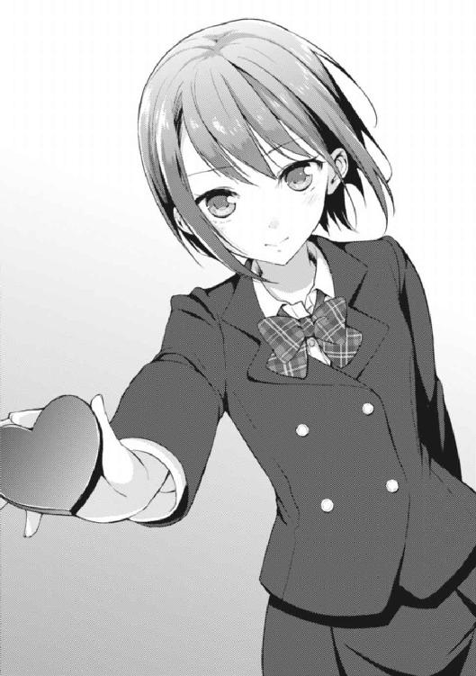
そして、声にならない声を漏らした。
そして、水飲み場に駆け込んだ。
そして、死んだ。
「............はぁっ、はぁっ、はぁっ......！」
数分後。
最近チョコを食っては「はぁはぁ」と喘ぎ声を漏らしてばかりいる私（わたくし）、愛内葉介は何とか死の淵から生還し、二年五組の教室へと舞い戻った。
幸い、朝のホームルームは始まっていなかったし、今日俺が誰よりも意識している人物はまだ現れていないようだったし、教室を包むバレンタイン特有の鬼気迫る空気もそのままだった。
──危なかった。まさか、こんなタイミングでアレが役に立つなんて......！
「おいしかった？」
教室に帰還し、キレ気味に花菱の机へと直行した俺に、彼女が開口一番に投げ掛けた言葉がこれだった。なんつー奴なんだ......と、俺は思い、そして答える。
「死ぬほど辛かったわ、ボケ！」
「なるほど。気に入ってくれたようで嬉しい」
「おいコラこの激辛バカ！ 勝手に自分の基準に合わせて『辛い＝おいしい』に変換してんじゃねーよ!?」
──もはや言う迄もないだろうが、花菱のチョコは恐ろしいほど辛かった。
いきなり口の中に本体を叩き込まれたので、それがいったいどのようなビジュアルをしていたのかを推し測ることは出来ない。
ただ、仮にもチョコレートであるはずなのに、ぶち込まれ過ぎた辛味成分のせいで血の色に（赤く）染まっていたであろうことは想像に難くない。
と、早朝からの激辛体験に憤る俺をぼけーっと眺めていた花菱が僅かに目を見開くと、
「愛内君、それは何？」
「あ？」
スッと俺の方を指差し、不思議そうに尋ねた。
「手に持ってる奴」
「っと、これか......これ、リリィの作ったチョコだよ」
「ああ、リリィの、」花菱が納得した様子で首を縦に振った。「道理で包みに見覚えがあると思った」
「むしろ物忘れが良すぎるわ......」
──つまり、それは「中和」のようなモノだった。
実は、今日、クラスで俺がチョコレートを貰ったのは花菱のモノが一個目だが、今朝起床してから貰ったモノをカウントすると、二個目なのである。
本日の俺のファーストチョコレートは、朝に家で貰ったリリィの作ったチョコレートだったわけだ。
昨日ずっとチョコを作りまくっていたリリィは今日の朝、意気揚々とリュックサックにチョコを満載して学校に向かって行った。リリィは昼の便でイギリスに一時帰国してしまうため、本来ならば欠席するべきだったのだろうが......なんとしても皆にチョコを渡したいということで、早退してしまうものの今日も学校に行くことになったのだ。
故にリリィの作ったチョコを所持していた俺は、先程、水飲み場で苦悶していた際に頭に浮かんだ一つの妙案に縋るしかなかったのである。
──激辛に激甘をぶつける。
リリィが作ったチョコも、やはり凄まじくリリィっぽい味わいだった。
味は激甘、凄まじく濃厚。中にはナッツやドライフルーツといったハイカロリーで糖分取り過ぎなテイストが十分過ぎるほど含まれていて、量自体は大したことはなかったのに相当な満腹感を抱かせる一品だった。食べながら、コレは雪山とかに持って行ったら凄くありがたがられそうだな、としみじみ思ったものだ。
もちろん、塩と間違えて砂糖を入れてしまった料理に改めて塩を投入しても、味は全く中和されることはない。酸性とアルカリ性ではないのだ。むしろ更に酷くなる。
とはいえ──奇跡的に、気休めにはなったのだった。
本当に奇跡的だったが。
「ま、さっさと愛内君にチョコを渡せて良かった」
花菱がぽつりと言った。俺は渋面をつくりながら訊き返す。
「ったく、どういう意味で良かったんだよ......」
「決まってる、」
花菱が言った。「だって──紅緒が先にチョコを渡してしまったら、わざわざあたしがこんなに朝早く起きた意味がなくなってしまうもの」
「は......」
「──きっと、上手くいくと思う」
真っ直ぐ俺を見つめながら花菱が言った。あまりにもシンプル過ぎる言葉だった。けれど、それは、花菱カロンという少女にとって最上の言葉に違いなかった。
──伊達にコイツとの付き合いもそろそろ一年近くではないのだから。
「......そもそも、俺からの告白が既定路線になってんのはお前が撒いた種じゃねーか」
ぽつりと言う。花菱が首を横に振った。
「終わりよければ全て良し」
「ンだよ、それ」
「そのままの意味」
「ったく、人の気も知らないで......はぁ......」
ため息を、溢す。
けれど、それは鬱屈した感情の吐露などではない。何だろう。上手く言葉に出来ないけれど、ソレは、もっとステキなため息だったのだ。
と──その時だった。
「......」
まるで俺と花菱の会話が綺麗に一段落付くようなタイミングで、ガラリ、と教室の扉が開いたのは。
現れた人物を見て、クラス中の人間が喋るのを止めた。
男も、女もである。
そして──クラスを包み込んでいた異様な雰囲気は、この日の最高潮を迎えることになった。
「............へ？」
──紅緒が登校して来たのである。
誰よりも先にクラスに到着しているのが普段の紅緒なのだが、二月に入ってからは学級委員は清掃委員と協同して朝の清掃キャンペーンを展開しているため、最近は学校に来るの自体は早くてもクラスにやって来るのは大分遅いのが普通だった。
実際、俺が登校した時もクラスの雰囲気は男女問わずに全身からバレンタイン特有の緊張感を醸し出し、尚かつ甘ったるくも浮き足だった空気に占領されていたが、紅緒が教室に入って来たこの瞬間は、もはや「壮絶」と言わざるを得ない状況だった。
──ザワリ──
空気は微かなざわめきに揺れて、明らかに何かに期待を寄せている。
各人が胸に抱いた期待の感情は、そのまま糸を引くような思わせぶりな視線へと姿を変えて、メインキャスト二人に対して、じわり、じわりと躙り寄る。
つまり、俺と紅緒に対して。
「えっと、コレって......？」
自身が注目を浴びまくっていることに驚いた様子の紅緒がキョロキョロ周囲を見回しながら、自分の席に向かって歩き始めた。
が、しかし、ここで予想外の「誘導」が入ることになる。
女子の一人が足早に紅緒に駆け寄り、朝の挨拶もそこそこに紅緒のブレザーの裾をチョイチョイと引っ張ったのである──俺が立っている方向に向けて。
それどころか、その女生徒は紅緒の鞄を指し示した後、今度は俺の顔へと向けて露骨にその人差し指を何度も突き付けたのである！
なっ......も、もう誘導とかいうレベルですらねぇのかよ！ 完全に『さっさと渡せ』とか言ってるようなもんじゃねぇか、コレ......!?
ま、まさかここまでやるとは......！
「いいよなー葉介は」
「香神さんだもんなぁ」
周りにいた男の友人なんて、完全に野次馬的なノリでそれぞれの感想を呟き始める始末だった。しかも、コイツらと来たら、既に両の掌を自分達の胸の辺りで構えるポーズを取っていたわけで、つまりソレは「祝福」の姿勢に他ならないわけで。要するに、今すぐにでも拍手が出来る体勢になってやがったってわけだ！
おいおい、待ってくれ。
──一度、整理させて欲しい。
今日は二月十四日。バレンタインデー。原則的には女が男にチョコを渡して想いを伝える日だ。だが、ここで重要なのは『バレンタインなのに、男である俺の方から紅緒に告白する』という噂が出回っているという点だ。
華凪は言っていた。
『紅緒ちゃんが傷つくことを何よりも嫌う兄さんはこの噂が出回った時点で、紅緒ちゃんをこの噂から守るために自分から告白するに違いない』
みたいなことを、だ。
ハッキリ言っておく。コレは相当な部分で正しい。大正解だ。
俺だって散々迷い、考え、苦悩して二月十四日という日を迎えている。覚悟は──出来ている。一歩を踏み出す覚悟だ。ずっと曖昧なままキープし続けていたカードの表面を上にして場に提示する決意も、だ。
ぶっちゃける。
──俺が、紅緒のことが好きなのだと、しっかりとした言葉で伝えるということだ。
うん。
大丈夫......ブレてはいない。
ただ──一個だけ、全く想像していなかった展開がある。それが俺と紅緒のバレンタインが完全に見世物みたいになっている「針の筵」状態についてだ。
正直、俺はあまりこの状況を好ましく思っていない。
いやさ。
クラスの連中はこうして囃し立ててはいるとしても、少なくとも良いことだと思ってやってるのは分かってるんだよ。
喜んでくれるだろうし、拍手も、祝福もしてくれる。
ただ......うん。
やっぱり、わざわざ皆の見ている前でそういうことをするのは遠慮願いたい。俺だって思っているのだから、紅緒だって絶対似たようなことを考えているはずだし。
──場所を、場所を変えるべきだ。
っと、待てよ？ もう時間が結構微妙な感じになってるな......もう少しで朝のホームルームが始まっちまうじゃねぇか。今からどこかに移動するのは現実的ではないか。
となれば、ここは場を何とかして流して、改めて昼休みにでも時間を──うん、それがいいな。決めた。
「紅緒！」
強い口調で名前を呼ぶ。
すると、ついに俺の方から動いたということで、ざわめきだったクラスメイト達が揃って「おおっ！」などと歓声を上げる始末。うっせーバカ。野球の試合でファインプレーしたみてぇな目で人の恋路を見るんじゃねぇよクソ。
「......えーと、今は時間がアレだし、その、なんだ。うざい連中がいるから、場所も変えた方がいいと思うんだよな。例えば昼休みとか......どう思う？」
足早に突っ立っていた紅緒のところへと駆け寄ると、先程頭の中で纏めた内容を俺は手っ取り早く紅緒に伝えた。多分、これには紅緒も同意してくれるはずで──
「──どう思うって、どういうこと？」
「へ......？」
「............葉介。私には、よく、分からないよ」
「えっと......よく分からないって、な、何がだ？」
紅緒が衣擦れの音もなく、俺の顔を見上げた。
俺達の身長差は約十五センチ。そのため向かい合って話す場合、紅緒が必ず俺を見上げることになる。だからソレは俺と紅緒にとって一番慣れた対面の形だ。
見慣れているはずの、形だ。
「葉介の言っていることが、だよ」
──形、だった。
紅緒の雰囲気が変わった。
かつてない色に、形に......表情に。
──俺、愛内葉介は香神紅緒の幼馴染みを十七年の間続けている。
だから、今では絵に描いたようなしっかり者である紅緒も、ガキの頃は彼女の中の穏やかでのんびりした気質の方が強く表に出ていたことだって知っているし、当時は今みたいに紅緒に俺の生活を掌握されるなんてことはなくて、むしろ俺が色々な意味で主導権を握っては一緒に遊びに行ったりしていたことだって知っている。
そうだ。
俺達の十七年間は──俺達が共に変わっていく十七年間でもあったのだ。
「俺の、言っていること......」
「うん。だって............ないもの。だから、私......葉介の期待には応えられないよ」
ない？
期待には応えられない？
どういうことなんだ。紅緒は何を言って......。
「今年は葉介にあげるチョコレートを、用意出来なかったの」
紅緒が自身の鞄の口をガバッと開き、その中身を俺に見せた。
中に入っていたのは教科書や筆箱、弁当箱、細々とした道具──少なくともそこには包装紙に包まれた甘く、そしてほろ苦いお菓子の姿は全く見受けられなかった。
「............ごめんなさい」
小さく頭を下げて、紅緒は自分の席に走って行ってしまった。そして鞄を机の横に掛けて席に着くと、ギュッと肩を強張らせ、顔を伏せてしまう。
紅緒の長く艶やかな黒髪がザァッと前に流れて、どこからも彼女が今、どんな表情をしているかは窺い知ることが出来なくなった。
「────」
俺の口から言葉は何も出て来なかった。
呻き声や、苦悶の嗚咽さえも。
代わりに紅緒が俺の前から逃げるようにして着席してしまった後、堰を切ったように周囲で爆発的な声の波が生まれる──クラスの連中が一斉に喋り始めたのだ。
騒然と、雑然と。今目の前で行われたやり取りの真意への問いが教室の中を電波のように飛び交っていた。
けれど、そんな言葉の数々も、俺の耳には単なる雑音にしか聞こえなかった。
言葉が断片としか認識出来ず、耳の奥では速度を増した心臓の鼓動だけが徹底して賑やかに俺の意識を囃し立てるのだ。
──チョコレートを貰うことが出来なかった。
ただ言葉にすると、ショックを受けることがおこがましいように思えるかも知れないけれど、それが俺と紅緒にとっての事柄となれば、話は別だ。
物心付いた時からずっと続いて来た、二月十四日の習慣が、断絶した。
──変化、した。
それは、俺達の関係そのものに大きな疑問を投げ掛けることになるのだから。
◆ ◆ ◆ ◆ ◆ ◆
──ああ、私はなんてダメなんだろう。
机に頭を乗せて、誰からも見られないようにと両腕で顔を隠しながら、そんなことを私は強く考えていた。
声が聞こえる。たくさんの声が。
私は耳を塞いで、全てのイヤなことから逃げ出してしまいたくなる。だけど、机の上で握り締めた両の手を私は解くわけにはいかなかった。
聞かなくてはならないと思ったから。
それが、こうすると決めた私の義務だと思ったから。
私は葉介へのチョコレートを用意しなかった。
時間が足りなくて間に合わなかったとか、作るのに失敗したとか、ましてや彼が私にとってチョコレートを渡す存在たり得なくなったわけでもない。全て違う。
──用意、出来なかった。
それがシンプルな事実だった。
チョコレートは私と葉介にとって、とても特別な存在だ。
私が彼に初めてチョコレートを渡したのは忘れもしない小学校の一年の時。近所のスーパーでお母さんに頼んで買って貰ったモノが全ての始まりだった。
それから、毎年一度も欠かすことなく、私は葉介にチョコレートを手渡し続けた。
ずっと、ずっとだ。
私は自分のお小遣いをはたいて、毎年チョコレートを買って、彼に渡していた。そして彼もそれに応えてくれて、ホワイトデーにはささやかなお返しをくれた。
私は、それがとても嬉しかった。
本当に本当に......嬉しかった。
だから、私は、それだけで──十分だったのだ。
何故、葉介にチョコレートをあげようと思ったのか。さすがに十年前のことなので、当時の細かな感情までは思い出すことが出来ない。
けれど、私の中に漠然とした確信が存在したことだけはハッキリと覚えている。
バレンタインが好きな男の子にチョコレートを渡す日であると初めて知った時、私は何の疑いを持つこともなく、こう考えたのだ。
『バレンタインというのは葉介にチョコレートをあげる日なんだ』
と。
その認識は成長した今になってもあまり変わっていない。最近は女の子同士でチョコを渡し合う「友チョコ」という文化が出来たので、少しだけ変化した部分もある。
けれど、根本的な部分は、ずっと同じまま。
私は、バレンタインになったら葉介にチョコレートを渡すのだ──でも、高校二年生のバレンタインを迎える時、その認識に大きな揺らぎが生じてしまった。
メシマズ。
──どうやら私の「味」に対する感覚はヨソの人とは全く違うモノであるらしいと判明したからだ。
このとんでもない弱点を何とかするために、私は色々と手を尽くした。現在進行形でやっていることも沢山ある。けれど目立った成果はまだ出ていない。
葉介に......私の料理を食べて貰った時に、真っ正面から「おいしい」と言って貰ったことは一度もない。そして、出て来る言葉は決まっている。
彼は決して私に噓をつかない。私が本当に自分の料理下手に悩んでいると知っているからこそ、率直な感想を伝えてくれる──マズい、と。
ハッキリとそう口にしてくれるのだ。
実際、それはとてもありがたいことであり、愛おしいことであり、同時に辛いことでもあった。
手を尽くし、味を凝らし、今度こそ絶対においしく出来ているはず──なにしろ、自分でそう確信して作り上げた料理の感想が、尽く正反対の方向のモノばかりなのだ。
挫けそうになるし、折れてしまいそうになる。
だけど、耐えるしかなかった。
私は耐えることを選んだ。だって──私は彼が私の料理を食べて「おいしい」と言っている姿が見たいと思ったから。
それが私の中で、彼の一番好きな姿なのだから。
好きな食べ物を、本当に嬉しそうに、楽しそうに口にする光景──もう一度、その光景を見てみたいと思った。
そう。
もう一度、だ。
私は、知っている──知って、しまっている。
私が彼に手渡したモノを、彼が本当においしそうに食べる姿を。
その姿を見ることが出来た時の胸の奥に湧き上がる表現しようのない喜びを。
そして、彼が最後に「ありがとう」と感謝してくれる優しい声を。
ソレは、あくまで店に売っていた既製品を買って来た時だけに過ぎないのかもしれない。
けれど、ソレは間違いなく私にとっての原初の体験なのだ。彼を好きでいる一番の理由の根底にあるモノなのだ。
私──香神紅緒が、最も好きな彼──愛内葉介の姿とは、年に一度、二月十四日にだけ訪れる、その出来事によって培われて来たモノだ。
バレンタインにチョコレートを渡すことが、一年前までの私にとって、本当に掛け替えのない行為だったのである。
──だからこそ、私は今年、チョコレートを葉介に手渡す勇気が持てなかった。
実際、今まで葉介に手作りチョコを渡さなかった理由はお母さんに止められていたからであって、もっと前から許しさえ貰えたなら挑戦したいとは思っていた。
だって、買って来たチョコを渡しただけで、あんなにも私は素晴らしい時間を過ごすことが出来ていたのである。
これが手作りのチョコだったならば、どうなってしまうのだろう？
そう考えずにはいられなかったし、実際に欲望は尽きなかった。
けれど、こうして自分自身のメシマズっぷりが明らかになり、それと同時にお母さんからバレンタインの手作りチョコが解禁された時──私の中に浮かび上がったのは、喜びや熱意などではなく......純粋な「恐怖」だったのである。
私にとって、バレンタインで葉介にチョコレートを渡すことは、特別な行為だった。
だからこそ、私は怖かったのだ。
──バレンタインにチョコレートを渡して、葉介にそれを「マズい」と言われることが。
だから──私は逃げた。
チョコレート、そのものから。
確かに去年までと同じく、既製品のチョコレートを渡すという選択もあっただろう。彼は私の行動を不思議がるだろうが、間違いなく快く受け取ってくれる。
そしておいしそうにチョコを頰張りながら、こう尋ねるに違いないのだ。
『俺はてっきり紅緒は自分でチョコを作るものだとばかり思ってた』
と。
その言葉に、私は答えを持たない。
きっと乾いた作り笑いを浮かべることしか出来ない。
言えるわけがない──『葉介にマズいと言われるのが怖かったから』だなんて。
彼は、とても優しい。
彼は私が本当に傷つくようなことを絶対にしない。
だから、私が自分の作った料理を彼に「マズい」と言われることを本当に怖く感じる瞬間があると知られてしまったら──彼は私を守るために、私の料理を食べた時、こういう言葉を口にするようになるに違いないのだ。
『スゲェおいしいよ』
と。
──欠片もおいしいなんて、思っていないにも拘わらず。そんなことは私には耐えられない。そんな歪んだ笑顔でおいしいなんて言って欲しくない。
わがままだ。
なんて、私はわがままな女なのだろう......イヤだ。自分自身がイヤで、イヤで、堪らなくなる。自己嫌悪で潰れてしまいそうになる。
けれど、この感情は私の中に押し込めるしかないのだ。
こんなことを葉介に言ってしまったら、きっと私達の関係は壊れてしまうから。
心地よくて、いつまでも浸っていたくなるような──甘く、曖昧な、幼馴染みという関係は、同時に簡単なきっかけで、終わってしまうモノに違いないのだ。
◆ ◆ ◆ ◆ ◆ ◆
その日は俺にとって人生最悪のバレンタインと言っても差し支えのないモノだった。
調子に乗っていた。
余裕をブッこいていた。
バレンタインはとっても素晴らしい行事だと思っていた。
──その裏側に間違いなく存在する、バレンタインの暗部に気付くこともなく。
チョコを貰える人間がいれば、貰えない人間だっている。
そして貰える人間はそれが当たり前のことだと思っていて、口では何とでも言えるだろうが、本当はちっともそのありがたみに気付けない......その結果がご覧の有り様である。
──紅緒からチョコが貰えなかった。
そのことだけで自分が目の前が真っ暗になるほどショックを受けるだなんて思ってもみなかったのだ。
俺ってこんなに紅緒からチョコを貰いたがってたんだ......などと、他人事のように考えても完全に後の祭りである。いや、じゃあ具体的にどうしていたらチョコが貰えたのかと考えてみても、何かしらの妙案が浮かんで来るわけでもないんだけど。
ただ、思い返してみれば、一年に一度、紅緒からチョコレートを貰う──という行事は俺と紅緒の関係の中でも、かなり大昔から続いて来た習慣だ。
始まりは幼稚園......じゃない！
そう、小一からだ！
園児服じゃなくて、ランドセルだった！
小一の時は、そもそも俺はバレンタインという行事をまだ認識しておらず、学校の帰り道にいきなり紅緒がチョコレートをくれたので、意味がよく分からないままチョコを食べながら下校したら途中で姉さんに見つかって行儀が悪いと説教されたのだった。
......というか、何故俺はこんな個性的なエピソードを忘却していたのかという話ではないだろうか。
やはり、慢心が原因だ。調子ブッこき過ぎた結果だ。
第一、根本的に紅緒がチョコを用意していなかったということは、つまり今までの積み重ねの問題ということになる。チョコはポケットを叩けば湧いて出て来るわけではないのだ。前日までに買うなり、作るなりしなければならない。
......とにかく日頃の行いが悪かった、としか言いようがないのではないか。
何が、いけなかったのだろう......。
紅緒を怒らせるようなことは──なんか色々してる気がして来たし、紅緒を失望させるようなことは──これも色々している気がして来た。
アカンて。
コレは大変なことだよ、愛内葉介。
しかも、だぞ？
............バレンタインチョコって、好きな人にあげるもんだよね、普通は。
じゃあ、今までずっと毎年俺にチョコをくれていた紅緒は──俺のことが好きだったのか？
えっと......ううん......ど、どうなのかな......？
だって紅緒が俺にチョコをくれる理由なんて最近は考えすらしなかったし。
向こうも「好き」とか「本命」とか「愛してる」とか、そういう直接的なことは一切言わないで渡してきたし。
......いや、自分としては、俺と紅緒はずっと同じ方向を見ているモンだっていう認識があったんだよな。何となく通じ合っているっていうか。
幼馴染み的な雰囲気で。何故、その方向を見るのか──わざわざお互い確認し合う機会なんて、全くなかったんだよ。
実際に「紅緒のことが好きだ」と口に出そうと考えたのは本当に最近の話だし、なんて言うか本当に俺達って色んなことを曖昧にして雰囲気で押し通して来たんだな......なんて思ったりもして。
だから、今回の一件は、グラッと根底が揺らいだ感じがある。
っていうか一番の驚きは『俺と紅緒の根底って揺らぐんだ......』とかいうレベルだったりするんだけど、何かもうそんな風に感じている辺りで、こうも思うんだよね。
俺達って、意外とガチャガチャした関係だったんだなぁって。
本当に、他人事みたいだけど。
そう、思うんだ。
──結局、この日は紅緒とアレから一度も口を利かずに終わった。
周囲の連中が妙に気を遣って積極的に話し掛けてくれたのだけど、やはり俺は思いっきり上の空で、心なしか周囲に女子が群がっていた紅緒も同じように見えて。
でも、言葉を交わすことは出来なくて。
「ただいま......」
帰宅。
外も暗ければ、家の中も暗かった。
要は人が誰もいないのだ。
手探りで照明のスイッチを入れて、リビングへと向かう。
パチ。パチ。ピッ。
蛍光灯、白熱灯、ついでに動いてないＡＶ機器にチャンネルが合わさったまま黒い画面を晒しっぱなしにしていたテレビの電源を落とした。
鞄を手近なカウチソファの上に放り投げ、制服から着替えもせずに、いつも座っている席へと腰を落とす。ドサッ、と。背中から身体を放り投げるように。
「えーと、皆は......」
指を折りながら考える。
リリィは、今頃はもうイギリス行きの飛行機の中。
姉さんは今日は一日中仕事。
華凪はさっきメールがあって、今日は帰るのが遅くなるとのこと。
クラスの友達と「本命チョコを渡す相手のいない女達による女子会」に参加するとか何とか。華凪は兄に本命チョコを渡すので参加資格を満たしていないと主張したらしいが、彼女ら的にソレはもちろんノーカンだったらしく、ヘタな言い訳をしたものと見做され強制参加が決定してしまったらしい。ちなみに華凪はまだ俺にチョコを渡していなくて、帰って来てから絶対渡すつもりのようだった。
となると、今日は──
「俺一人しかいないじゃーん」
マジで久々のソロプレイのようだった。
姉さんが仕事で不在になることは珍しくなかったが、リリィと華凪が家を空けるシチュエーションは非常に稀で、しかもソレが重なるなんて初めてのことだった。
そうなるとこんな情況は俺の一人暮らし時代まで遡らなければならない。
あの当時は、この家を一人で使えることに歓喜していたわけだが、何てことは無い。あんな感慨は一時の気の迷いみたいなモノだった。もう十分過ぎるほど身に染みたのだ。
この家は、俺一人で暮らすには広過ぎるのだ。
「あー、でも紅緒が......」
唯一の例外の顔を思い浮かべる。
──彼女は、今日やって来るのだろうか？
......いや、ないな。
普段ならともかく、その可能性は今日に限っては非常に低いはずだ。
紅緒と俺は今日のバレンタインでまさに一悶着起こしてしまった。それから一切口を利いていない、利けていないのだ。
関係の修復には、何らかのきっかけか、時間が必要なのではないか。
............修復、か。
なんか自分で言ってて悲しくなって来た。だって直さねーといけないってことだろ、それって。壊れちまったんだ。壊れ具合の全貌はまだ見えて来ないけれども。
「今日は、もう終わっていいわ......」
オレンジのマカロンクッションをヒョイッと持ち上げて、顔の上に落とす。更に背中をより一層、ソファに沈み込ませ、両脚はローテーブルの上にストンと置く。
──ちょっと、寝る。
今日は疲れた。
本当に......疲れた......。
それから、どれぐらいの時間が経った頃だろうか。
得てして眠りからの覚醒とは急な場合が多い。そして、今回も突発的な外的要因によって、俺の浅い睡りは阻害されることになる。
──チャイムの音によって。
『ピンポーン！』
「............あ？」
誰か、来た。
というか、ええと、なんだ......軽く寝ちまったんだっけ......？
って──寒っ！
ヤバ......風邪引くところだったじゃねぇか......。
いつもならソファで適当に寝ても、他の誰かが毛布を掛けてくれたり、自分の部屋で休むように誘導してくれたりするのだが......生憎、今日は全員不在だ。
しかも窓の向こうに目を遣ると、帰って来た時はおぼろげな黒に過ぎなかった空がハッキリとした真っ暗に染まっていることに気付いた。リビングの壁時計も随分と進んだ時間を指し示している。
結構な時間、寝ちまったってわけだ。となると、このチャイムはいったい......宅配便にしたって、こんな遅い時間に届けに来たりは......。
──ガチャリ──
「！」
瞬間、俺は身体を跳ね起こした。続けて聞こえて来たのが紛れもなく玄関の扉を開ける音だったからだ。
しかし、俺はまだ何も応対をしていないのだ。
つまり、この来訪者は『うちに来た時にチャイムを鳴らすけれど、その後は勝手に入って来る人物』ということになる。
そして、それに該当するのは一人しかいなかった。
「......」
想像通りの該当者が、ゆっくりと姿を見せた。
ギィ、ギィッと微かに廊下の板が軋む音が響く。今日は俺以外、誰もおらず、誰も来るわけがないと思っていた「がらんどう」の愛内家に、だ。
香神紅緒の姿が、そこにはあったのだ。
「べ、紅緒......!? お前、なんで──」
「......なんでって、」
紅緒が声を上擦らせながら言った。
「葉介に、ご、ご飯を作りに......来たの......。だって、私以外、誰もいないんだし......」
──ご飯を作りに来た。
そう、紅緒は言っていた。
「......」
「......」
だが、リビングに姿を見せた後の紅緒の行動はいわゆる有言実行の逆──有言不実行そのものだったわけで。
「......紅緒。お前、メシ作りに来たんじゃないのか？」
「......そうだよ」
声を震わせ、こちらの問い掛けに首を縦に振りこそすれど、紅緒は何故か台所に行こうとしなかった。
それどころか俺の座っていたカウチソファの方へと歩み寄ると、無言で定位置（カウチソファのコーナー部分を背もたれにして直接カーペットの上に。俺の座る場所とは対角線上、遠過ぎず近過ぎずの距離）へと腰を下ろしてしまったのである。
メシを作りにうちへ来たはずなのに、台所に行こうとしない。
どういう、ことなのだろうか。
「「......」」
正体不明の沈黙が俺達を貫いていた。
香神家にお呼ばれした時の帰り、うちの門の前で向かい合って黙りこくっていた時と比べて、どことなく不安な空気が流れていた。
いや、違うか。
実際──俺も紅緒も、内面の戸惑いがモロに表情から溢れていた。俺達はこの家において自分達が最も自然体でいられる定位置に座っているにも拘わらず、だ。
定まらない視線。
揺れる肩。
意味もなく組み替えられる脚。
漏れるため息。
そして──
「私......料理を作りに来たんだ......」
紅緒がぽつり、ぽつりと、喋り始めた。
普段とは異なる、穏やかさと冷静さを共に欠いた状態で。
俺はゆっくりと、その言葉を嚙み締める。彼女の想いを、一つ残らず自分の中へと取り入れるために。
「今日は葉介しか家にいないって華凪ちゃんに聞いて......だったら私が葉介にご飯を作らないとって思って......でもね。頭の中が、もうグチャグチャでさ......」
そして、紅緒が切羽詰まった声で訊いた。
「............私は、本当に、葉介にご飯を作っていいのかな」
俺は答えた。
「──いいに決まってんだろ」
「っ......！」
この内容とほぼ同じ問答を俺と紅緒は数ヶ月前、同じ場所で、同じぐらいの時間にしている。そして俺はその質問に対して、当時よりも数段強い言葉で返答することが出来た。
けれど、紅緒の様子はその時とはまるで違って見えた。
今日は紅緒が──とても小さく見えた。
「俺はお前の作ったメシが......ええと、微妙に違う。ウマいメシが食いたいんだ。だから気にする必要なんてねぇよ。好きなようにやってくれ」
「う、うん......」
小さく首肯する。
しかし、紅緒の中に充満しているモヤモヤが晴れたようには到底見えなかった。
漠然と思う。
──足りない、のだろうか、と。
少なくとも紅緒に『自分は料理をしてもいいのか』と尋ねられて、内容的にこれ以上相応しい言葉は俺には思いつかない。
けれど、紅緒の不安そうな表情は依然として変わらなかった。
ただ、この問いは「しこり」なのだ。俺と紅緒が歪な「メシマズ関係」を続ける限り、完全に拭い去ることは出来ない不安......だから、ふと心が弱くなった時にぷっかりと海の底から浮かんで来る可能性を秘めている。
そして浮上して来る度に、それをもう一度沈めてやらなければならない。
けれど──俺に出来る最良の言葉を口にしたはずなのに、それは紅緒に大した効果をもたらさなかった。だから、ふと思ったのである──足りないのだろうか、と。
足りないとは何だ？
何があれば紅緒を普段の彼女に戻すことが出来るだろう。
優しくて、おっとりしていて色々抜けているところはあるけれど、実際は物凄くしっかり者で、いつも駄目な俺を支えてくれて、笑顔が可愛くて、そして。
誰よりも大好きなこの子を──
「あ............」
そこまで考えた瞬間、俺の身体に雷が落ちたかのような衝撃が走った。
──大好きな、この子？
俺は紅緒のことが好きだ。大好きだ。けれど、ここで「愛している」を使うのは、少し恥ずかしいような気がする。
大好きまでは分かるけれど「愛している」がどういう感情なのかは、ちょっとまだ分からない。分からないうちは使えない。だって俺はまだまともに「好き」という言葉すら使えていないのだ。俺には、まだ過ぎた言葉なのだ。
だからまだ必要ない。
今の俺にはまだ「好き」だけがあればいい。
──では逆に「好き」という言葉は、誰が使うべき言葉なのだろうか？
もう遠回りはしない。
一直線に答えへと俺は到達する。
つまり、この「好き」という言葉は恋愛感情を表す言葉だ。当然、それを用いるのは非常に密接な関係──友達や知り合い同士を超えた「恋人」の関係でなければならない。
今の俺達──つまり単なる「幼馴染み」では、この「好き」という言葉は、どうしても持て余してしまうに決まっているモノなのだ！
互いの感情に応じて、互いの関係はアップデートされていかなければならない。
足りないモノは、距離だ。
単なる幼馴染み同士では届かない。もっと密接な関係にならなければ、本当の意味で互いの心の奥底に引かれたラインを飛び超えることは不可能なのだ。
確かに、幼馴染みは途轍もなく近しい関係だ。
人生の長い変化の時間をお互いに共有し合い、そして共に成長して来た「半身」のような存在とさえ言えるに違いない。けれど、単なる幼馴染みの状態では、決して到達することの出来ない領域というモノも確かにあって。
それがきっと、今、紅緒が傷を負っている場所に違いないのだ。
となれば、今俺がやるべきことは──
「紅緒！」
一つしかないに決まっている。
「ひゃっ!? えっ、よ、葉介、手が、それに近っ......!?」
俺は座っていたカウチソファから腰を上げ、紅緒と同じ目線──カーペットの上へと居場所を構えた。間合いは、限界まで近付けた......あくまで俺の勇気の範囲内で。
せいぜい互いの膝が擦れ合う程度。
そして右の手を紅緒の手へと伸ばし、指を絡める。
世間一般の「恋人」達からすれば、こんなの接近したうちにも入らないような距離感なのかもしれない。けれど、こんな間隔ですら俺達にとっては途轍もなく過激なのだ。
だって俺達はずっと──曖昧な距離を保ちながら、お互いに接していたのだから。「幼馴染み」という曖昧でもいい関係に縋りついていたのだから。
「紅緒、今から俺の言うことをよく聞いて欲しいんだ」
真っ直ぐ、紅緒の瞳を見つめながら。
それに合わせて俺は握り締めた指先に更に力を込めた。
紅緒が絶対に痛がることがないよう心掛けた上で──それでも、決して紅緒のことを離さないという俺の気持ちが少しでも伝わるように。
「ぁ......う、うん──」
ブンブンと激しく紅緒が首を縦に振った。
指先に僅かな、それでも確実な刺激が跳ね返ってくる。
キュッ、と。
紅緒が、俺の指を握り返してくれた──たったそれだけの行為で俺の胸は跳ね馬のように跳び上がってしまった。けれど、俺は必死に自分の中の衝動を抑え込む。
出来るだけ、理性的に。
「俺は、紅緒のことが好きだ」
──全ての想いが、余すところなく彼女に伝わるように。
「っ......ぁ......!!」
「大好きだ──世界で一番大好きなんだ」
「ッ──!!」
──俺が、彼女の全てを受け止められると信じて貰えるように。
「だから、その......確かにこんな俺じゃお前に不釣り合いかもしれねぇ。お前はスゲー奴だし、俺はダメな奴だから。友達以上恋人未満の『幼馴染み』って関係は、そりゃあスゲェ居心地がいいさ。それに十七年間も俺達はそういう関係だったんだし、ずっとそのままでいたい......そういう風に思っていた。
けど、それじゃあダメだったんだ。足りねぇんだよ。この『ライン』を超えて、一歩を踏み出さないと──俺は、お前がそんな風に不安にしていても、こうして手を握ってやることも出来ねぇんだよ。俺は、もっとお前の側にいられる関係にならなくちゃいけねぇんだ。そうしないと俺はお前のことを守ってやれなくなる。俺は──」
「──葉介ぇっ!!」
言いかけた瞬間、紅緒が俺に抱きついて来た。
それでもお互い──結んだ指と指は決して離さずに。
「わ、わたし、こ、怖くて......だ、だって、チョコレートは大切なの......私にとって、バレンタインに葉介が私のあげたチョコレートを、すごくおいしそうに食べてる姿は本当に特別で、でも、でもね......だからこそ、怖かったんだよ!? だって、私がチョコレートを作って、もしも葉介が『マズい』って言ったりしたら......大切な思い出まで壊れてしまうような気がして......！ そ、それに一番イヤだったのは、私が傷付いていると葉介が知ったら、それから私の料理に『マズい』って言ってくれなくなると思ったこと......！ 私、イヤだもん......私の大好きな葉介が、噓の顔で『おいしい』なんて言うの聞きたくないんだよ......！」
チョコレート......そうか、そういう──だから紅緒は「チョコレートを渡さない」って選択をしたわけか。確かに、その可能性は非常に高い。俺は紅緒の作った料理に対して真っ正面から思ったことを言うと決めていた。
けれど、同時に気付いていないこともあった。紅緒には、一個だけ俺に『マズい』と絶対に言われたくない料理があるなんて、想像もしていなかったのだ。
「......別にいいじゃねぇか、昔のバレンタインの思い出なんて。他の料理みたいに練習してけばいいじゃねぇか。『絶対に俺にウマいと言わせる料理を作る』んだろ？ チョコレートでも挑戦すりゃあいい」
「で、でも......今までのバレンタインだって大事だし......わ、忘れたくないし......」
「分かんねぇ奴だな......えーと、待てよ？ 最初にチョコ貰ったのが小一だから今まで過ごした──」
「十回！」
紅緒がワンワン泣き喚きながら即答した。
こんなに涙で顔をグチャグチャにしつつも、彼女の優れた記憶力は健在だった。俺はそんな姿が本当に紅緒らしいと思ったし、更に愛おしく思えた。
十か。となると、合計して──よし。
「じゃあ今年を抜いて、俺達が二十八歳になったら前の数を上回れるわけだ」
「え......に、二十八って......」
紅緒が泣き腫らした目を見開いた。俺は続ける。
「ンだよ。俺は『世界で一番大好き』とまで言ったわけだし、二、三年で終わり......とか全く考えてねぇよ。もっと長い期間を念頭に置いてだな──」
「っ──うえええええぇぇ!! ようずげえええええ......ッ!!」
「うぉっ!?」
感極まり過ぎた紅緒が爆弾みたいな勢いで泣きまくる。
涙と鼻水と唾で、普段の可憐な大和撫子を絵に描いたような姿からは全く想像出来ないというか、他所様には絶対見せられないような酷い顔と声になっている。
......そういえば、すっかり忘れてたけど、紅緒ってガキの頃は華凪以上の泣き虫だったんだっけ......そうか、コレが素なのか......いや、でも、これは酷い......。
今、うちに俺と紅緒しかいなくてよかった......マジで身内にすら見せたくないぐらいのグッチャングッチャンぶりである。こんな姿を見たら百年の恋も──ま、冷めるわけねぇんだけど。こういう剝き出しの紅緒は、俺だけが知っていればいいのだ。
──そして、数分後。
「............そろそろ、大丈夫か？」
「うん、うん......ご、ごめんね......なんかもう私、凄いアレで......メッチャ不細工なところ見せちゃって......引いたよね......絶対ドン引きだよ......」
「バカ、別に構わねーよ。っと、洟かむか？ ほれ、ティッシュ」
「あ、ありがと......」
素直にティッシュを受け取った紅緒がずびーーーーーーという盛大な音と共に洟をかんだ。ちなみに俺達の体勢はあまりに紅緒の泣きっぷりが酷かったために抱き合った姿勢を維持することが出来ず、何度か変化を重ねてカウチソファの底辺部分を背にして、腕枕の要領で俺が片腕でもって紅緒の肩を抱く──みたいな感じになっている。
まぁ、なんだ。
付き合っている男女がソファに並んで座った時の、スタンダードなポーズである。
ただ、実際にやってみて思ったことは、このザ・王道とも言うべきスタンダードポーズは様々な意味で効率的に出来ている、ということだ。
というのも、この体勢だと紅緒がガン泣きする際、こちらの胸を壁に見立てて寄り掛からせることが出来るし、同時に、ぽんぽんと頭を撫でてあやしてやることが出来て、非常に都合が良い。
その、それになんだ......湧き上がるカップル的雰囲気っつーかね。スゲェあるポーズだからさ、マジで紅緒と恋人同士になれたんだと実感出来て、凄く嬉しかったりするのだ。
──と、洟をかみ終わった紅緒が、使ったティッシュを丸めてテーブルの上に置いた。そしてスゥッと顎を上げると、
「葉介、葉介」
俺の名前を、呼んだ。
磁石に引かれるように俺は視線を下げた。すると、
「んっ」
「────ッ!?」
感触が。
どこに、とはあえて言わない。
ただの、感触、である。しかし、それだけではさすがに情報が不十分な気がするので、俺と紅緒にとって、切っても切り離せない方向性の言葉を借りさせて貰いたい。
「葉介に、あげるね」
「お、おう......」
「あはは。葉介、凄い間抜けな顔してる......んー、でも私の方が酷かった、よね？ だって怪獣みたいな声出してたもん。ぎゃおうってさ」
すっかり泣き止み、普段の調子を取り戻して来た彼女を見つめながら俺は思うのだ。俺の一番好きな笑顔を浮かべる彼女を見つめながら思うのだ。
「あのさ。まだ言ってなかったよね」
──涙味だった、と。
「私もね。葉介のこと、世界で一番大好きなんだよ？ 知ってるよね？」
◇ ◇ ◇ ◇ ◇ ◇
──ところが、ここで綺麗に終わらないのが俺達の「メシマズ」な関係というわけで。
「うふふー」
「......」
「愛情を込めてねー煮込むよー」
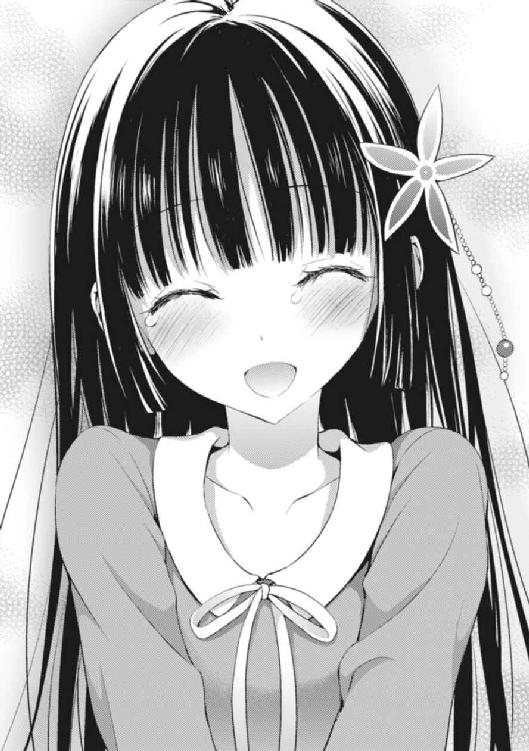
「お、おう......」
俺は食卓に着き、過去最大級の超ハイテンションで台所に向かう紅緒の後ろ姿を見守っていた。腰の後ろで蝶々になっている緋色のエプロンの腰紐も、かつて無いほどの生命力を手に入れて飛び回っているように見えた。
さて──彼女が今、何をやっているのか、もはや説明する必要はないだろう。香神紅緒がエプロンを装備するということは、料理を作る以外の可能性は存在しない。
紅緒はメシを作っているのだ。
俺の、晩メシを。
ちなみに少々のろけた言い方をすると、今し方関係が成立したばかりの恋人の夕食を作っているとも言えるわけだ。ヒャッホウ！
......。
............。
──ヒャッホウ、とか言ってる場合じゃねぇよ！ バーーーーーカ！
「ヤベェよ、ヤベェよ......」
少し話を戻そう。
数十分ほど前、とっても素晴らしい形で俺達が結ばれた後、いきなり紅緒が何かを思い出したかのように立ち上がった辺りから、この話は始まる。
ガン泣きモードから復帰した紅緒のテンションは異様なほど高かった。そして立ち上がった紅緒は驚いている俺に向けて力強い口調で言い放ったのである。
『今なら私、この世で一番おいしい料理が作れる気がする』
──完全に、いつもの紅緒に戻ったというわけだ。
いったいどこからその無駄に巨大過ぎる自信が湧き出てくるのだろう、と毎度毎度不思議に思うわけだが、今回の飛ばしっぷりは完全にワールドワイドだった。
いきなり過程を吹っ飛ばし過ぎにも程がある。
まずは世界を狙うよりも、小皿一品から始めるのが正しい道に違いないのだ。
が、図らずも俺のせいで「愛情」という最強のスパイスを手に入れた紅緒は止まらなかった。紅緒は俺を食卓に着かせると意気揚々と調理を始めた。
何を作るのかと尋ねると、彼女はこう答えた。
『それは食べてからのお楽しみだよ！』
と。
それから俺は、紅緒が料理を作るのをずっと見守っている。
もちろん角度的に調理過程が窺い知れない部分も沢山あった。けれど冷蔵庫からどんな食材を取り出してきて、どういう感じに組み合わせるかを確認していれば、何が出来上がるかぐらい大体推察出来るものなのだ。
──まぁ、さっぱり判断することが出来なかったんですけどね！
「出来た！ すぐ持ってくからね、葉介！ うふふ」
そして完成。
紅緒がぐつぐつと煮えたぎる鍋から、一人用の皿に作った料理を取り分けていく。もう今にも口笛なんぞをピーヒャラやり始めそうなご機嫌っぷりだ。
俺はそんな紅緒の姿を見て、とっても辛い気分になった。
──こんなに楽しそうな彼女に対して、俺はこれから冷や水をぶっかけなければならなくなるのか、と。
「これはね、絶対においしいと思うんだ。もう間違いなしだよ！」
誤解しないで欲しいのは、俺は決して紅緒の料理が上手くなるはずがないと思っているわけではない、ということだ。
確かに耀子さんは自分や一族がそうだったから、その直系である紅緒の料理もどれだけ頑張っても変わらない、と言っていた。
──けれど、俺はその意見には同意出来ない。
紅緒は、やると言ったら絶対にやり遂げる女だ。あいつは俺なんかには勿体ないくらいの「パーフェクト幼馴染み」って奴で、このメシマズさえなんとかなれば、マジで無敵以外の呼び名がなくなるくらい凄い奴なのだ。
かといって、今日、この瞬間、出て来る紅緒の料理がウマいものである可能性は──限りなくゼロに近いだろう。
──香神紅緒は「進化」はするが、別に突然「覚醒」したりはしない。
料理とは積み重ね、日々の努力が肝要だ。
ホップステップをすっ飛ばして、ジャンプ出来るかといえばそりゃあ無理だ。
まぁ紅緒に関して言うなら、そもそも「ホップ」するところから手探りで始めなければならないわけだが......大丈夫、それに付き合う覚悟は出来ている。
俺は紅緒が大好きだ。
だから、アイツが作った料理を俺が食べて、心の底からウマいと言った時──アイツがどんなに素晴らしい笑顔を浮かべるのかに興味がある。
ゆっくりとやって行けばいい。時間はまだまだ沢山あるのだ。
そう、何年も──
「じゃーん！ 今日のご飯はこれです！」
紅緒が料理を装った皿を俺の前に置いた。
さてさて。
記念すべき俺と紅緒の「恋人記念」を飾るのはいったいどんな料理なのだろうか。
俺は促されるままに箸を手に取り、特に何も考えずにその皿に箸を付けた。
もちろん対ショック準備は万全だ。
この俺がこれまでどれだけのマズメシを完食して来たと思って──
「......」
ん？
「............」
「どう？ これは超自信作だよ！ だって去年からずーっとコレ一つに絞って研究に研究を重ねて、練習しまくって来た料理なんだから！」
思い出す。
そういえば香神家でのお呼ばれの帰りのことだ。
あの時、紅緒は『ずっと練習している特別な料理』があると口にしていた。俺はその時のバレンでタインでデーな話の流れから、てっきり......。
「......なぁ、紅緒。お前がずっと練習して来た料理って、チョコレートじゃねーの？」
──チョコレートだとばかり思っていたのだが。
「え。なんでそう思うの？ チョコレートは私、結構マジで苦手なんだ。それに上手く作れる自信が少しでもあったら葉介にチョコ渡すの逃げたりしないし」
「い、言われてみれば......」
「でしょう？ 私が練習してたのはこの料理だよ、」
勘違い、していた。
紅緒の『特別な料理』とやらは、チョコレートではなく今まさに俺が口にしている料理だったわけだ。
「──肉じゃが！ 私、肉じゃがは結構憧れみたいなものがあるんだ。料理本とかのランキングでも『男の人に一番作ってあげたい料理』の不動の一位だし、肉じゃがをちゃんと作れたら料理上手っぽく見えると思うし、日本の伝統食だし、ご飯にもよく合うし！」
「......そ、そうなのか」
「うん！」
俺が肉じゃがに対して抱えていたヘイトのほぼ真逆のことを言っている......。
え......で、でも待ってくれ。
ちょ、なっ......マジ、かよ。
──どうなってんの？
「............一つ、訊かせてくれ。お前さ、この料理を作るときに、何か特別なこととかやったか？」
「んー？」紅緒が少し考え込んだ後、言った。「そうだね。あるにはあるかも」
「あるのか。じゃあ、それは何なんだ？」
尋ねる。もし、この料理の誕生に何かしらのカラクリがあったとしたら、それはノーベルメシマズ賞の候補にノミネートされること間違いなしの大発見だ。
紅緒が小さく笑った。
「愛情、だよ」
「......は？」
「この肉じゃがはね、葉介のことが大好きだよーって想いながら作ったの。私、葉介に好きって言って貰えて本当に嬉しくてさ。特に肉じゃがはずーっと練習して来た料理だけあって、自分でも驚いちゃうくらい気持ちが乗っかったのもあるし......えへへ」
愛。
──料理は愛情っつーこと？
いや、そんな馬鹿なことがあんのかよ。
比喩じゃねーのかよ、それって......！
じゃあ何か？
俺と紅緒の愛が深まれば深まるほど紅緒のメシマズは改善されるってか？
って──意味分からん！ もういい！
さっさと伝えるに限る！
「おい紅緒──覚悟してくれ。今から俺はかなりの問題発言をする」
「えっ......そ、そんな怖いこと言わないでよ......」
「いいから。つーか別に怖がらせる内容じゃねーよ。そこは安心してくれ」
「う、うん......」
紅緒の肩が強張った。
ただ、俺としてもこの言葉を、どういう表情で伝えたらいいのか、実は戸惑っている部分が大いにあるのだ。
「──これ、マズくねぇぞ」
だから、こういう遠回しな言い方しか出来なかったわけで。
「相変わらず、変な缶詰の肉とか謎のスパイスとか入ってるし、お世辞にも『ウマい』わけじゃねぇと思う。けど......これまで俺が食べて来た料理の中だと一番だ。『マズくはない』でお前が満足するかは知らねーけど、って──」
そこまで言い掛けて、俺は紅緒が大変なことになってしまっているのに気付いた。
どうしようもなく周囲を見回す。
ったく、前途多難にも程がある。けど、まぁ──
「......マズくないって言っただけで気絶してたら、先が思いやられるってレベルじゃねーと思うんだけど」
好きになっちまったモンは仕方ねぇよな。
俺は目を閉じて、本当に心穏やかな表情で眠る自分の幼馴染みの──恋人の顔を見つめながら、小さくため息をつくのだった。
「はぁ..................フフッ」
と、ここで、一人おもむろに笑みを溢す俺。
──別にコレからは好きなだけ見てもいいようになるのだ。
今までの俺には、なんというか「照れ」のようなモノが大いにあった。紅緒を長時間見つめ続けるなんて、あまりに目が痛くて、思わず目を逸らしてしまったわけだ。
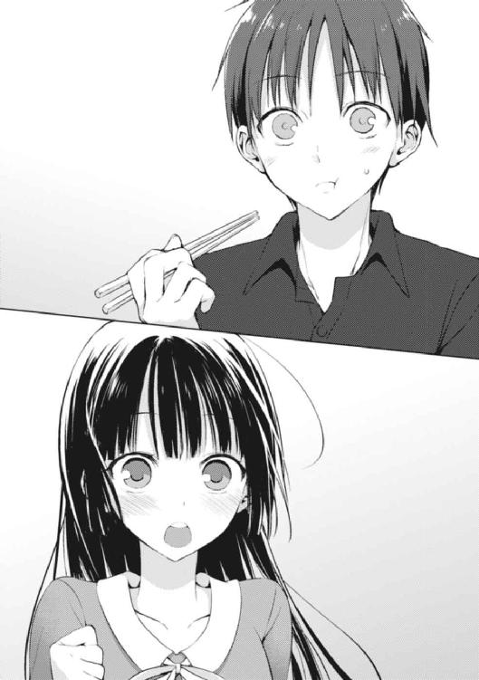
その「照れ」の原因も、きっと俺達の距離感にあるはず。
さすがに今すぐ紅緒を見まくる──のは難しいとしても、いつかそういうことが苦も無く出来る日が来るはずなのだ。
なんと素晴らしいことだろうか！ しかも、だ。しかもだぞ？
とんでもないことに──紅緒のメシに「マズい」と言って終わらなかったのだ！
つまりは驚異の「メシウマ締め」......には少し及ばないが、九十九パーセント予期していた「メシマズ締め」ではなかったのは確かである！
ただ、一つだけ心残りがなくはない。
結局──今年は紅緒のチョコを食べられそうにないこと。
「別に買って来た奴でもいいんだけど、さすがに今更かな......」
独りごち、僅かに残念がりながら席を立った俺は眠る紅緒を起こさないように忍び足で冷蔵庫へと向かった。色々なことが有り過ぎて、少し喉が渇いたのである。
何か、飲みたい気分だった。
「えーと」
ガコッと冷蔵庫の扉を開き、中を物色する。コーラ、オレンジジュース、豆乳、烏龍茶......さて、どれに──
「............ん？」
ここは変化球で豆乳にするか......と、黄緑色の紙パッケージを手に取った時だった。
──俺は、冷蔵庫内にとある「異変」があることに気付いてしまったのだ。
「この箱、何......？」
白い箱。
ケーキ屋でお持ち帰りをした時などに渡される箱と似ている。
ただ、奇妙なことがある。こんなモノは少なくとも昨日までは──いや、間違いなく今朝までは冷蔵庫の中になかったはずなのである。
となると、誰がこんなモノを？
俺なわけがないし、龍子姉さんや華凪はまだ家に帰って来ていない。紅緒も違う。アイツはこんな箱を持って家に来てはいない。ならば......。
「リリィ？」
放ってはおけない、と思う。
だってリリィは数日、日本に帰って来ないのだ。中に何が入っているかは不明だが、冷蔵庫の方に入っているのだから生モノだろう。少なくとも中身を確認しなくては。
......後になって思えば、それはあまりに余計な気遣いだった。
止めておけば良かったのだ。そうすれば、とても素晴らしい終わり方が出来た。大きな希望を持って、明日の朝日を見ることが出来たのだ。
──だって、その中に入っていたのは。
「............えっ」
箱を冷蔵庫から引っ張り出し、中身を確認した俺は思わず絶句せざるを得なくなる。
何故だ。
──どうして、こんなあるはずのないものが存在する？
しかし、その疑問の答えは中に入っていた「とある食べ物」と、添えられていたソレを補足する「手紙」によって明かされることになる。
そう、手紙だ。
俺は震える手でそのルーズリーフを切り離して作られた薄っぺらい紙に目を通した。
『ヨースケへ！ ヨースケがこの手紙をよんでいるとき、ワタシは既に日本にいないでしょう！（もしこれをみつけたのがヨースケ以外の誰かだった場合、それとなくヨースケに中身をかくにんするようにいってください）。そして、この手紙をヨースケがよんでいるとき、きっとヨースケとベニオはすばらしい関係になっているとかくしんしています！
ですが一つだけ、心残りがありました......ベニオはヨースケのためにチョコレートをよういしていないのです！ せっかくのバレンタインだというのに！
なので、飛びきりのサクシであるワタシは、すばらしいアイディアをおもいついたのです、ふふふふ......。これは、ヨースケのためにつくられたものではありません。でも、ベニオの気持ちがこもっているのは間違いありません。やっぱりバレンタインに、すきな相手からチョコレートをもらえないのはさびしいはずです！ なので、これをヨースケにプレゼントすることをワタシはきめたのです！（べつにワタシがもらった分を自分一人で全部たべるのが辛かったわけではありませんヨ......？）。そうなのです、これは──』
そこまで読めば、もう十分だった。
文末が『ちなみに、この手紙はこの十秒後にばくはつします』などとリリィなりのブリティッシュジョークが記されていたのだが、それを見て『リリィは可愛いなぁ』などと思う余裕すらなかったのだ。
思わず、俺は吐き出すように呟いた。
「紅緒の作った『友チョコ』......だと......」
友チョコ。
それは最近流行っているらしい女子同士でチョコレートを作り合い、贈り合う文化。
一説によると、近年では男子にチョコを渡す比率よりも、女の友人に友チョコを渡す比率の方が勝っているという報告すら存在しているらしい。
そうだ。何故、想像しなかったのだ。
紅緒は俺に渡すチョコを作らなかったとは言っていたが、別に友人達に渡すためのチョコを作らなかったとは一言もいっていないことを。
いや、紅緒だって悪気があったわけではないだろう。だってリリィに作って渡したらしい友チョコが、一計を案じた彼女によって、何故か俺のところに回って来るだなんて本人にとっても間違いなく予想外のはず。それどころか──
「......」
「............すぅ」
紅緒は、眠っている。
──よりにもよって、このタイミングで
もし、このリリィの手紙を紅緒が先に読んでいた場合、間違いなくソレを紅緒は握り潰していたはずだ。紅緒は手作りバレンタインチョコを俺に渡す勇気を未だに持てないでいる。そんな中、そもそも俺に渡すために作ってすらいないチョコがひょっこり出て来たのに気付いたりしたら──全力で、それを俺が食べることを阻止したに違いない。
「なんつー展開だよ......」
しかし、今、紅緒は意識がない。
当然、俺の手の中にある──ハート型の物体を奪い取ることなんて出来ないのだ。
「っ......！」
どうする。どうする、俺。選択肢は一応、二つある。一つは食べずに手紙だけを回収し、紅緒に全てを委ねる。もう一つは──
「そんなの、決まってんじゃねぇかよ......っ！」
考えるまでもなかった。
パンドラの箱は開かれてしまった。もう、先に進む以外の道はない。いや、それだけではない。だって、今日はアレだぞ？ バレンタインだぞ？
となれば──男ならば、絶対にこう考える。
断言してもいい。
「バレンタインに好きな子の作ったチョコがあったら、食うに決まってんだろうが!!」
俺は大口を開けて紅緒のハート型チョコに齧りついた。
そして、次の瞬間──思わず叫んでしまった。
ありったけの声で。腹の底から。眠ったままの紅緒を起こしてしまうであろう危険すら完全に忘却して。
「なんでチョコレートの中にパブロン入ってんだよ、紅緒おおおおおお!!」
愛しのあの子のメシマズは、多分、もうしばらく直りそうもないと確信しながら。
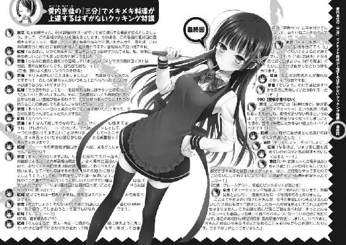
三月末日。
イギリスから来た天使──リリィ＝アップルガースはついに一年間のホームステイを終え、母国へと帰っていった。
送別会は盛大に開催された。学校で一回。そして、なんとオメガの協力の下、彼女の東京の分家で行われた一回だ。
より大きな盛り上がりを見せたのは、やはり超富豪である斎藤家の財力を申し分なく注ぎ込み、一部のより親しい人間だけを集めて開催された二回目の会だった。
どんな会だったかというと、ぶっちゃけ──結婚式に近かった。
主賓であるスーパープリティに着飾ったリリィが中央の壇上に座り、何故かその両隣に似合わないタキシードを着せられた俺と、スーパーゴージャスなドレスを着て更に可愛くなった紅緒が座り、俺達の司会進行の下、用意された様々なプログラムを進めて行ったわけだ。
が、ソレは主催者──斎藤オメガの狡猾な罠だった。
俺と紅緒が結ばれたことは、翌日には身内どころかクラス中にまで完全にバレていたらしく（聞くところによると『お前ら二人を見れば犬でも分かる』らしい。解せん）、俺達二人を司会に抜擢したのは、要所要所でそのことを煽り、ネタにしようという純度百パーセントの悪意に基づくモノだったのだ！
何故、リリィの送別会で、俺と紅緒が二人の馴れ初めや幼少時の出来事を発表させられたり、ポッキーゲームをやらされなければならないのか。何が『次のプログラムは司会両名によりますポッキーゲームです』だ！ もうノリが完全に馬鹿な大学生の合コンじゃねぇか!? 人の恋路を見世物にしてんじゃねぇよ畜生、バーーーーカ！
............え？ そんなこと、本当にやったのかって？
あ、はい......やりました......。
だってね、うん......リリィが見たがってたし、知りたがってたからね......俺は未だに文句言ってるけど、ぶっちゃけ、紅緒は結構ノリノリだったし......。
大体、俺と紅緒のことを誰よりも応援してくれて誰よりも気遣ってくれたのは──やっぱり、リリィなんだからな。リリィが日本にやって来たことで俺達の物語は始まって、リリィが日本からいなくなることで終わりを迎える──それが自然な形ってわけだ。
話を戻そう。
送別会のクライマックスは、お別れのスピーチだった。
これは紅緒と花菱が二人で担当した。元々は二人の考えた文章を、一緒に声を揃えて読む──という内容だったのだけど、実はコレ、最後まで読めなかった。
紅緒も花菱もボロッボロ泣いちゃってさ。
しかも、つられて泣いちゃう人が続出。あの鬼そのものである龍子姉さんですら、目頭を押さえていたからね。で、最終的にはリリィが耐えられなくなっちゃって、二人のところに突っ込んでって、三人で抱き合ってワンワン泣いて──おわり。
なんつーか、良い会だったよ。うん。
マジでスゲェ良かった。
参加した人間全てにとって、絶対に忘れられない最後になったと思う。
けれど......もう、この一件も一ヶ月ほど前の出来事になるわけだ。
季節は春。時は四月──俺は無事に私立木々津高校の三年生へと進学し、ついに大学受験の年を迎えることになった。非常に重要な一年になるのは間違いなかった。
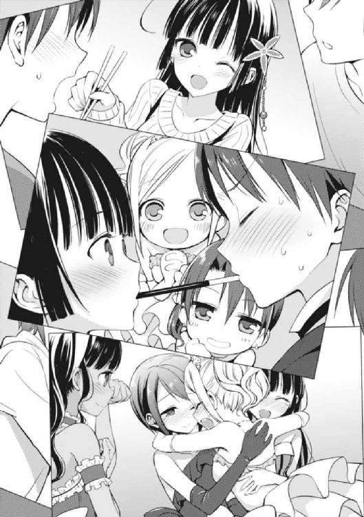
ところで、一つ、問題を出そう。
今現在、愛内家で暮らしている人間の数は何人？ 正解は────。
◇ ◇ ◇ ◇ ◇ ◇
「葉介！ 今日はアレンジして、フルーティな肉じゃがにしてみたよ！ どうどう!?」
「............微妙に、イケるような気が、しなくもない」
「きゃーーー！ もう一回言って！ どう？ おいしい!? おいしい!?」
「......少なくとも、マズくはない」
「やったあああーーー！ 超嬉しいよ！ マズくないんだ！ 凄いよ！ うあああああああ、葉介大好き！ ありがとう！ 私、京佳さんが今年もいなくても葉介が困らないようにもっともっと頑張るから！」
今にも俺に抱きつかんばかりのテンションで、香神紅緒が満面の笑みを浮かべた。
彼女は俺の幼馴染みであると同時に恋人でもあり、依然として──愛内家の台所を主に預かる存在だ。
要するに、そういうこと。
──お袋と親父は、四月からニューヨークで暮らしております。
つまり国を変えて、親父が今年も海外赴任することになってしまったのだ。で、お袋も当然のようにそれにくっついて行った。
別に珍しいことじゃねぇらしいけどな。親父の会社、海外顧客がメインの商社だし。
赴任地もイギリス→アメリカなんて二連発の大都会だし。親父の同僚にはサウジアラビアとかモロッコとか南アフリカに四、五年赴任することになっちまった人もいるって聞いたし。十分過ぎるくらい恵まれてる方だ。
だからまぁ、こうして今年も紅緒が料理を作っている。
ただ、俺のこの冴えない反応を不思議に思う者もいるだろう。
ついに紅緒は「肉じゃが」というレパートリーを手に入れたのだし、これで愛内葉介の食生活はそれなりに改善されて、いずれメシウマ状態になるのではないか──なぁんて考える奴が出て来ても、おかしくないかもしれない。
──甘い。
紅緒は「肉じゃが」だけならば、微妙に作れるようになった。
相変わらずワケの分からない材料を入れるし、味付けもブッ飛んでるけれど、不思議と他の料理を作った時と比べて、調和が取れていて、決してマズくはないモノが出来上がる。
別にウマいというわけでもないのだが。
しかし、だ。
その後、大いなる問題が噴出することとなったのだ。
「紅緒さぁ......もう俺、肉じゃが食うの飽きたんだけど......なんでこの一ヶ月、お前がメシ作る度に必ず『肉じゃが』が出て来るわけ......？」
「え。で、でも『肉じゃが』以外も作ってるよ？」
「そりゃそうだけど『肉じゃが』は絶対出てるじゃん」
「そ、そんなこと言われても......だ、だって私......『肉じゃが』しか葉介に『マズい』って言われない料理作れないし......ご、ごめん」
「............俺が悪かった。謝らないでくれ」
──紅緒が、マジで「肉じゃが」ばかり作っている、ということだ。
確かに、紅緒の意見が全面的に正しいのだ。
今のところ、紅緒はこの「肉じゃが」を超える味の料理を一つも生み出せていない。というか、超えるとかいうレベルではない。他の料理を紅緒が作ろうとすると一年前とサッパリ変わらない驚異のメシマズメニューが食卓に登場する。
ならば俺がちゃんと食える肉じゃがを毎食用意した上で、新しい料理に挑戦する──というのは非常に理に適っている。
でも、な。
肉じゃがって、ご飯のおかずにならんやん！
飽きるんや！
──どんなにおいしい料理であろうと、ずっと同じモノばかり食べているといずれ飽きてしまう。これは大食いのメソッドと一部似通っていて、最初のうちはとてもおいしかった料理でも、量が多過ぎると次第に飽きて来て見るのすらイヤになるわけだ。
ちなみに、ひたすら同じ料理ばかり食べることを差して「固食」という用語が実際に存在しているのである──立派なメシマズ要素として。
紅緒は間違いなく進化した。
自分でもちゃんとおいしく食べられる料理が作れることを証明し、メシマズモンスターの汚名を返上した──はずだったのに。
ところが、同時に逆方向にも進化してしまったわけで。
この後、彼女のメシマズっぷりがいったいどうなるのか──それはまだ俺にも分からない。と、もう一つ......言っておかなくちゃならない話があるな。ついさっき、送別会の話をしたばかりでナンなのだが──
「やりましたネ、ベニオ！ ワタシと一緒に、もっとれんしゅうして上手くなりましょう！」
──リリィも、二年目なんです。
これは要は進路に関係する話だ。実はリリィが二月に一時帰国した際、向こうでイギリスの学校に戻る以外にも、もう一年日本で勉強を続けてゆくゆくは日本の大学に通う──という選択肢が存在することを知ったのだという。
結果、リリィはもう一年日本に残ることを決断。
ただ、そのことをお袋を除いて誰にも言っていなかったため（というか、面白そうだからという理由で口止めされていたらしい）、結果として送別会が終わった一週間後くらいに、おずおずと再来日する──という非常に締まらない結末が待っていた。
もちろんリリィとまた同じ学校に通えると知った俺達は、なんか最近同じようなことをしたなと思いつつリリィの歓迎会を開催、俺と紅緒はまたしてもポッキーゲームをやらされる羽目になった。なんでやねん。
だから、さっきのクイズの答えは変わらずの「四人」だ。
俺、リリィ、華凪、龍子姉さん。
そして俺と恋人になったことが大きな理由なのだろう、今まで以上に足繁く愛内家に通うようになった紅緒。母親である耀子さんなどは『紅緒、もう葉介君のところに住んじゃってもいいんじゃないかしら』とか言ってるそうだが、父親である香神氏の全力の反対を受けて、まだ実現していない──ま、さすがにソレは俺も早過ぎだと思う。
まだ、な。
◇ ◇ ◇ ◇ ◇ ◇
人が生きていく上で、メシを食べることは必要不可欠な要素である。
けれど何が好きか、なんて人それぞれ。
自分とは違うものを責め立てるなんて不毛なことに違いない。
自分で作るのもいい。店で食うのもいい。スーパーの半額弁当だって十分な良さがあるし、コンビニ食だって意外と奥が深い。
けれど多分、世の男達が一番求めてやまないのは──可愛い女の子に手料理を作ってもらうということに違いない。それが好きな子だと更に良いし、相手もこちらのことを好きでいてくれるなら尚更、最高だ。
ただ、世の中はそんなに上手く出来ていないのだ。
俺は十分過ぎるほど、その事実を理解している。
──あんた達は、彼女たちの作るメシがマズかった場合、どうするだろうか？
俺は、食った。食って、食って、食いまくった。
けれど、コレはハッキリ言って相当な茨の道だ。余程のことがなければオススメはしない。もう本当に大変なことになるのは目に見えている。
でも、な。
世間で言われてるほど「メシマズ」っつーのは悪いもんじゃねーと思うぜ？
少なくとも、俺はそう思う。
ただし、あんたがうちと同じように「メシマズ彼女」をゲットしちまった時のことを考えて、一つだけアドバイスをさせて欲しい。
正直どうしようもない料理が出て来たとしても、絶対に誤魔化しちゃダメだ。しっかりと伝えてやってくれ。「マズい」ってさ。な、簡単だろ？
『彼女たちのメシがマズい１００の理由』（完）
あとがき
今までずっとメシマズは四ヶ月ペース刊行で来ていたのですが、今回は五巻から三ヶ月という短いスパンでの発売になります。
けれど、タイミングとしてはいい時期だなぁという気も。
というのも、少年エースで連載していた漫画版が先週発売の最新号で完結し、コミックの二巻（最終巻）も今月末に発売されるのです。全て間を置かずに「メシマズプロジェクト」が大体全部一段落付いた形になったわけです。いや、プロジェクトなんて大層なモノでもありませんが。アレとか、アレみたいな。
それにほら、三月から四月といえば終わりと始まりの季節でもありますし。作品が完結するのに、これほど相応しい月日というのも存在しないでしょう。おそらく。
そんなわけで最終巻になります。
一巻の発売が二〇一二年の九月なので、ほぼ一年半のシリーズでした。ただ、作者としての付き合いはもっと長く、応募原稿を書き始めたのが二〇一〇年の秋頃のはず。
そして翌年の三月〆切りのスニーカー大賞に応募して、最初に編集部から電話を貰ったのが二〇一一年末。そこからフラフラと最終選考状態のまま改稿──なので、二〇一二と二〇一三はメシマズに付きっきりだったので、二〇一〇と二〇一四の分を足して、二年半くらいはこの作品に専念していた計算になるのかな？
メシマズは続けることを一切考えてなかった話なので、色々と変えた部分が多い話でした。特に一巻と二巻は今読み直すと『あれ、これ書いたの誰......!?』となる箇所が結構あるわけでして。
ただ、そんな中で面白いのが最終巻を書くために当時の応募原稿を引っ張り出してくるシチュエーションが多々あったということ。エピローグの一番最後の節とか、元々は一巻のプロローグにあたる部分だったんですよね。色々変えても骨子は同じなのだから、何だかんだで帰ってくるんだなぁ、と感慨深く思ったり。
実際、この「彼女たちのメシがマズい一〇〇の理由」シリーズはメシマズヒロインに焦点を当てたラブコメ──という形でスタートしたわけですが、この「メシマズ」というテーマが中々難しい。
いや、超難しい。
まさに日々の献立を考える母親的悩みと作家的悩みが混同した中で一番大きな変更点は、そもそもこの作品に「香神紅緒」なんて人物は存在しなかったということじゃないかと思います。
名前が違ったとか、そういうことじゃありません。メシマズに紅緒みたいなキャラは存在しなかったんです。応募時には。
代わりに料理をマズいと言われるとマジギレして葉介をブン殴るヒロインがそのポジションには座っていました。当時、ラブコメって書いたことなかったので、ラブコメのメインヒロインは暴力を振るわなければならず、よく分からないけれど、それが正しいのかと思ってそうしたのです。まぁ正しくなかったんですが。
けれど、そんな色々あったシリーズも今回で終わりです。
これまで五冊本を出してきたわけですが、何と言っても今回、時系列的に一番最後に書いたシーン（これが何の因果か、エピローグではなくて四章のラストパート）を書き上げた時の「終わった感」は凄かったです。
まさか、終わるとは。
まさか、終わるのか。
そうか、終わったのだ。
......みたいな境地とでも言いますか。この終末感を次にも味わえるような話を出せたらいいな、と思います。切に。
最後に謝辞を。
毎巻イラストを担当して下さった、たいしょう田中さん。同業者の大半が同じことを思っている気がしますが、やっぱり言わずにはいられません──業界見回しても、うちのイラストレーターさんが一番最高でした、と。
本当にありがとうございました。
編集を担当して下さった山口さん、金丸さん。途中、色々とご迷惑をお掛けしてしまって大変申し訳ありませんでした。このシリーズはお二人のご協力がなければ成立しませんでした。本当にありがとうございました。
最後に読者の皆さんへ。
葉介を、紅緒を、そして「彼女たちのメシがマズい一〇〇の理由」という作品にここまで付き合って下さって本当にありがとうございました。愛して下さって本当にありがとうございました。
ご縁がありましたら、是非ともまた。
高野 小鹿
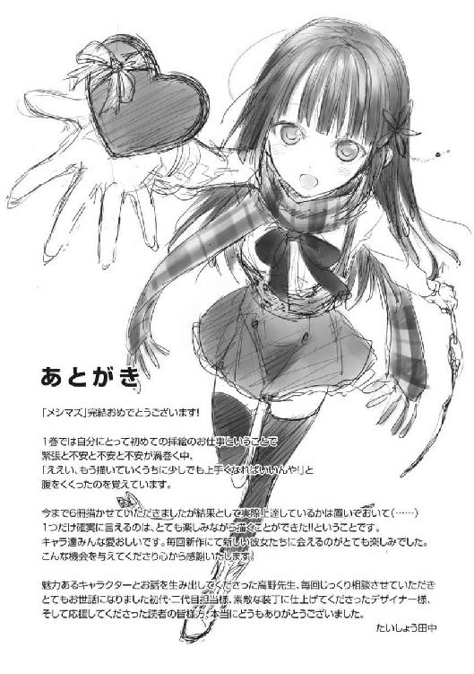
カバー・口絵・本文イラスト／たいしょう田中
カバー・口絵・本文デザイン／伸童舎
彼女たちのメシがマズい100の理由6
高野小鹿
平成26年4月1日 発行
(C)2014 Koroku Takano, Taisyou Tanaka
本電子書籍は下記にもとづいて制作しました
角川スニーカー文庫『彼女たちのメシがマズい100の理由6』
平成26年4月1日初版発行
発行者 三坂泰二
発 行 株式会社ＫＡＤＯＫＡＷＡ
〒102-8177 東京都千代田区富士見2-13-3
電話 0570-002-301（カスタマーサポート・ナビダイヤル）
受付時間 9：00～17：00（土日 祝日 年末年始を除く）
http://www.kadokawa.co.jp/